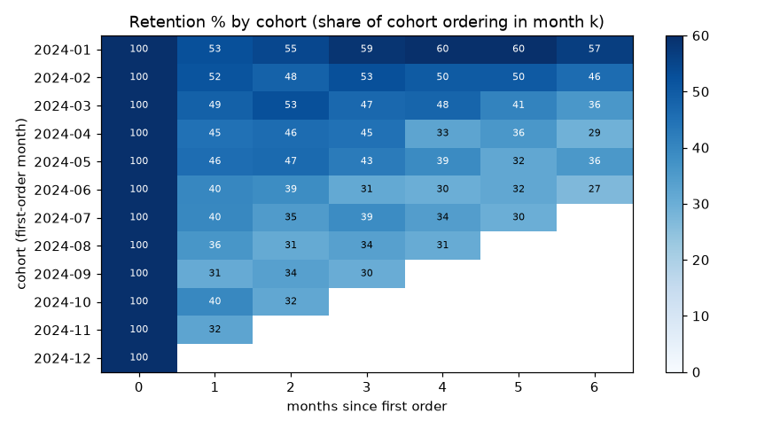
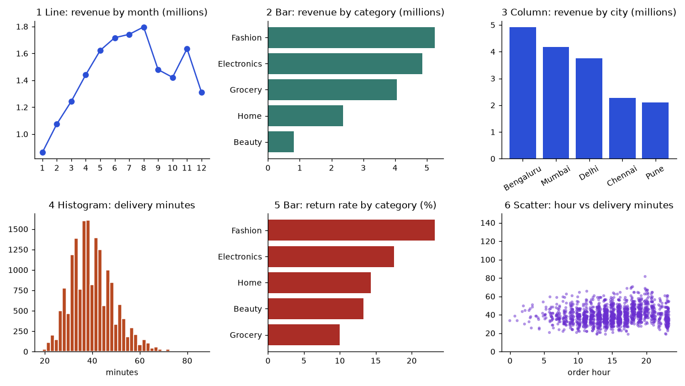
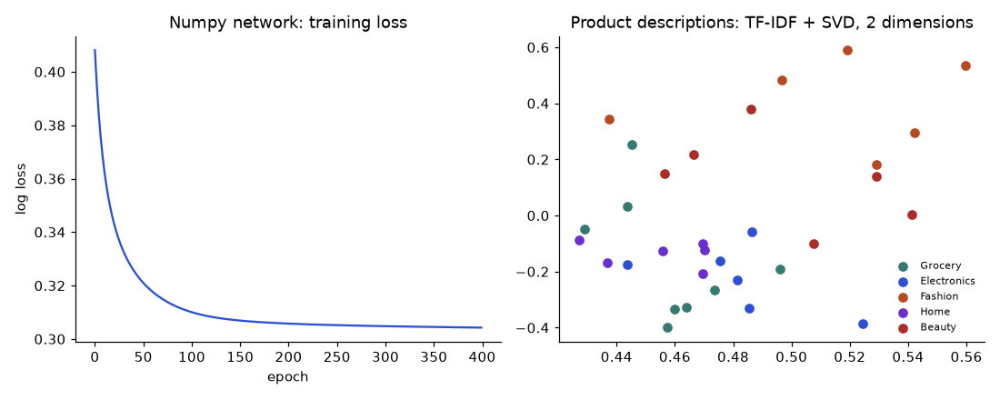

One Dataset, End to End: From Raw Data to Decisions
A single online-shop dataset analysed in eight stages and in every common tool, with real SQL and Python output, honest results, and a map of which role and which tool fits each stage.
Taught the IIT Professor Way — Real Numbers. Real Problems. Real Understanding.
A Note From Your Professor
Most courses teach one tool at a time: a SQL course, an Excel course, a machine learning course. Real work does not arrive that way. A manager sends you a folder of files and a vague worry, and you must find your own path from raw data to a decision, using whatever tools your company happens to have. This document teaches that path. It takes one dataset, the orders of an imaginary quick-commerce company called ShopKart, and walks it through eight stages: frame the problem, engineer the data, clean it, analyse it, test ideas statistically, build machine learning models, ask whether deep learning and generative AI add anything, and finally deliver, monitor and explain the result.
At every stage the same task is solved in several tools, and the answers are checked against each other. SQL, pandas and plain Python are run here and their real output is printed. Excel, Power BI (DAX and Power Query) and R are shown as exact formulas and steps, labelled "not run here", and cross-checked against the verified numbers. You will see why tools agree, why they sometimes differ, and which one to pick for which job. You will also see honest results, including ones that disappoint: a neural network that does not beat logistic regression, a forecast where the naive method wins, a significant difference that survives one check but may still not be real.

How to use this document
- Download or open the
study/ways/data/folder. Every code block starts withDATA = "...", the absolute path to that folder; change it if you move the files. - Read the chapters in order the first time. Chapter 1 and 3 are the foundation for everything else.
- Run each block and change a number before you press Enter. Predict the result first.
- Do the practice set at the end of each chapter before reading the answers. Use the three prompts to be quizzed, reviewed and interviewed by an AI of your choice.
- Use the appendix (end-to-end checklist and syntax translations) when you apply the path to your own data.
The path, the roles and where to read next
| Stage | Main roles | Read next in the other documents | Here |
|---|---|---|---|
| 1 Frame | Everyone; the analyst leads | Analyst document, Chapter 1 (the analytics mindset) | Chapter 1 |
| 2 Engineer | Data engineer | Data Engineering document, Chapters 1, 4, 5 and 6; SQL document, Chapters 9 and 10 | Chapter 2 |
| 3 Clean | Analyst, data engineer | Analyst document, Chapter 5 (pandas cleaning); Data Science document, Chapter 2 | Chapter 3 |
| 4 Analyse | Analyst | SQL document, Chapters 3, 4, 8 and 12; Analyst document, Chapters 3, 9, 10 and 12 | Chapter 4 |
| 5 Test | Analyst, data scientist | Statistics document, Chapters 3, 4 and 12; Analyst document, Chapter 13; Data Science document, Chapters 7 and 9 | Chapter 5 |
| 6 Model | Data scientist, ML engineer | Machine Learning document, Chapters 4, 6, 7, 8 and 9; Data Science document, Chapters 5, 6 and 12 | Chapter 6 |
| 7 Deep and GenAI | ML and GenAI engineers | Deep Learning document, Chapters 1 and 2; NLP, LLMs, RAG and Agents document, Chapters 2, 6, 7 and 12 | Chapter 7 |
| 8 Deliver | ML engineer, analyst | MLOps document, Chapters 1, 7 and 10; Analyst document, Chapter 14 (memo); Career document for portfolio and interviews | Chapter 8 |
The ShopKart dataset
The data was generated by tools/ways/make_data.py with a fixed random seed, so every reader has identical files. It is synthetic: nothing in it is real customer data, and any patterns were built in by the generator or arose by chance. It also contains the faults of real data on purpose: 150 duplicate rows, eighteen spellings of five cities, missing values, impossible quantities and delivery times, and returns.
| File or table | Rows | Columns | Notes |
|---|---|---|---|
| orders.csv / orders | 20,150 (20,000 distinct orders) | order_id, customer_id, order_date, order_hour, city, channel, category, product, quantity, unit_price, discount, status, promised_minutes, delivery_minutes | 2024-01-01 to 2024-12-31; status is delivered, returned or cancelled; promised and delivery minutes empty for store pickup and cancelled orders |
| customers.csv / customers | 4,000 | customer_id, signup_date, segment, age | segment Regular, Premium or Student; about 4 percent of ages missing |
| products.csv / products | 32 | product_id, product, category, list_price, unit_cost, description | five categories; descriptions are used for text work in Chapter 7 |
| shopkart.db | 3 tables | same as the CSV files | SQLite database, used for all SQL examples |
| prep.py, mlprep.py | helpers | cleaning rules (Chapter 3) and feature builders (Chapters 6 to 8) | imported by code blocks from the data folder |
Tools you need
| Tool | Needed for | Status in this document |
|---|---|---|
| Python 3 with numpy, pandas, scipy, scikit-learn, matplotlib, joblib | All runnable code | Run, with real output |
| SQLite (built into Python through the sqlite3 module) | All SQL examples, window functions need SQLite 3.25 or newer | Run, with real output |
| Excel (desktop, 365 recommended) | Formulas, PivotTables, Power Query, charts | Shown as formulas and steps, not run here |
| Power BI Desktop (free) | Power Query, DAX measures, visuals | Shown as steps and measures, not run here |
| R with tidyverse (optional) | dplyr, readr and statistics equivalents | Shown, not run here |
| Optional extras: pyarrow, statsmodels, sentence-transformers, fastapi | Parquet, regression inference, embeddings, serving | Code shown, not run here |
If you do not own Excel or Power BI, read those parts as pseudocode: the logic is the same as the SQL and pandas next to them, and the appendix translates between them line by line.
It is Monday, 9:40. Meera, head of growth at ShopKart, a quick-commerce shop that delivers groceries, electronics, fashion, home goods and beauty products in five Indian cities, forwards you an email from the CEO: "Orders are up but I do not feel richer. Are deliveries getting late? Are customers leaving? What should we do next quarter?" Attached is a folder: a 1.7 MB file called orders.csv, another called customers.csv, a small products.csv and a database file. No instructions. No definitions. A meeting at 15:00.
What you do in the next few hours decides everything. Do you open Excel, run a query, write a notebook? Do you clean first, or explore first? Do you build a model before you know what "late" means? Most beginners jump to a tool. Experts first fix the question, then walk a path that is almost always the same: frame the problem, ingest and store the data, clean and profile it, analyse it, test ideas with statistics, model the future with machine learning, add deep learning and GenAI where they truly help, and finally deliver and monitor the result.
This document takes you along that path, once, end to end, on one dataset. Every stage is a chapter. In every stage we show the process as numbered steps, the tools that can do it (SQL, pandas, plain Python, Excel, Power BI and sometimes R, side by side), the thing you must produce, and what goes wrong. After this first chapter you will be able to turn a vague email into ten measurable questions, load the data in every common tool, and know the expected answers before you start, so that you can tell when a tool or a person is wrong.
1.1 The path from raw data to decisions
Think of cooking for a dinner party. You decide the menu (framing), buy and store ingredients (data engineering), wash and trim them (cleaning), taste and combine (analysis), check a recipe change with a fair taste test (statistics), cook tomorrow's menu from patterns of what guests ate (machine learning), try an exotic technique if it adds something (deep learning, GenAI), and finally serve, and watch whether guests keep coming back (operations and monitoring). Nobody starts with the exotic technique. Nobody serves unwashed vegetables.
| Stage | Chapter | Main question | What you produce | Main roles |
|---|---|---|---|---|
| 1 Frame | 1 | What decision are we helping, and how will we know we are right? | Question list, metric definitions, data dictionary | Everyone, analyst leads |
| 2 Engineer | 2 | Where does the data live, and can we load it again tomorrow? | Tables, schema, quality checks, pipeline script | Data engineer |
| 3 Clean | 3 | Can we trust the numbers? | Cleaned tables and a cleaning log | Analyst, data engineer |
| 4 Analyse | 4 | What happened, where and for whom? | Aggregates, cohorts, charts, dashboard | Analyst |
| 5 Test | 5 | Is the difference real, and what will happen next month? | Intervals, test results, forecasts | Analyst, data scientist |
| 6 Model | 6 | Who will be late, who will leave? | Validated model, metrics, cost-based threshold | Data scientist |
| 7 Deep and GenAI | 7 | Do richer models or language models add value? | Neural net, text search, QA prototype | ML and GenAI engineers |
| 8 Deliver | 8 | How do we ship it and keep it healthy? | Packaged model, monitoring, decision memo | ML engineer, analyst |
Going deeper: why one dataset?
Real projects do not give you a new dataset at each stage. They give you one messy source, and the quality of every later stage depends on choices made in earlier ones: how you handled the duplicates changes revenue, which changes the forecast, which changes the model's training labels. Using a single dataset throughout lets you see these dependencies. When you reach Chapter 6 and a feature is suspiciously good, you will already know the dataset well enough to ask why.
1.2 From an email to ten measurable questions
"Orders are up but I do not feel richer" is not a question a computer can answer. A measurable question names a metric (a number computed in a defined way), a slice (period, city, segment) and a comparison (against what). The process has four steps.
- Restate the decision. Here: where to spend next quarter's budget (delivery capacity, discounts or retention).
- List candidate metrics. Revenue, order count, average order value, return rate, late rate, repeat rate.
- Define each metric in one sentence with its filter, so two people compute the same value.
- Write the expected shape of the answer (a number, a table, a chart, a yes or no).
| # | Business question | Metric definition | Answered in |
|---|---|---|---|
| Q1 | How big was 2024? | Number of distinct orders after removing duplicates; net revenue = quantity × unit price × (1 − discount) for delivered orders only | Ch 1, 3, 4 |
| Q2 | When do we sell most? | Net revenue by month | Ch 4 |
| Q3 | Which category earns most? | Net revenue by category | Ch 4 |
| Q4 | Which city earns most? | Net revenue by standardised city | Ch 3, 4 |
| Q5 | How many orders come back? | Returned orders ÷ all orders | Ch 4 |
| Q6 | Are deliveries late? | Late = delivery minutes > promised minutes; rate over orders that have both numbers | Ch 4, 6 |
| Q7 | How much does an order bring? | Average net value of delivered orders | Ch 4 |
| Q8 | Do customers come back? | Share of customers with at least 2 orders; month-1 and month-3 retention | Ch 4 |
| Q9 | Do discounts cause more sales? | Difference in units per order between discount and no-discount, with an interval | Ch 5 |
| Q10 | Who is about to leave, and which order will be late? | Predicted probability, evaluated on future data | Ch 6, 7, 8 |
1.3 The dataset: dictionary and structure
ShopKart has three tables. The data was generated by a script (tools/ways/make_data.py, a fixed random seed) so that every reader gets identical files, but it contains the faults of real data on purpose: spelling variants, missing values, duplicate rows, impossible values and extreme outliers. Nothing in it is real customer data.
| Table | Column | Meaning | Type | Known quirks |
|---|---|---|---|---|
| orders | order_id | Unique id of an order line | integer | 150 ids appear twice (duplicates) |
| orders | customer_id | Who ordered, joins to customers | integer | none |
| orders | order_date | Date of order, 2024-01-01 to 2024-12-31 | date text | read as text in some tools |
| orders | order_hour | Hour of day 0 to 23 | integer | none |
| orders | city | Delivery city | text | spelling variants, trailing spaces, 120 missing |
| orders | channel | App, Web or Store pickup | text | about 60 missing |
| orders | category, product | What was bought; product joins to products | text | none |
| orders | quantity | Units | integer | 5 absurd values (40, 60, 99) |
| orders | unit_price | Price per unit in rupees | decimal | 90 missing |
| orders | discount | Fraction taken off, 0 to 0.2 | decimal | none |
| orders | status | delivered, returned or cancelled | text | none |
| orders | promised_minutes | Delivery promise, 45 or 60 | decimal | empty for store pickup |
| orders | delivery_minutes | Actual minutes to deliver | decimal | empty if cancelled or pickup; negative and extreme values |
| customers | customer_id, signup_date, segment, age | Who the customer is | mixed | segment Regular, Premium or Student; about 4 percent of ages missing |
| products | product_id, product, category, list_price, unit_cost, description | Catalogue | mixed | 32 products, used for text work in Ch 7 |
The files live in study/ways/data/: orders.csv, customers.csv, products.csv and shopkart.db (the same three tables in SQLite). In every code block of this document the first line is DATA = "...", an absolute path to that folder. Change it if you move the files. The file prep.py in the same folder contains the cleaning we develop in Chapter 3, so later chapters can reuse it without repeating 15 lines in every block.
1.4 Loading the data in every tool
Loading looks trivial and is where many silent errors begin: a date read as text, an id read as a number with a decimal point, a leading zero lost, an encoding wrong. For each tool we show the exact action, then compare the first answer: how many rows?
Problem 1.4.1 Load orders.csv and report the number of rows and columns, and the date range, with pandas, with plain Python, and with SQLite.
| Idea | Three tools must agree before we trust any of them. The raw file has one header line plus one line per order row. |
|---|---|
| pandas | read_csv with parse_dates turns the date text into real dates. |
| Plain Python | the csv module reads each line as strings; you convert yourself. |
| SQLite | the database already stores the table; COUNT(*) counts rows. |
DATA = "data/"
import csv, sqlite3
import pandas as pd
# 1. pandas
df = pd.read_csv(DATA + "orders.csv", parse_dates=["order_date"])
print("pandas :", df.shape, df.order_date.min().date(), df.order_date.max().date())
# 2. plain Python
with open(DATA + "orders.csv", newline="") as f:
rows = list(csv.DictReader(f))
dates = [r["order_date"] for r in rows]
print("python :", (len(rows), len(rows[0])), min(dates), max(dates))
# 3. SQL (SQLite)
con = sqlite3.connect(DATA + "shopkart.db")
print("sql :", con.execute("SELECT COUNT(*), MIN(order_date), MAX(order_date) FROM orders").fetchone())pandas : (20150, 14) 2024-01-01 2024-12-31
python : (20150, 14) 2024-01-01 2024-12-31
sql : (20150, '2024-01-01', '2024-12-31')All three say 20,150 rows. ISO dates (year-month-day) sort correctly even as text, which is why the plain Python and SQL versions get the right minimum and maximum without conversion. This is also why you should always store dates in ISO form.
The same load in Excel, Power BI and R (not run here)
| Tool | Steps or code | Watch out for |
|---|---|---|
| Excel | Data tab, Get Data, From Text/CSV, pick orders.csv, check that the detected delimiter is a comma, click Transform Data if you need to fix types, then Load. Keep it as a Table (Ctrl+T) and name it Orders. | Opening the CSV by double-click lets Excel guess types and can turn dates into the local format. A sheet holds at most 1,048,576 rows, plenty here. |
| Power BI | Home, Get data, Text/CSV, orders.csv, Transform Data. In Power Query set order_date to Date, order_id and customer_id to Whole Number, prices to Fixed decimal. Close and Apply. | Type detection samples only the first 200 rows by default; set it to the entire dataset for safety. |
| R | orders <- readr::read_csv(file.path(DATA, "orders.csv")) then dim(orders) | readr guesses types from the first 1,000 rows; give col_types to be sure. |
orders.csv in Excel, seeing 2024-03-04 turn into 04-03-2024 and then reading it as 4 March in one place and 3 April in another. Right: load through the import wizard or Power Query and set the date type explicitly. Rule of thumb: after every load, print the types and the min and max of every date.1.5 A first profile in two tools
A profile is a one-page health check: how many rows, how many missing values per column, how many distinct values in key columns, what ranges numbers have. It costs minutes and prevents hours of confusion. The full cleaning is Chapter 3; here we only look.
DATA = "data/"
import pandas as pd
df = pd.read_csv(DATA + "orders.csv", parse_dates=["order_date"])
print("rows", len(df), "| distinct order_id", df.order_id.nunique(), "| distinct customers", df.customer_id.nunique())
print("fully duplicated rows:", df.duplicated().sum())
print("missing per column:")
print(df.isna().sum()[lambda s: s > 0].to_string())
print("distinct city spellings:", df.city.nunique())
print(df[["quantity", "unit_price", "delivery_minutes"]].describe().loc[["min", "50%", "max"]].round(1).to_string())rows 20150 | distinct order_id 20000 | distinct customers 3216
fully duplicated rows: 150
missing per column:
city 120
channel 61
unit_price 90
promised_minutes 1998
delivery_minutes 2791
distinct city spellings: 18
quantity unit_price delivery_minutes
min 1.0 40.0 -23.0
50% 2.0 330.0 39.0
max 99.0 3425.0 2900.0The same profile in SQL asks the database to count for us. SQLite has no built-in describe, so we write each statistic, which is more typing and also makes each definition explicit.
DATA = "data/"
import sqlite3
con = sqlite3.connect(DATA + "shopkart.db")
q = """
SELECT COUNT(*) AS n_rows,
COUNT(DISTINCT order_id) AS n_order_ids,
COUNT(DISTINCT customer_id) AS n_customers,
SUM(city IS NULL) AS city_missing,
SUM(unit_price IS NULL) AS price_missing,
SUM(channel IS NULL) AS channel_missing,
COUNT(DISTINCT city) AS city_spellings,
MIN(quantity) AS qmin, MAX(quantity) AS qmax,
MIN(delivery_minutes) AS dmin, MAX(delivery_minutes) AS dmax
FROM orders"""
cur = con.execute(q)
for name, val in zip([d[0] for d in cur.description], cur.fetchone()):
print(f"{name:18s}{val}")n_rows 20150
n_order_ids 20000
n_customers 3216
city_missing 120
price_missing 90
channel_missing 61
city_spellings 18
qmin 1
qmax 99
dmin -23.0
dmax 2900.0Both profiles agree: 20,150 rows but only 20,000 distinct order ids (so 150 duplicates), 120 missing cities, 90 missing prices, about 60 missing channels, many city spellings, quantities up to 99 and delivery times from negative to 2,900 minutes. Notice that pandas says "unique values" and SQL says COUNT(DISTINCT); both ignore missing values, a fact that matters for Chapter 3.
1.6 The expected answers: raw versus cleaned
Before analysis, write down what each tool should return. You will check this table again in Chapters 3 and 4, in four tools. Notice how far the naive answer is from the cleaned one: this is the reason the next two chapters exist.
DATA = "data/"
import sys
sys.path.insert(0, DATA)
import prep
raw, cust, prods = prep.load_raw(DATA)
o, cust, prods = prep.load_clean(DATA)
naive_rev = (raw.quantity * raw.unit_price * (1 - raw.discount)).sum()
print(f"raw rows {len(raw):>12,}")
print(f"clean orders {len(o):>12,}")
print(f"naive revenue {naive_rev:>12,.0f} (all rows, no cleaning, missing prices skipped)")
print(f"clean net revenue {o.revenue.sum():>12,.0f} (delivered only)")
print(f"avg order value {o[o.status=='delivered'].net.mean():>12,.1f}")
print(f"return rate {(o.status=='returned').mean():>12.4f}")
print(f"late rate {o.late.mean():>12.4f} ({o.late.notna().sum():,} orders with both times)")
print(f"repeat customers {(o.groupby('customer_id').size() >= 2).mean():>12.4f}")raw rows 20,150
clean orders 19,995
naive revenue 22,404,947 (all rows, no cleaning, missing prices skipped)
clean net revenue 17,349,916 (delivered only)
avg order value 1,073.2
return rate 0.1476
late rate 0.1376 (17,208 orders with both times)
repeat customers 0.8096Naive revenue is about 1.29 times the clean value, an overstatement driven by returned and cancelled orders, duplicates and the absurd quantities. Which one the CEO should see is a definition question (Section 1.2), not a computing question.
| Question | Clean answer (pandas) | How the other tools get it |
|---|---|---|
| Q1 orders, revenue | 19,995 orders; rupees 17,349,916 | SQL SUM(revenue) on cleaned table; Excel SUMIFS; DAX SUMX |
| Q2 best month | month 8 (rupees 1,796,818) | SQL GROUP BY substr(order_date,1,7); PivotTable by month |
| Q3 top category | Fashion (30.2% of revenue) | same pattern, group by category |
| Q4 top city | Bengaluru (28.6%) | requires cleaned city names first |
| Q5 return rate | 14.8% | AVG(status='returned') in SQL; COUNTIFS ÷ COUNTA |
| Q6 late rate | 13.8% | AVG(late) ignoring missing |
| Q7 average order | rupees 1,073 | AVERAGEIFS; DAX AVERAGEX |
| Q8 repeat share | 81.0% of customers who ordered | SQL GROUP BY customer_id HAVING COUNT(*)>=2 |
1.7 Ethics, privacy and scope
Every stage touches people. A customer id looks harmless until it is joined with age, city and order times; then it can single out an individual. Four habits protect people and you.
- Minimise. Take only the columns you need. We will never need names or addresses, and the dataset has none.
- Pseudonymise. Keep ids, not names. Store the lookup table elsewhere under access control.
- Check fairness before deploying. A model that predicts late deliveries per city may send worse service to the cities it predicts as slow. Compare errors across groups (Chapter 6).
- Document limits. State what the data cannot answer: one year, five cities, no competitor data, no reasons for returns.
Going deeper: aggregate before you share
A table with fewer than a handful of people in a cell (for example, Student customers in Pune who ordered Perfume on one date) can re-identify someone. A simple rule used by many organisations is a minimum group size (often 5 to 10) before a number leaves the team. It is a policy choice, not a law of nature; ask your data protection officer for the actual threshold in your company.
1.8 Choosing tools: a first map
The same Q1 to Q8 can be answered by any tool in the table. The tool changes who can do it, how fast, and how repeatable it is.
| Tool | Strength | Weakness | Best when |
|---|---|---|---|
| SQL | Fast on large tables, one declarative statement, lives next to the data | Awkward for statistics and charts | The data already sits in a database |
| pandas | Flexible, scriptable, links to statistics and ML | Memory bound on one machine | Exploration, cleaning, modelling |
| Plain Python | No dependencies, teaches the logic | Slow and verbose for tables | Tiny jobs, logic that tables cannot express |
| Excel | Everyone has it; instant visual feedback | Hidden manual steps, hard to audit | Small data, quick checks, stakeholder hand-offs |
| Power BI | Interactive dashboards, a governed data model | Learning DAX; less suited to modelling | Recurring reports for many viewers |
| R | Statistics and graphics are first class | Smaller engineering ecosystem | Statistical analysis, academic work |
Chapter 4 gives a full decision matrix; for now remember that a good analyst can read all of these and writes in two or three of them.
Chapter recap
- The path is frame, engineer, clean, analyse, test, model, deep and GenAI, deliver; expect loops.
- Turn a vague email into metrics with a definition, a slice and a comparison.
- ShopKart has orders (20,150 raw rows), customers (4,000) and products (32), with deliberate quirks.
- Always load with explicit types and print the min and max of dates.
- A profile (rows, distinct keys, missing values, ranges) takes minutes and finds most data problems.
- pandas, plain Python and SQL agree on row counts; if they ever disagree, a type or a definition differs.
- Naive and cleaned revenue differ by a large factor; definitions decide which is right.
- Choose the denominator of every rate on purpose.
- Minimise, pseudonymise, check fairness and document limits.
| Pattern | Meaning |
|---|---|
| Metric = definition + slice + comparison | A measurable question |
COUNT(DISTINCT id) vs len(df) | Distinct entities vs rows; difference shows duplicates |
| Rate = events ÷ eligible cases | Choose the eligible set explicitly |
| Profile first | Rows, keys, missing, ranges, types |
Practice set
Problem 1.9.1 Name the eight stages of the path and the chapter where each is covered.
Answer: Frame (1), engineer (2), clean (3), analyse (4), test (5), model (6), deep learning and GenAI (7), deliver (8).
Problem 1.9.2 Rewrite "Are customers leaving?" as a measurable question with a metric, a slice and a comparison.
Answer: "What share of customers who ordered in Q3 2024 placed no order in the following 90 days, and is it higher for Student than Regular customers?" Metric: churn share; slice: Q3 customers; comparison: Student versus Regular.
Problem 1.9.3 How many orders (rows) does the raw file have, and how many distinct order ids?
Answer: 20,150 rows and 20,000 distinct ids, so 150 duplicates.
Problem 1.9.4 Give the formula for net revenue of one order line and compute it for 3 units at 250 rupees with a 10 percent discount.
Answer: quantity × unit price × (1 − discount) = 3 × 250 × 0.9 = 675 rupees.
Problem 1.9.5 In SQL, which function counts rows and which counts distinct values, and how do both treat NULL?
Answer: COUNT(*) counts rows including NULLs; COUNT(col) skips NULLs; COUNT(DISTINCT col) counts distinct non-NULL values.
Problem 1.9.6 Why do ISO dates (2024-03-04) sort correctly as plain text?
Answer: The most significant part (year) comes first, then month, then day, all zero padded, so alphabetical order equals chronological order.
Problem 1.9.7 What are three ways the naive revenue of the raw file is wrong?
Answer: It includes duplicate rows, returned and cancelled orders (depending on definition), and the absurd quantities (40, 60, 99); rows with missing prices contribute nothing.
Problem 1.9.8 Late rate is 13.8% over 17,208 orders. How many late orders is that?
Answer: 2,367 late orders (rate × count, checked against the data).
Problem 1.9.9 Which two columns of the orders table cannot be used to judge lateness for a store pickup order, and why?
Answer: promised_minutes and delivery_minutes are empty, because nothing is delivered.
Problem 1.9.10 Find the bug: "return rate = returned rows ÷ distinct customers".
Answer: The numerator counts orders and the denominator counts people; units differ. Use returned orders ÷ all orders.
Problem 1.9.11 List three columns that together could identify a person and say how you would reduce the risk.
Answer: For example customer_id with age and city. Keep ids pseudonymous, bin age into ranges, and suppress cells with very few people.
Problem 1.9.12 Excel opens the CSV and shows 4.3E+05 in the order_id column. What went wrong and how do you fix it?
Answer: Excel guessed a number format for a wide numeric id and displays scientific notation. Import through Get Data, set the column to Whole Number or Text, widen the column and apply the Number format with no decimals.
Problem 1.9.13 Interview style: "Your dashboard shows revenue of X and finance says Y. What do you do?"
Answer: Compare definitions first (gross or net, delivered only, time zone, duplicates), then compare row counts, then reconcile a single day. Document the agreed definition.
Prompt pack
You are my patient, practical professor. I am a working professional moving into data roles. Quiz me, one question at a time, on framing an analytics problem: turning a vague business email into measurable questions with a metric definition, a slice and a comparison. Use an online retail example (orders, customers, deliveries, returns). After each answer tell me what was good, what was missing and give a harder follow-up. Do 8 questions and finish with a score.
Act as a senior analyst reviewing my work. Here are my ten business questions and metric definitions: [paste them]. Check each for ambiguity (denominator, filter, period), point out where two people could compute different numbers, and suggest a sharper wording. Then list five data quality checks I should run before trusting the answers.
Run a mock interview for a junior data analyst role. Start with: "Your CEO says orders are up but revenue feels flat. How do you investigate?" Ask follow-ups one at a time about definitions, duplicates, returns, discounts and the choice of tool (SQL, pandas, Excel, Power BI). Grade my answers at the end and tell me what a strong answer would add.
On Tuesday morning the CEO's question is answered, but on Wednesday the finance team sends a fresh export of orders.csv and the numbers move. Somebody pasted new rows under old ones; somebody else filtered the file and saved it under the same name; a third person cannot say which version was used for last week's slides. Nobody was careless. The team simply has no process that turns a file into a trusted table. That process is data engineering, and it is the quiet half of every analytics and machine learning project.
In this chapter you will take ShopKart's flat files and build a small, repeatable, checked pipeline: define a schema, load the tables into a database, add keys and indexes, load new data incrementally without creating duplicates, run quality checks that stop bad data at the door, and wrap it all in one script that you can schedule. You will meet each idea in SQL and pandas (run here) and see the Excel, Power BI and R versions (not run here). After the chapter you will know what a warehouse table is, why a load must be idempotent, and what to put in a quality check.
2.1 From files to tables: what engineering adds
A file is data at rest in one shape. A table in a database is data with rules: every column has a type, a key makes rows unique, a constraint can reject nonsense, an index makes searches fast, and a transaction guarantees that a load either fully happens or not at all. Engineering is the work of moving from the first to the second, again and again, without surprises.
| Concept | Plain meaning | ShopKart example |
|---|---|---|
| Source | Where data originates | Operations export of orders, CRM export of customers |
| Ingest | Copy it into your control | Read the CSV, write a raw table |
| Raw layer | Untouched copy, kept for audit | raw_orders |
| Clean layer | Typed, deduplicated, standardised | orders (Chapter 3 rules) |
| Mart | Tables shaped for questions | daily_city_sales |
| Orchestration | Scheduling and ordering of steps | Run every night at 02:00 |
| Idempotent | Running twice gives the same result as once | Reloading the same file adds no rows |
2.2 Designing the schema
The process: (1) list the entities (orders, customers, products); (2) pick a primary key for each (the column that identifies a row); (3) put attributes with the entity they describe; (4) connect entities with foreign keys; (5) choose types. This arrangement, a central fact table (orders) surrounded by dimension tables (customers, products), is called a star schema, and it is what Power BI's model view and most warehouses expect.
Problem 2.2.1 Create a typed database for ShopKart with primary and foreign keys and load the three CSV files into it. Report row counts.
| Step 1 | Write CREATE TABLE statements with types, PRIMARY KEY and FOREIGN KEY. |
|---|---|
| Step 2 | Turn on foreign-key checking (SQLite needs PRAGMA foreign_keys = ON). |
| Step 3 | Read the CSV with pandas and clean the minimum (drop exact duplicates, since the key would otherwise reject them). |
| Step 4 | Insert with to_sql(..., if_exists="append") and count rows. |
DATA = "data/"
import sqlite3, pandas as pd
DDL = """
CREATE TABLE customers (customer_id INTEGER PRIMARY KEY, signup_date TEXT NOT NULL, segment TEXT, age REAL);
CREATE TABLE products (product_id INTEGER PRIMARY KEY, product TEXT UNIQUE NOT NULL, category TEXT, list_price REAL, unit_cost REAL, description TEXT);
CREATE TABLE orders (
order_id INTEGER PRIMARY KEY, customer_id INTEGER NOT NULL REFERENCES customers(customer_id),
order_date TEXT NOT NULL, order_hour INTEGER, city TEXT, channel TEXT, category TEXT,
product TEXT REFERENCES products(product), quantity INTEGER CHECK (quantity > 0),
unit_price REAL, discount REAL CHECK (discount BETWEEN 0 AND 1), status TEXT,
promised_minutes REAL, delivery_minutes REAL);
"""
con = sqlite3.connect(":memory:")
con.execute("PRAGMA foreign_keys = ON")
con.executescript(DDL)
for t in ["customers", "products", "orders"]:
df = pd.read_csv(DATA + t + ".csv")
if t == "orders":
df = df.drop_duplicates()
df.to_sql(t, con, if_exists="append", index=False)
print(t, con.execute(f"SELECT COUNT(*) FROM {t}").fetchone()[0])customers 4000
products 32
orders 20000The load succeeded, which tells us something already: every customer id and every product in the orders file exists in the dimension tables (the foreign keys would have complained), all quantities are positive and discounts lie between 0 and 1. Constraints are free quality checks that run on every insert.
order_id as the key; the database then rejects a second copy and you learn about the problem on day one. (Here we dropped exact duplicates first, because inserting them would fail.)The same design in other tools (not run here)
| Tool | How you express the schema | Notes |
|---|---|---|
| Excel | Convert each range to a Table (Ctrl+T); in Power Pivot choose Manage Data Model, Diagram View, drag Orders[customer_id] onto Customers[customer_id] | A relationship is the Excel equivalent of a foreign key, but it does not reject bad rows |
| Power BI | Model view: drag the key columns to create a one-to-many relationship from Customers to Orders; set cross filter direction to Single | The "one" side must contain unique values |
| R | DBI::dbExecute(con, ddl) then dbWriteTable(con, "orders", orders, append = TRUE) | Same SQL, any database |
2.3 Loading: full, incremental and idempotent
A full load replaces the whole table. It is simple and safe for small data, but wasteful when tomorrow's file adds 60 rows to 20,000. An incremental load adds only what is new, found with a watermark: the largest order_date already loaded. The danger is the word "only": if the job crashes and reruns, or the same file arrives twice, a naive append doubles the rows. The cure is an upsert: insert new keys, update existing ones.
Problem 2.3.1 Load January to June, then load the full year file as if a second delivery had arrived (it overlaps the first). Show that an upsert produces exactly the right row count and that a naive append does not.
| Setup | Table with order_id as primary key; first load holds 1 Jan to 30 Jun. |
|---|---|
| Naive | INSERT the whole year file: the primary key rejects the overlap and the job fails (or, without a key, duplicates appear). |
| Upsert | INSERT ... ON CONFLICT(order_id) DO UPDATE accepts overlap and updates in place. |
| Check | Row count after the second load equals the distinct order ids in the file. |
DATA = "data/"
import sqlite3, pandas as pd
df = pd.read_csv(DATA + "orders.csv").drop_duplicates()
cols = list(df.columns)
con = sqlite3.connect(":memory:")
con.execute("CREATE TABLE orders (order_id INTEGER PRIMARY KEY, customer_id INT, order_date TEXT, order_hour INT, city TEXT, channel TEXT, category TEXT, product TEXT, quantity INT, unit_price REAL, discount REAL, status TEXT, promised_minutes REAL, delivery_minutes REAL)")
def upsert(con, frame):
sets = ", ".join(f"{c}=excluded.{c}" for c in cols if c != "order_id")
sql = f"INSERT INTO orders ({','.join(cols)}) VALUES ({','.join('?'*len(cols))}) ON CONFLICT(order_id) DO UPDATE SET {sets}"
rows = [tuple(None if pd.isna(v) else v for v in r) for r in frame.itertuples(index=False, name=None)]
con.executemany(sql, rows)
con.commit()
first = df[df.order_date < "2024-07-01"]
upsert(con, first)
print("after first load :", con.execute("SELECT COUNT(*), MAX(order_date) FROM orders").fetchone())
try:
con.executemany("INSERT INTO orders VALUES (?,?,?,?,?,?,?,?,?,?,?,?,?,?)", [tuple(None if pd.isna(v) else v for v in r) for r in df.itertuples(index=False, name=None)])
except sqlite3.IntegrityError as e:
print("naive append : rejected ->", e)
con.rollback()
upsert(con, df)
upsert(con, df) # run it twice on purpose
print("after 2 upserts :", con.execute("SELECT COUNT(*), MAX(order_date) FROM orders").fetchone(), "| distinct ids in file:", df.order_id.nunique())after first load : (9457, '2024-06-30')
naive append : rejected -> UNIQUE constraint failed: orders.order_id
after 2 upserts : (20000, '2024-12-31') | distinct ids in file: 20000Running the upsert twice changes nothing: that is idempotence. It is the single most useful property of a pipeline, because every real pipeline eventually runs twice (a retry, a manual rerun, a scheduler glitch).
Watermarks in practice
To fetch only new rows from a source database, remember the last loaded date and ask for rows after it: SELECT * FROM orders WHERE order_date > :watermark. Two traps: late-arriving rows (an order dated 30 June that reaches the source on 2 July is missed), and updates (a status changing from delivered to returned). Safer patterns reload a sliding window, say the last 7 days, using an upsert so overlaps are harmless.
| Pattern | How | Good for | Risk |
|---|---|---|---|
| Full reload | Drop and rebuild | Small tables, simplicity | Slow, brief empty table |
| Append only | Insert rows after watermark | Immutable events (clicks) | Duplicates on rerun, misses updates |
| Upsert window | Reload last N days with upsert | Orders whose status changes | Choose N larger than the longest delay |
| Change data capture | Read the source's change log | Large systems | More infrastructure |
2.4 Indexes and the shape of a query
Without an index, SQLite reads every row to find a customer's orders. With an index on customer_id it jumps straight to them, like a book index versus reading every page. The tool that shows the difference is EXPLAIN QUERY PLAN, and a simple timer shows the effect on our 20,000 rows.
DATA = "data/"
import sqlite3, time
con = sqlite3.connect(":memory:")
sqlite3.connect(DATA + "shopkart.db").backup(con) # work on a copy, leave the file untouched
q = "SELECT COUNT(*), SUM(quantity) FROM orders WHERE customer_id = 1500"
print(con.execute("EXPLAIN QUERY PLAN " + q).fetchall()[0][3])
def timeit(n=2000):
t = time.perf_counter()
for _ in range(n):
con.execute(q).fetchone()
return (time.perf_counter() - t) / n * 1e6
before = timeit()
con.execute("CREATE INDEX IF NOT EXISTS idx_orders_customer ON orders(customer_id)")
print(con.execute("EXPLAIN QUERY PLAN " + q).fetchall()[0][3])
after = timeit()
con.execute("DROP INDEX idx_orders_customer")
print("index made the lookup faster:", before > 3 * after)SCAN orders
SEARCH orders USING INDEX idx_orders_customer (customer_id=?)
index made the lookup faster: TrueThe first plan says SCAN orders (every row), the second says SEARCH orders USING INDEX. We print only whether it became at least three times faster because exact microseconds depend on your machine. (We worked on an in-memory copy so the shared database file stays unchanged.) The price of an index is slower inserts and extra storage, so index the columns you filter and join on, not everything.
2.5 Data quality checks that stop bad data
A quality check is a small test with a name, a rule and a severity. Run the checks after ingest and before anything downstream reads the table. Six families cover most needs.
| Family | Question | ShopKart rule |
|---|---|---|
| Completeness | Is anything missing that should not be? | order_date never null; city missing under 1 percent |
| Uniqueness | Are keys unique? | order_id unique after dedupe |
| Validity | Are values in the allowed set or range? | status in delivered, returned, cancelled; discount between 0 and 1 |
| Consistency | Do tables agree? | every order's customer exists |
| Timeliness | Is the data fresh? | latest order date within 2 days of the run date |
| Volume | Is the row count plausible? | daily orders within a band around the usual |
Problem 2.5.1 Write a function that runs these checks on the raw orders file and reports pass or fail for each, with the offending count.
| Step 1 | Express each rule as a pandas boolean that marks the offending rows. |
|---|---|
| Step 2 | A check passes when the offender count is at or below a tolerance. |
| Step 3 | Print a report; in a pipeline you would raise an error for severe failures and only warn for mild ones. |
DATA = "data/"
import pandas as pd
def run_checks(o, c):
checks = [
("order_date not null", o.order_date.isna().sum(), 0),
("order_id unique", o.order_id.duplicated().sum(), 0),
("status in allowed set", (~o.status.isin(["delivered", "returned", "cancelled"])).sum(), 0),
("discount within 0..1", (~o.discount.between(0, 1)).sum(), 0),
("quantity 1..20", (~o.quantity.between(1, 20)).sum(), 0),
("customer exists", (~o.customer_id.isin(c.customer_id)).sum(), 0),
("city missing (<1%)", o.city.isna().sum(), int(0.01 * len(o))),
("delivery time 5..300 min", (~o.delivery_minutes.dropna().between(5, 300)).sum(), 0),
]
return pd.DataFrame(checks, columns=["check", "offenders", "tolerance"]).assign(
result=lambda d: (d.offenders <= d.tolerance).map({True: "pass", False: "FAIL"}))
o = pd.read_csv(DATA + "orders.csv")
c = pd.read_csv(DATA + "customers.csv")
print(run_checks(o, c).to_string(index=False))check offenders tolerance result
order_date not null 0 0 pass
order_id unique 150 0 FAIL
status in allowed set 0 0 pass
discount within 0..1 0 0 pass
quantity 1..20 5 0 FAIL
customer exists 0 0 pass
city missing (<1%) 120 201 pass
delivery time 5..300 min 20 0 FAILThree checks fail on the raw file: duplicated ids, absurd quantities, and impossible delivery times. That is the right result: the checks found precisely the faults we planted. In Chapter 3 you will fix them; in the pipeline of Section 2.6 the same function guards the door.
Going deeper: contracts and expectations
Mature teams write the rules as a data contract agreed with the producer of the data ("status is one of three values; order_id never repeats"), and use libraries that express the same checks as declarative "expectations". The principle is identical to our function: rules as data, results as a table, failures route to an owner. Tools such as Great Expectations or dbt tests implement it (not run here).
2.6 A small pipeline you can schedule
Now we assemble the pieces into one script with five steps: extract (read), validate (checks on raw), transform (clean rules from Chapter 3), load (upsert into a warehouse file), and publish (build a mart table). Each step is a function, each logs one line, and the whole is idempotent.
DATA = "data/"
import sys, sqlite3, tempfile, os
import pandas as pd
sys.path.insert(0, DATA)
import prep
def extract():
o, c, p = prep.load_raw(DATA)
return o, c, p
def validate(o, c):
bad_keys = (~o.customer_id.isin(c.customer_id)).sum()
assert bad_keys == 0, f"{bad_keys} orders with unknown customers"
assert o.order_date.notna().all(), "missing order dates"
return {"rows_in": len(o)}
def transform():
return prep.load_clean(DATA)
def load(wh, o, c, p):
for name, df in (("orders", o), ("customers", c), ("products", p)):
d = df.copy()
for col in d.columns:
if str(d[col].dtype).startswith("datetime"):
d[col] = d[col].dt.strftime("%Y-%m-%d")
d.to_sql(name, wh, if_exists="replace", index=False) # full reload per run, idempotent
def publish(wh):
wh.execute("DROP TABLE IF EXISTS daily_city_sales")
wh.execute("""CREATE TABLE daily_city_sales AS
SELECT order_date, city, COUNT(*) AS orders, ROUND(SUM(revenue), 2) AS revenue
FROM orders GROUP BY order_date, city""")
def run(wh):
o, c, p = extract()
stats = validate(o, c)
o2, c2, p2 = transform()
load(wh, o2, c2, p2)
publish(wh)
stats["rows_out"] = wh.execute("SELECT COUNT(*) FROM orders").fetchone()[0]
stats["mart_rows"] = wh.execute("SELECT COUNT(*) FROM daily_city_sales").fetchone()[0]
return stats
path = os.path.join(tempfile.mkdtemp(), "warehouse.db")
wh = sqlite3.connect(path)
print("run 1:", run(wh))
print("run 2:", run(wh))
print(wh.execute("SELECT * FROM daily_city_sales ORDER BY revenue DESC LIMIT 3").fetchall())run 1: {'rows_in': 20150, 'rows_out': 19995, 'mart_rows': 1931}
run 2: {'rows_in': 20150, 'rows_out': 19995, 'mart_rows': 1931}
[('2024-11-21', 'Bengaluru', 33, 41450.0), ('2024-07-06', 'Mumbai', 26, 40218.0), ('2024-11-29', 'Mumbai', 28, 38678.75)]Two runs give the same numbers, as an idempotent job must. The mart table daily_city_sales is what a dashboard should read: small, clean, one row per day and city. Notice that the mart contains rows with city = None (we cannot assign 120 orders to a city); a good pipeline would count these and alert if their share grew.
Scheduling and orchestration (not run here)
To run the script every night you have three levels. A cron line: 0 2 * * * /usr/bin/python3 /opt/shopkart/pipeline.py (02:00 daily). A workflow tool such as Airflow, where each function becomes a task with dependencies (extract >> validate >> transform >> load >> publish), retries and alerts. A cloud scheduler (Power BI refresh, Azure Data Factory, a cloud function) that triggers the same code. Start with cron; move up when you need retries, backfills and a picture of dependencies.
| Need | Excel | Power BI | R / scripts |
|---|---|---|---|
| Refresh on a schedule | Power Query refresh on open; Power Automate or Task Scheduler for more | Scheduled refresh in the service (needs a gateway for on-premises files) | cron or Task Scheduler running an R or Python script |
| Reuse transformation steps | Query steps recorded in Power Query | Same Power Query steps, plus dataflows to share them | Functions and packages |
| Version control | Hard (binary workbook) | Possible with project files | Natural (text, Git) |
2.7 File formats and where data lives
CSV is readable and universal, but it has no types, no compression and no schema. Analytical systems prefer columnar formats such as Parquet: values of one column are stored together, so a query that needs two of fourteen columns reads far less, and types survive the round trip. Our file sizes make the point on a small scale.
DATA = "data/"
import os, sqlite3, pandas as pd
for f in ["orders.csv", "customers.csv", "products.csv", "shopkart.db"]:
print(f"{f:15s}{os.path.getsize(DATA + f)/1024:9.0f} KB")
df = pd.read_csv(DATA + "orders.csv")
print("in memory as read :", round(df.memory_usage(deep=True).sum() / 1024), "KB")
small = df.assign(city=df.city.astype("category"), channel=df.channel.astype("category"), category=df.category.astype("category"),
product=df["product"].astype("category"), status=df.status.astype("category"),
quantity=df.quantity.astype("int16"), order_hour=df.order_hour.astype("int8"))
print("after category dtypes :", round(small.memory_usage(deep=True).sum() / 1024), "KB")orders.csv 1705 KB
customers.csv 113 KB
products.csv 3 KB
shopkart.db 1920 KB
in memory as read : 7916 KB
after category dtypes : 2266 KBChoosing smaller types (category for repeated text, int8 for hours) cuts memory in pandas by a large factor at no loss of information. Writing Parquet would be df.to_parquet("orders.parquet"), which needs the pyarrow package (not installed here, so not run here).
2.8 Choosing the right tool for engineering tasks
| Task | SQL / database | pandas | Excel | Power BI |
|---|---|---|---|---|
| Define a schema and keys | DDL, strongest | Only dtypes | Tables and relationships | Model view relationships |
| Load a file | .import or to_sql | read_csv | Get Data | Get Data |
| Incremental load | Upsert, watermarks | Manual logic | Poor | Incremental refresh (Premium or Pro setup) |
| Data quality checks | Constraints, queries | Boolean masks | Conditional formatting, manual | Column quality and profile panes |
| Schedule | cron, Airflow | cron, Airflow | Manual or Power Automate | Service refresh |
The rule: put repeatable, shared, large-scale work in databases and scripts; keep Excel for small checks and hand-offs. The deepest idea of this chapter is not any command, it is that every step must be re-runnable.
Chapter recap
- Engineering turns files into trusted tables: types, keys, constraints, indexes, transactions.
- Layer your data: raw, clean, mart. Never overwrite raw.
- A star schema has a fact table (orders) and dimensions (customers, products).
- Full loads are simple; incremental loads need a watermark and usually a sliding window.
- An upsert (
ON CONFLICT DO UPDATE) makes loads idempotent. - An index replaces a full scan with a search; use
EXPLAIN QUERY PLANto see which you get. - Quality checks come in six families: completeness, uniqueness, validity, consistency, timeliness, volume.
- Distinguish blocking from warning checks and make results visible.
- A pipeline is small functions: extract, validate, transform, load, publish.
- Columnar formats and compact dtypes save memory and time.
| Pattern | Meaning |
|---|---|
PRIMARY KEY, FOREIGN KEY | Uniqueness and referential integrity enforced by the database |
INSERT ... ON CONFLICT DO UPDATE | Idempotent upsert |
EXPLAIN QUERY PLAN | Shows SCAN (slow) or SEARCH USING INDEX (fast) |
| Watermark | Largest loaded date; combine with a reload window |
| Check = rule + tolerance + severity | A named, automated test of the data |
Practice set
Problem 2.9.1 Name the three layers of a simple warehouse and say which one you never overwrite.
Answer: Raw, clean and mart. Never overwrite raw, because it is your audit trail and the source for re-running cleaning rules.
Problem 2.9.2 What does idempotent mean, in one sentence, and why does a pipeline need it?
Answer: Running the job twice gives the same result as running it once; retries and reruns are inevitable, so they must be safe.
Problem 2.9.3 Which ShopKart column is the primary key of orders, and which column links an order to a customer?
Answer: order_id is the primary key; customer_id is a foreign key to customers.
Problem 2.9.4 The raw file has 20,150 rows but 20,000 distinct ids. What does the primary key do when you insert all rows?
Answer: It rejects the 150 repeated ids with an IntegrityError, so you must deduplicate or upsert.
Problem 2.9.5 Write the SQL that counts orders per city in the warehouse.
Answer: SELECT city, COUNT(*) FROM orders GROUP BY city; (cleaned cities, so there are only five groups plus NULL).
Problem 2.9.6 A naive append of a file that overlaps previously loaded dates: what two outcomes are possible?
Answer: With a primary key, the load fails; without one, duplicate rows are inserted and revenue is overstated.
Problem 2.9.7 Why use a sliding window (last 7 days) instead of a pure watermark?
Answer: Orders can arrive late or change status after being loaded; reloading a window with an upsert catches both.
Problem 2.9.8 When is an index a bad idea?
Answer: On tiny tables, on columns never used in filters or joins, or on tables with very heavy writes, since each insert must also update the index.
Problem 2.9.9 Define a validity check and a consistency check for ShopKart, with the SQL for one of them.
Answer: Validity: discount between 0 and 1. Consistency: every order has a customer. SQL: SELECT COUNT(*) FROM orders o LEFT JOIN customers c USING(customer_id) WHERE c.customer_id IS NULL;
Problem 2.9.10 Find the bug: the pipeline drops and rebuilds the raw table every run.
Answer: Raw is no longer an audit copy; if the source changes or loses rows you cannot reproduce past results. Keep raw append-only or snapshot it by date.
Problem 2.9.11 Why does a category dtype save memory for the city column?
Answer: Repeated strings are stored once and each row keeps a small integer code, instead of one Python string per row.
Problem 2.9.12 Interview style: "A dashboard that read fine yesterday shows revenue doubled today. What do you check first?"
Answer: Row counts by load date and distinct versus total order ids, which reveal a duplicate load; then the last pipeline run log and whether a join multiplied rows.
Prompt pack
You are my patient, practical professor. I am a working professional moving into data roles. Teach me data engineering basics with an online-shop example: schemas, primary and foreign keys, idempotent loads, watermarks, and data quality checks. Ask me one question at a time, wait for my answer, correct me kindly, and finish with a mini design exercise.
Act as a senior data engineer. Review my pipeline design: [describe your source files, tables, load method and schedule]. Check for idempotence, late-arriving data, missing quality checks and any place where raw data is overwritten. Give me a prioritised list of fixes and one example SQL statement for the most important one.
Run a mock interview for a data engineer role. Ask me, one at a time, about star schemas, incremental loading, upserts, indexes and data quality, using a retail orders table as the example. Give feedback after each answer, then a final grade with three topics to study.
Priya, an analyst at ShopKart, builds a revenue-by-city chart for the Monday meeting. It shows eighteen bars. Bengaluru appears four times (Bengaluru, bangalore, "Bangalore " with a trailing space, BENGALURU), Mumbai three, and a mysterious bar called Bombay. Her manager asks which city is biggest, and the honest answer is "none of these bars is a city". Priya's chart is not wrong because her tool is weak. It is wrong because nobody cleaned the data, and every tool, from Excel to R, would draw the same eighteen bars.
Cleaning is the stage where most of the real work in analytics happens, and the stage where most hidden errors enter. In this chapter you will learn a repeatable process, apply it to each fault planted in ShopKart (duplicates, spellings, missing values, outliers, types), and do each fix in several tools with the same result. You will end with a cleaning log, a table of which tool suits which cleaning job, and the exact effect of cleaning on the business answers from Chapter 1.
3.1 A cleaning process you can defend
Cleaning is a set of decisions about the truth, so every step should be justified and recorded. Use the same five moves every time.
- Detect. Find the problem with a count (how many rows?).
- Decide. Choose a rule: drop, fix, fill, flag or leave. Write the reason.
- Act. Apply the rule in code or a recorded query step, never by hand-editing cells.
- Verify. Recount: the problem should be gone and nothing else should change.
- Log. Record rule, rows affected and effect on key metrics.
Our rules, in the order they run, are the ones inside prep.py: drop exact duplicate rows; standardise city; label missing channel as "Unknown"; drop absurd quantities; fill a missing price from the product catalogue; set impossible delivery times to missing; then add revenue and lateness columns. The next sections justify each.
3.2 Duplicates
A duplicate is the same real-world event recorded more than once, often by a retried upload. Exact duplicates (every column equal) are safe to drop. Partial duplicates (same id, different status) need a rule such as "keep the latest". ShopKart has 150 exact duplicates.
Problem 3.2.1 Count and remove exact duplicates with pandas, SQL and plain Python, and confirm all three agree.
| Detect | Rows minus distinct rows. |
|---|---|
| pandas | df.duplicated().sum() and drop_duplicates(). |
| SQL | SELECT DISTINCT * returns unique rows; compare COUNT(*) with the count of the distinct set. |
| Python | Keep a set of tuples already seen. |
DATA = "data/"
import sqlite3, csv
import pandas as pd
df = pd.read_csv(DATA + "orders.csv")
print("pandas :", df.duplicated().sum(), "duplicates ->", len(df.drop_duplicates()), "rows")
con = sqlite3.connect(DATA + "shopkart.db")
n_all = con.execute("SELECT COUNT(*) FROM orders").fetchone()[0]
n_distinct = con.execute("SELECT COUNT(*) FROM (SELECT DISTINCT * FROM orders)").fetchone()[0]
print("sql :", n_all - n_distinct, "duplicates ->", n_distinct, "rows")
seen, kept, n_read = set(), [], 0
with open(DATA + "orders.csv", newline="") as f:
next(f) # skip the header line
for row in csv.reader(f):
n_read += 1
t = tuple(row)
if t not in seen:
seen.add(t)
kept.append(t)
print("python :", n_read - len(kept), "duplicates ->", len(kept), "rows")pandas : 150 duplicates -> 20000 rows
sql : 150 duplicates -> 20000 rows
python : 150 duplicates -> 20000 rowsThe plain Python version shows what the other tools do for you: it remembers every row seen in a set (a collection with instant membership tests) and keeps a row only the first time. Notice that the duplicate count is computed (rows read minus rows kept), never typed in: a habit worth keeping.
Duplicates in Excel, Power BI and R (not run here)
| Tool | Recipe | Notes |
|---|---|---|
| Excel | Select the table, Data tab, Remove Duplicates, tick all columns. Or count first: add a helper column =COUNTIFS([order_id],[@order_id]) and filter values above 1. | Remove Duplicates keeps the first occurrence and deletes the rest immediately: save a copy first. |
| Power Query | Select all columns, Home, Remove Rows, Remove Duplicates (M step Table.Distinct(Source)). | Recorded as a step, so it reruns on refresh. |
| DAX | Rarely in the model; to count: Dup = COUNTROWS(Orders) - COUNTROWS(DISTINCT(Orders)) | DISTINCT over a whole table returns unique rows. |
| R | orders %>% dplyr::distinct() and sum(duplicated(orders)) | Same meaning as pandas. |
drop_duplicates(subset=["customer_id", "product"]) because "that is what a duplicate looks like". It deletes genuine repeat purchases and shrinks revenue. Right: drop duplicates on the full row, or on the true key (order_id) after checking that duplicated ids really carry identical values.3.3 Inconsistent text: the city spellings
Text typed by people or collected from several systems drifts: case, spaces, old names (Bombay, Madras), aliases (New Delhi). The process: list the distinct values with counts, build a mapping to canonical names, apply it, and check the output has only canonical values plus missing.
DATA = "data/"
import pandas as pd
df = pd.read_csv(DATA + "orders.csv")
print(df.city.value_counts(dropna=False).to_string())city
Bengaluru 5226
Mumbai 4332
Delhi 3985
Pune 2321
Chennai 2266
MUMBAI 176
mumbai 172
Bangalore 160
Bombay 155
bangalore 153
delhi 150
New Delhi 145
Madras 142
BENGALURU 138
chennai 138
PUNE 125
DELHI 124
pune 122
NaN 120Eighteen distinct values hide five cities. The fix has two parts: normalise (trim spaces, lowercase) which removes most variants, then map the remaining aliases explicitly. Mapping is better than clever fuzzy matching here because the list is short and a wrong guess is worse than an unmapped value.
DATA = "data/"
import pandas as pd
import sqlite3
df = pd.read_csv(DATA + "orders.csv")
alias = {"bangalore": "Bengaluru", "bengaluru": "Bengaluru", "mumbai": "Mumbai", "bombay": "Mumbai",
"delhi": "Delhi", "new delhi": "Delhi", "chennai": "Chennai", "madras": "Chennai", "pune": "Pune"}
# pandas
fixed = df.city.str.strip().str.lower().map(alias)
print("pandas:", fixed.value_counts(dropna=False).to_dict())
# SQL: same idea with lower, trim and CASE
con = sqlite3.connect(DATA + "shopkart.db")
q = """
SELECT CASE LOWER(TRIM(city))
WHEN 'bangalore' THEN 'Bengaluru' WHEN 'bengaluru' THEN 'Bengaluru'
WHEN 'mumbai' THEN 'Mumbai' WHEN 'bombay' THEN 'Mumbai'
WHEN 'delhi' THEN 'Delhi' WHEN 'new delhi' THEN 'Delhi'
WHEN 'chennai' THEN 'Chennai' WHEN 'madras' THEN 'Chennai'
WHEN 'pune' THEN 'Pune' END AS city_clean, COUNT(*) AS n
FROM orders GROUP BY 1 ORDER BY n DESC"""
print("sql :", {str(k): v for k, v in con.execute(q).fetchall()})pandas: {'Bengaluru': 5677, 'Mumbai': 4835, 'Delhi': 4404, 'Pune': 2568, 'Chennai': 2546, nan: 120}
sql : {'Bengaluru': 5677, 'Mumbai': 4835, 'Delhi': 4404, 'Pune': 2568, 'Chennai': 2546, 'None': 120}Both give the same counts (the None entry is the 120 orders with no city, which is a missing value, handled in the next section, not a spelling problem). Notice what .map(alias) does with an unknown value: it returns missing. That is useful, because it makes a new, unexpected spelling visible as a rise in missing values, instead of silently passing through.
Spellings in Excel, Power BI and R (not run here)
| Tool | Recipe |
|---|---|
| Excel formula | =XLOOKUP(LOWER(TRIM([@city])), Alias[key], Alias[city], "") with a small Alias table on another sheet; or =PROPER(TRIM(A2)) for a first pass (it cannot fix Bombay) |
| Excel quick fix | Home, Find and Replace for each variant (fast, but manual and unrecorded) |
| Power Query | Transform, Format, Trim, then Format, lowercase; then Merge Queries with the Alias table (Left Outer), expand the canonical column. Or Replace Values in the column, one rule per alias. |
| DAX | A calculated column City Clean = SWITCH(LOWER(TRIM(Orders[city])), "bangalore", "Bengaluru", "bengaluru", "Bengaluru", "bombay", "Mumbai", "mumbai", "Mumbai", BLANK()) (extend with the other aliases) |
| R | dplyr::mutate(city = recode(tolower(trimws(city)), bangalore = "Bengaluru", bombay = "Mumbai")) |
3.4 Missing values
A missing value is not one problem but several. The right action depends on why it is missing.
| Kind | Meaning | ShopKart example | Reasonable action |
|---|---|---|---|
| Not applicable | The value cannot exist | delivery_minutes for a store pickup or a cancelled order | Leave missing; it is correct information |
| Lookup available | Another table knows the value | unit_price missing, product catalogue has list_price | Fill from the lookup |
| Random error | Lost by a faulty system | channel, city | Label Unknown (categorical) or drop if few |
| Informative | Missingness itself carries meaning | age missing for some customers | Fill with the median and add a flag column |
Problem 3.4.1 Fill the 90 missing unit prices from the products table in pandas and in SQL, and report the revenue that those rows add.
| Idea | Each order names a product; the catalogue lists its price. Join and take the first non-missing value. |
|---|---|
| pandas | map product to list_price, then fillna. |
| SQL | LEFT JOIN products and COALESCE(o.unit_price, p.list_price). |
| Check | Both fill the same rows and the same total. |
DATA = "data/"
import sqlite3, pandas as pd
o = pd.read_csv(DATA + "orders.csv").drop_duplicates()
p = pd.read_csv(DATA + "products.csv")
missing = o.unit_price.isna()
filled = o.unit_price.fillna(o["product"].map(p.set_index("product")["list_price"]))
print("pandas: rows filled", missing.sum(), "| still missing", filled.isna().sum(),
"| gross value of those rows", round((o.quantity * filled)[missing & (o.quantity <= 20)].sum()))
con = sqlite3.connect(DATA + "shopkart.db")
r = con.execute("""
SELECT COUNT(*), SUM(COALESCE(o.unit_price, p.list_price) IS NULL), ROUND(SUM(o.quantity * p.list_price), 0)
FROM (SELECT DISTINCT * FROM orders) o JOIN products p ON p.product = o.product
WHERE o.unit_price IS NULL AND o.quantity <= 20""").fetchone()
print("sql : rows filled", r[0], "| still missing", r[1], "| gross value of those rows", int(r[2]))pandas: rows filled 90 | still missing 0 | gross value of those rows 107500
sql : rows filled 90 | still missing 0 | gross value of those rows 107500Both agree. A catalogue price is exact when prices never change; if they did, you would look the price up by date. That is an assumption, and a good cleaner writes it down.
Filling with a statistic. When there is no lookup, the usual fills are the mean, the median or a group median. The median is safer because outliers do not move it. Our age column in customers has about 4 percent missing. Compare options.
DATA = "data/"
import pandas as pd
c = pd.read_csv(DATA + "customers.csv")
print("missing ages:", c.age.isna().sum(), "of", len(c))
print("mean", round(c.age.mean(), 2), "| median", c.age.median())
print(c.groupby("segment").age.median().to_dict())
by_seg = c.age.fillna(c.groupby("segment").age.transform("median"))
print("after group-median fill: missing", by_seg.isna().sum(), "| overall mean", round(by_seg.mean(), 2))missing ages: 146 of 4000
mean 32.69 | median 32.0
{'Premium': 34.0, 'Regular': 34.0, 'Student': 22.0}
after group-median fill: missing 0 | overall mean 32.68Filling by segment respects the fact that Students are younger (median 22) than other segments; a single global fill would put a 34-year-old into the Student group. Better still, keep an age_missing flag so a model can learn if missingness matters.
Missing values in Excel, Power BI and R (not run here)
| Tool | Detect | Fill |
|---|---|---|
| Excel | =COUNTBLANK(Orders[city]) | =IF([@unit_price]="", XLOOKUP([@product], Products[product], Products[list_price]), [@unit_price]); Go To Special, Blanks to fill with a constant |
| Power Query | Column quality bar shows Empty percentage | Merge Queries with Products, then Add Column, Conditional Column; or Transform, Replace Values, null with Unknown; Fill Down for sorted data |
| DAX | COUNTBLANK(Orders[city]) | Price Clean = COALESCE(Orders[unit_price], RELATED(Products[list_price])) (needs a relationship on product) |
| R | colSums(is.na(orders)) | orders %>% left_join(products) %>% mutate(unit_price = coalesce(unit_price, list_price)) |
3.5 Outliers: errors versus extremes
An outlier is a value far from the rest. Two different things hide behind the word: errors (a quantity of 99 where the maximum possible basket is a handful; a delivery time of minus 12 minutes) and genuine extremes (a legitimate rural delivery that took 3 hours). Errors are fixed or removed; extremes are kept, perhaps capped for a model. Only domain knowledge separates them.
Two common statistical detectors: the IQR rule (flag values below Q1 − 1.5 × IQR or above Q3 + 1.5 × IQR, where IQR = Q3 − Q1) and the z-score (flag values more than 3 standard deviations from the mean). IQR is robust because quartiles ignore extremes; z-scores are distorted by the very outliers they hunt.
DATA = "data/"
import pandas as pd
o = pd.read_csv(DATA + "orders.csv").drop_duplicates()
d = o.delivery_minutes.dropna()
q1, q3 = d.quantile([.25, .75])
lo, hi = q1 - 1.5 * (q3 - q1), q3 + 1.5 * (q3 - q1)
z = (d - d.mean()) / d.std()
print(f"Q1={q1} Q3={q3} IQR fences: {lo:.1f} to {hi:.1f}")
print("IQR flags :", ((d < lo) | (d > hi)).sum(), "| of which above 300:", (d > 300).sum(), "| negative:", (d < 0).sum())
print("z>3 flags :", (z.abs() > 3).sum())
print("domain rule (outside 5..300):", ((d < 5) | (d > 300)).sum())
print("mean with errors", round(d.mean(), 2), "| median", d.median(), "| mean without errors", round(d[d.between(5, 300)].mean(), 2))Q1=34.0 Q3=46.0 IQR fences: 16.0 to 64.0
IQR flags : 232 | of which above 300: 12 | negative: 8
z>3 flags : 12
domain rule (outside 5..300): 20
mean with errors 41.12 | median 39.0 | mean without errors 40.22The IQR rule flags more rows than the domain rule because a right-skewed distribution has a long legitimate tail (a 75-minute delivery in rain is slow but real). The z-score rule flags fewer, because the 2,900 outliers inflate the standard deviation. The domain rule (nobody delivers in under 5 minutes or over 5 hours) matches the planted errors and no real ones. We use it, and also keep the slow-but-genuine deliveries because Chapter 6 tries to predict them.
Outliers in Excel, Power BI and R (not run here)
| Tool | Recipe |
|---|---|
| Excel | =QUARTILE.INC(range,1) and =QUARTILE.INC(range,3) for fences; conditional formatting with a formula =OR(K2<5, K2>300); or a box plot chart (Insert, Statistic Chart, Box and Whisker) |
| Power Query | Add Column, Conditional Column: if delivery_minutes < 5 or > 300 then null; the column profile shows min, max and distribution |
| DAX | Clean Minutes = IF(OR(Orders[delivery_minutes] < 5, Orders[delivery_minutes] > 300), BLANK(), Orders[delivery_minutes]) |
| R | boxplot.stats(x)$out lists IQR-rule outliers |
3.6 Types, dates and units
A type error is a silent bug: text that looks like a number sorts as text ("10" before "9"), a date read as text cannot be subtracted, and an id read as a float turns 1001 into 1001.0, which then fails to match a text id. The checklist: ids as integers or strings (never floats), dates as dates, money as decimals with one currency, flags as booleans, categories as a controlled set.
DATA = "data/"
import pandas as pd
o = pd.read_csv(DATA + "orders.csv")
print(o.dtypes.to_string())
o["order_date"] = pd.to_datetime(o["order_date"])
print("days in range:", (o.order_date.max() - o.order_date.min()).days + 1)
print("text sort:", sorted(["10", "9", "100"]), "| number sort:", sorted([10, 9, 100]))
o["month"] = o.order_date.dt.to_period("M").astype(str)
print(o.month.nunique(), "months; first", o.month.min())order_id int64
customer_id int64
order_date str
order_hour int64
city str
channel str
category str
product str
quantity int64
unit_price float64
discount float64
status str
promised_minutes float64
delivery_minutes float64
days in range: 366
text sort: ['10', '100', '9'] | number sort: [9, 10, 100]
12 months; first 2024-01After to_datetime you can take differences, extract the month, weekday or hour, and group by period. Missing numbers force pandas to use floats, which is why promised_minutes and unit_price appear as float64; the newer nullable integer types (Int64) avoid that when you need true integers with gaps.
| Tool | Type fixing |
|---|---|
| SQL (SQLite) | Dates are text in ISO form; use date(), strftime('%Y-%m', order_date); cast with CAST(x AS INTEGER) |
| pandas | pd.to_datetime, astype, pd.to_numeric(errors="coerce") turns bad text into missing |
| Excel | Text to Columns, =DATEVALUE(), Format Cells; beware locale-dependent parsing |
| Power Query | The type icon in each header; Change Type with Locale for dates in another convention |
| R | as.Date(), as.numeric(), readr col_types |
3.7 What cleaning did to the answers
The point of a log is to show the effect of each rule. We apply the rules one after another and track the headline metrics, in pandas with the exact same order as prep.py.
DATA = "data/"
import pandas as pd
o = pd.read_csv(DATA + "orders.csv")
p = pd.read_csv(DATA + "products.csv")
price = lambda d: d.unit_price.fillna(d["product"].map(p.set_index("product")["list_price"]))
rev = lambda d: (d.quantity * price(d) * (1 - d.discount))[d.status == "delivered"].sum()
log = [("raw file", len(o), rev(o))]
o = o.drop_duplicates(); log.append(("drop 150 exact duplicates", len(o), rev(o)))
o = o[o.quantity <= 20]; log.append(("drop quantity > 20", len(o), rev(o)))
raw_missing_price = o.unit_price.isna().sum()
rows = pd.DataFrame(log, columns=["step", "rows", "delivered_revenue"])
rows["change"] = rows.delivered_revenue.diff().round(0)
print(rows.round(0).to_string(index=False))
nofill = (o.quantity * o.unit_price * (1 - o.discount))[o.status == "delivered"].sum()
print("revenue if missing prices are NOT filled:", round(nofill), "| fill adds", round(rev(o) - nofill))step rows delivered_revenue change
raw file 20150 17674094.0 NaN
drop 150 exact duplicates 20000 17550598.0 -123496.0
drop quantity > 20 19995 17349916.0 -200683.0
revenue if missing prices are NOT filled: 17274362 | fill adds 75553Duplicates and absurd quantities move revenue by a visible amount, the missing prices by a smaller one, and city spelling does not change total revenue at all but changes every city's total. A cleaning step that leaves the grand total untouched can still change the ranking. That is why Chapter 1's Q4 ("top city") cannot be answered before cleaning.
| Rule | Rows affected | Metric affected |
|---|---|---|
| Drop exact duplicates | 150 | orders, revenue, return rate |
| Drop quantity above 20 | 5 | revenue (outliers dominate) |
| Standardise city | thousands of labels, no rows dropped | city ranking, not totals |
| Fill price from catalogue | 90 | revenue |
| Channel missing to Unknown | about 60 | channel mix |
| Impossible delivery times to missing | 20 | average delivery, late rate |
3.8 Which tool for which cleaning job
| Cleaning job | SQL | pandas | Excel | Power Query / Power BI | R |
|---|---|---|---|---|---|
| Exact duplicates | DISTINCT, GROUP BY | drop_duplicates | Remove Duplicates | Remove Duplicates | distinct |
| Standardise text | LOWER, TRIM, CASE | str methods, map | TRIM, PROPER, XLOOKUP | Format, Replace Values, Merge | stringr, recode |
| Fill from a lookup | LEFT JOIN, COALESCE | map, merge | XLOOKUP | Merge Queries | left_join, coalesce |
| Flag or cap outliers | CASE WHEN | clip, where | IF, conditional format | Conditional Column | pmin, pmax |
| Fix types and dates | CAST, strftime | to_datetime | Text to Columns | Change Type | as.Date |
| Audit trail | Views and scripts | Script in Git | Weak | Applied Steps list | Script in Git |
| Scale | Millions of rows | Millions in memory | About 1 million rows | Millions (compressed) | Millions in memory |
The practical rule: if the cleaning must repeat on every refresh, it belongs in a script, a SQL view or Power Query steps. If it is a one-off exploration of a few hundred rows, Excel is fine. If it needs judgement and statistics (imputation, outlier analysis), use pandas or R.
Going deeper: the cleaning log as a contract
Write the cleaning log as data: a small table with columns rule, reason, rows affected, owner, date. When the CEO asks why revenue differs from finance's number, the log answers in a minute. Teams that skip it spend days reconstructing what happened. Add one more habit from Chapter 2: put the checks of the cleaned table (unique ids, only five cities, no delivery time outside 5 to 300) in the pipeline, so a regression in the cleaning breaks the build rather than the dashboard.
Chapter recap
- Cleaning is five moves: detect, decide, act, verify, log.
- Drop exact duplicates; for partial duplicates define which copy wins.
- Standardise text by trim, lowercase and an explicit alias map; unknown values should turn into missing, not pass through.
- Missing is several things: not applicable, lookup available, random, informative.
- Fill from a lookup if you can, from a group median otherwise, and flag what you filled.
- Find outliers statistically, decide with domain rules, keep real extremes.
- Fix types early: dates as dates, ids as integers, no floats for ids.
- Report the effect of each rule on the headline metrics.
- Cleaning in code or recorded steps is repeatable; hand edits are not.
| Pattern | Meaning |
|---|---|
drop_duplicates() / SELECT DISTINCT | Remove exact repeated rows |
.str.strip().str.lower().map(alias) | Normalise then map to canonical names |
COALESCE(a, b) / fillna | First non-missing value |
| IQR fences Q1 − 1.5 IQR, Q3 + 1.5 IQR | Statistical outlier suspects |
| Domain rule (5 to 300 minutes) | Decides which suspects are errors |
| Cleaning log | Rule, reason, rows, effect |
Practice set
Problem 3.9.1 How many exact duplicate rows does orders.csv contain, and how many rows remain after dropping them?
Answer: 150 duplicates; 20,000 rows remain (before the quantity rule; after it 19,995).
Problem 3.9.2 Why is dropping duplicates on customer_id and product alone wrong?
Answer: Customers legitimately buy the same product more than once; you would delete real orders.
Problem 3.9.3 Normalise "Bangalore ", "BENGALURU" and "bangalore" to a single name in one pandas expression.
Answer: s.str.strip().str.lower().map({"bangalore": "Bengaluru", "bengaluru": "Bengaluru"}); all three become Bengaluru.
Problem 3.9.4 After mapping, how many orders have a missing city, and are they spelling problems?
Answer: 120 orders (cleaned file). They were missing in the source, not misspelled; they need a separate decision (Unknown label or exclusion).
Problem 3.9.5 List the four kinds of missing value and give a ShopKart example of each.
Answer: Not applicable (delivery time of a pickup), lookup available (price), random (channel), informative (age).
Problem 3.9.6 Write SQL that fills a missing unit price from the products table.
Answer: SELECT COALESCE(o.unit_price, p.list_price) FROM orders o JOIN products p ON p.product = o.product;
Problem 3.9.7 Quartiles of a variable are 30 and 45 minutes. Compute the IQR fences.
Answer: IQR = 15; lower = 30 − 22.5 = 7.5; upper = 45 + 22.5 = 67.5 minutes.
Problem 3.9.8 Why does a z-score rule find fewer outliers than the IQR rule when a few extreme values exist?
Answer: The extremes inflate the standard deviation, so z-scores of everything shrink (masking). Quartiles are robust.
Problem 3.9.9 What is the delivery-time domain rule used here and what does it flag?
Answer: Keep 5 to 300 minutes; it flags 20 values (12 extreme such as 480 to 2,900, and 8 negative), all planted errors.
Problem 3.9.10 Find the bug: df.city = df.city.fillna(0).
Answer: Zero is a number in a text column; it creates a fake city called 0 and breaks groupings. Use "Unknown" or leave missing.
Problem 3.9.11 Explain why cleaning the city column changes the top-city ranking but not total revenue.
Answer: Cleaning moves revenue between labels (four Bengaluru spellings merge) but each row keeps its revenue, so the sum is unchanged.
Problem 3.9.12 Interview style: "Your colleague fixed errors by editing the Excel file. What is the risk and what do you propose?"
Answer: The edits are untraceable and cannot be reapplied to new data. Replace them with a script or Power Query steps plus a cleaning log, and keep the raw file untouched.
Prompt pack
You are my patient, practical professor. I am a working professional moving into data roles. Teach me data cleaning with an online-shop example: duplicates, inconsistent text, missing values, outliers and types. For each, ask me to choose a rule and justify it, then show me the pandas, SQL and Excel way. One question at a time, with feedback.
Act as a data quality reviewer. Here is my cleaning code and the log of what it changed: [paste]. Check whether each rule is justified, whether any rule hides information (for example filling "not applicable" with zero), whether the order of rules matters, and which metric each rule moves. Suggest two additional checks.
Run a mock interview for a data analyst role focused on data cleaning. Give me a messy table description (duplicates, mixed date formats, missing prices, outliers) and ask what I would do, in which tool and why. Push back on vague answers. Finish with a grade.
The data is clean. Meera wants answers: which category earns most, how revenue moves month to month, which customers keep coming back. You open your SQL editor, your colleague opens a notebook, the finance lead opens Excel, and the marketing manager opens Power BI. Four people, four tools, one dataset. If everything is done right the four numbers match. If not, the Monday meeting becomes a debate about whose number is correct instead of what to do next.
This chapter is the analytics core: the handful of operations that answer most business questions. Aggregate (group and summarise), join (combine tables), use window functions (compare each row with its neighbours), build cohorts and retention tables, and finally visualise the result. Every task is solved in SQL and pandas (with real output), often with plain Python as well, and shown as formulas for Excel and Power BI (DAX), cross-checked against the verified numbers. You will leave knowing how to get the same answer in every tool, which reads best, and what each one is for.
All blocks use the cleaned tables from prep.py (Chapter 3). The helper prep.clean_db(DATA) returns an in-memory SQLite database with tables orders, customers and products, with columns revenue (net value of delivered orders, 0 otherwise) and late already added.
4.1 Aggregation: group, then summarise
Aggregation is the question "for each X, what is the total or average of Y?". Three parts: the grouping key (category), the measure (revenue) and the function (sum). Everything else is syntax.
Problem 4.1.1 Compute net revenue and order count by category, sorted by revenue, in SQL, pandas and plain Python, and verify equality.
| Grain | One output row per category; five rows. |
|---|---|
| SQL | GROUP BY category with SUM(revenue) and COUNT(*). |
| pandas | groupby("category").agg(...). |
| Python | A dict keyed by category, add to it in a loop over rows. |
| Check | Round the three revenue lists and compare. |
DATA = "data/"
import sys
sys.path.insert(0, DATA)
import prep
from collections import defaultdict
o, c, p = prep.load_clean(DATA)
con = prep.clean_db(DATA)
sql = con.execute("""SELECT category, ROUND(SUM(revenue)) AS revenue, COUNT(*) AS orders
FROM orders GROUP BY category ORDER BY revenue DESC""").fetchall()
pdf = (o.groupby("category").agg(revenue=("revenue", "sum"), orders=("order_id", "count"))
.sort_values("revenue", ascending=False).round(0))
tot, cnt = defaultdict(float), defaultdict(int)
for cat, rev in zip(o["category"], o["revenue"]):
tot[cat] += rev
cnt[cat] += 1
py = sorted(((k, round(v), cnt[k]) for k, v in tot.items()), key=lambda t: -t[1])
print(pdf.to_string())
print("all three equal:", [(a, int(b), n) for a, b, n in sql] == [(k, int(r.revenue), int(r.orders)) for k, r in pdf.iterrows()] == [(a, int(b), n) for a, b, n in py])revenue orders
category
Fashion 5247054.0 4043
Electronics 4863137.0 2735
Grocery 4055843.0 7648
Home 2362981.0 2830
Beauty 820901.0 2739
all three equal: TrueThe answer to Chapter 1's Q3: Fashion earns the most, with Electronics close behind, even though Grocery has nearly twice as many orders as either, because a Fashion or Electronics order is worth much more. Count alone would have crowned Grocery; value alone hides how many customers are involved. Always show both side by side.
The same in Excel and Power BI (not run here)
| Tool | How | Formula or steps |
|---|---|---|
| Excel formula | One cell per category | =SUMIFS(Orders[revenue], Orders[category], A2) and =COUNTIFS(Orders[category], A2) (cells A2 to A6 list the five categories) |
| Excel PivotTable | Insert, PivotTable, from the Orders table | Rows: category. Values: Sum of revenue, Count of order_id. Sort by value (right-click, Sort, Largest to Smallest) |
| DAX measure | Reusable, responds to slicers | Revenue = SUM(Orders[revenue]) and Orders = COUNTROWS(Orders); put category on a table visual and both measures as values |
| R | dplyr | orders %>% group_by(category) %>% summarise(revenue = sum(revenue), n = n()) %>% arrange(desc(revenue)) |
GROUP BY, a pandas groupby and a DAX measure in a table visual are the same operation wearing four costumes. Learn the idea (key, measure, function) once and the syntax is a dictionary lookup, which is exactly what the appendix gives you.DIVIDE([Revenue], [Orders]) is correct and an average of an average column is not.4.2 Time: months, growth and seasonality
Time questions need a period key (month), a measure, and often a comparison with the previous period. We compute monthly revenue and month-on-month growth.
DATA = "data/"
import sys
sys.path.insert(0, DATA)
import prep
o, c, p = prep.load_clean(DATA)
con = prep.clean_db(DATA)
q = """SELECT substr(order_date, 1, 7) AS month, ROUND(SUM(revenue)) AS revenue
FROM orders GROUP BY 1 ORDER BY 1"""
sql = con.execute(q).fetchall()
m = o.groupby(o.order_date.dt.strftime("%Y-%m")).revenue.sum().round()
print("sql == pandas:", all(abs(a[1] - b) <= 1 for a, b in zip(sql, m)) and len(sql) == len(m))
g = (m.pct_change() * 100).round(1)
print(pd_out := m.astype(int).to_frame("revenue").assign(growth_pct=g).to_string())
print("best month:", m.idxmax())sql == pandas: True
revenue growth_pct
order_date
2024-01 863567 NaN
2024-02 1075009 24.5
2024-03 1243734 15.7
2024-04 1441432 15.9
2024-05 1622693 12.6
2024-06 1716713 5.8
2024-07 1741960 1.5
2024-08 1796818 3.1
2024-09 1479687 -17.6
2024-10 1422043 -3.9
2024-11 1635052 15.0
2024-12 1311209 -19.8
best month: 2024-08Revenue climbs from January to a peak in August, falls through the autumn, jumps again in November (a late-November sales window is built into the data) and drops in December. The month-on-month percentage is noisy; to call a pattern seasonal you need several years, which we do not have. One year can show a shape but cannot prove that it repeats.
| Tool | Monthly revenue | Month-on-month growth |
|---|---|---|
| SQL | GROUP BY substr(order_date,1,7) | window LAG(revenue) OVER (ORDER BY month) (Section 4.4) |
| pandas | resample("MS", on="order_date") or groupby on dt.to_period("M") | pct_change() |
| Excel | PivotTable, drag order_date to Rows and group by Months and Years | Value Field Settings, Show Values As, % Difference From (Previous) |
| DAX | Needs a date table: Dates = CALENDAR(DATE(2024,1,1), DATE(2024,12,31)), related to Orders[order_date] | MoM = DIVIDE([Revenue] - CALCULATE([Revenue], DATEADD(Dates[Date], -1, MONTH)), CALCULATE([Revenue], DATEADD(Dates[Date], -1, MONTH))) |
DATEADD, SAMEPERIODLASTYEAR, DATESYTD) requires a proper date table with every date and a relationship to the fact table. If a time measure returns blanks, check this first.4.3 Joins: combining tables, and the fan-out trap
A join matches rows from two tables on a key. Inner join keeps matches only; left join keeps every left row, with missing on the right when no match. Which one you choose changes the row count, so always check the count before and after.
Problem 4.3.1 Revenue by customer segment (join orders to customers), and how many customers never ordered (an anti-join).
| Join key | customer_id, many orders to one customer. |
|---|---|
| Segment revenue | Inner join, group by segment. |
| Never ordered | Customers whose id is not in orders: LEFT JOIN ... WHERE o.customer_id IS NULL in SQL, ~isin in pandas. |
| Check | Orders before and after the join must be equal. |
DATA = "data/"
import sys
sys.path.insert(0, DATA)
import prep
o, c, p = prep.load_clean(DATA)
con = prep.clean_db(DATA)
print(con.execute("""SELECT c.segment, COUNT(*) AS orders, ROUND(SUM(o.revenue)) AS revenue
FROM orders o JOIN customers c ON c.customer_id = o.customer_id
GROUP BY c.segment ORDER BY revenue DESC""").fetchall())
j = o.merge(c, on="customer_id", how="inner")
print("rows before/after join:", len(o), len(j))
print(j.groupby("segment").agg(orders=("order_id", "count"), revenue=("revenue", "sum")).round(0).sort_values("revenue", ascending=False).to_dict("index"))
never_sql = con.execute("""SELECT COUNT(*) FROM customers c LEFT JOIN orders o ON o.customer_id = c.customer_id
WHERE o.customer_id IS NULL""").fetchone()[0]
never_pd = (~c.customer_id.isin(o.customer_id)).sum()
print("customers who never ordered:", never_sql, never_pd)[('Regular', 11317, 9875013.0), ('Premium', 6235, 5422564.0), ('Student', 2443, 2052339.0)]
rows before/after join: 19995 19995
{'Regular': {'orders': 11317, 'revenue': 9875012.0}, 'Premium': {'orders': 6235, 'revenue': 5422564.0}, 'Student': {'orders': 2443, 'revenue': 2052339.0}}
customers who never ordered: 785 785Regular customers bring the most revenue in total because there are more of them; Premium customers spend more per customer. A good analyst reports both totals and per-customer figures. The anti-join shows that roughly one customer in five never ordered in 2024, which is a marketing question for Chapter 8's memo.
Fan-out: the join that silently inflates revenue
If the right table has more than one row per key, a join multiplies left rows. Suppose a table of promotions lists two campaigns per category. Joining orders to it duplicates each order, and revenue doubles.
DATA = "data/"
import sys
sys.path.insert(0, DATA)
import prep
import pandas as pd
o, c, p = prep.load_clean(DATA)
promo = pd.DataFrame({"category": ["Grocery", "Grocery", "Fashion", "Fashion", "Home", "Home", "Beauty", "Beauty", "Electronics", "Electronics"],
"campaign": ["A", "B"] * 5})
bad = o.merge(promo, on="category")
print("rows:", len(o), "->", len(bad), "| revenue:", round(o.revenue.sum()), "->", round(bad.revenue.sum()))
good = o.merge(promo.groupby("category").size().rename("n_campaigns").reset_index(), on="category")
print("one row per key keeps rows:", len(good), "| revenue:", round(good.revenue.sum()))
try:
o.merge(promo, on="category", validate="m:1")
except Exception as e:
print("validate caught it:", type(e).__name__)rows: 19995 -> 39990 | revenue: 17349916 -> 34699831
one row per key keeps rows: 19995 | revenue: 17349916
validate caught it: MergeErrorvalidate="m:1", SQL SELECT key, COUNT(*) ... HAVING COUNT(*) > 1), and aggregate the many side before joining.In Power BI the model protects you: a relationship is one-to-many and a measure sums the fact column, so a dimension with duplicate keys is refused at load time. In Excel, XLOOKUP returns the first match only (no fan-out, but it hides duplicates), while Power Query's Merge expands to every match (fan-out possible).
4.4 Window functions: compare a row to its neighbours
An aggregate collapses rows; a window function keeps every row and adds a calculation over a "window" of related rows. The typical cases: running totals, ranks within groups, previous-period comparisons and moving averages.
DATA = "data/"
import sys
sys.path.insert(0, DATA)
import prep
o, c, p = prep.load_clean(DATA)
con = prep.clean_db(DATA)
print("--- SQL: running total, previous month, top product per category")
q = """
WITH m AS (SELECT substr(order_date,1,7) AS month, SUM(revenue) AS rev FROM orders GROUP BY 1),
w AS (SELECT month, rev, SUM(rev) OVER (ORDER BY month) AS running, LAG(rev) OVER (ORDER BY month) AS prev FROM m)
SELECT month, ROUND(rev), ROUND(running), ROUND(prev) FROM w
WHERE month IN ('2024-01','2024-02','2024-12')"""
for r in con.execute(q): print(r)
q2 = """
SELECT category, product, ROUND(rev) FROM (
SELECT category, product, SUM(revenue) AS rev,
ROW_NUMBER() OVER (PARTITION BY category ORDER BY SUM(revenue) DESC) AS rn
FROM orders GROUP BY category, product) WHERE rn = 1 ORDER BY category"""
sql_top = con.execute(q2).fetchall()
for r in sql_top: print(r)
print("--- pandas")
m = o.groupby(o.order_date.dt.strftime("%Y-%m")).revenue.sum()
w = m.to_frame("rev").assign(running=m.cumsum(), prev=m.shift(1)).round(0)
print(w.loc[["2024-01", "2024-02", "2024-12"]].to_string())
g = o.groupby(["category", "product"]).revenue.sum().round(0).reset_index()
top = g.loc[g.groupby("category").revenue.idxmax()].sort_values("category")
print("top product per category equal:", all((a, b) == (a2, b2) and abs(r - r2) <= 1 for (a, b, r), (a2, b2, r2) in zip(sql_top, top.itertuples(index=False))))--- SQL: running total, previous month, top product per category
('2024-01', 863567.0, 863567.0, None)
('2024-02', 1075009.0, 1938576.0, 863567.0)
('2024-12', 1311209.0, 17349916.0, 1635053.0)
('Beauty', 'Perfume', 263097.0)
('Electronics', 'Mouse', 1822785.0)
('Fashion', 'Socks 3-pack', 2241445.0)
('Grocery', 'Atta 5kg', 1739550.0)
('Home', 'Bedsheet', 1123093.0)
--- pandas
rev running prev
order_date
2024-01 863567.0 863567.0 NaN
2024-02 1075009.0 1938576.0 863567.0
2024-12 1311209.0 17349916.0 1635052.0
top product per category equal: TrueNote where the filter sits: the window is computed in the CTE w and the WHERE comes after. SQL applies WHERE before window functions in the same query, so filtering to three months first would have produced a running total of those three months only. The running total for December is the whole-year revenue, as the pandas output shows. The SQL OVER (ORDER BY month) and the pandas cumsum() / shift() give identical numbers. ROW_NUMBER() OVER (PARTITION BY category ...) is the SQL form of "top one per group"; in pandas it is idxmax after a groupby, or sort_values().groupby().head(1).
A moving average smooths noise. The 7-day average of daily orders is the standard way to read a jumpy daily series.
DATA = "data/"
import sys
sys.path.insert(0, DATA)
import prep
import numpy as np
o, c, p = prep.load_clean(DATA)
con = prep.clean_db(DATA)
sql = con.execute("""
SELECT d, ROUND(AVG(n) OVER (ORDER BY d ROWS BETWEEN 6 PRECEDING AND CURRENT ROW), 4)
FROM (SELECT order_date AS d, COUNT(*) AS n FROM orders GROUP BY order_date) ORDER BY d""").fetchall()
daily = o.groupby("order_date").size()
ma = daily.rolling(7, min_periods=1).mean().round(4)
print("days:", len(daily), "| equal:", np.allclose([r[1] for r in sql], ma.values))
print("last day raw", daily.iloc[-1], "| 7-day average", round(ma.iloc[-1], 2))
loop = []
vals = list(daily.values)
for i in range(len(vals)):
window = vals[max(0, i - 6): i + 1]
loop.append(sum(window) / len(window))
print("plain Python loop equal:", np.allclose(loop, ma.values))days: 366 | equal: True
last day raw 68 | 7-day average 49.86
plain Python loop equal: TrueAll three agree. The SQL frame ROWS BETWEEN 6 PRECEDING AND CURRENT ROW is the exact analogue of rolling(7, min_periods=1) and of slicing the previous six values in the loop. The first six days use fewer than seven values in each version, which is why min_periods=1 matters.
| Need | SQL | pandas | Excel | DAX |
|---|---|---|---|---|
| Running total | SUM(x) OVER (ORDER BY d) | cumsum() | =SUM($B$2:B2) filled down | CALCULATE([Revenue], DATESYTD(Dates[Date])) for year to date |
| Previous row | LAG(x) | shift(1) | =B2 in the next row (offset reference) | CALCULATE([Revenue], DATEADD(Dates[Date], -1, MONTH)) |
| Rank in group | RANK() OVER (PARTITION BY g ORDER BY x DESC) | groupby(g).x.rank(ascending=False) | =COUNTIFS(G:G,G2,X:X,">"&X2)+1 | RANKX(ALLSELECTED(Products[product]), [Revenue]) |
| Moving average | AVG(x) OVER (ROWS BETWEEN 6 PRECEDING AND CURRENT ROW) | rolling(7).mean() | =AVERAGE(B2:B8) filled down | AVERAGEX(DATESINPERIOD(Dates[Date], MAX(Dates[Date]), -7, DAY), [Orders]) |
ORDER BY month), never rely on how the table happens to be sorted. In SQL, without ORDER BY inside OVER, the frame is the whole partition.4.5 Cohorts and retention
A cohort is a group of customers who share a starting point, here the month of their first order in the data. Retention asks: of the customers in the cohort, what share ordered again k months later? It separates "we have more orders because we have more customers" from "customers stay".
| Step 1 | Find each customer's first order month: the cohort. |
|---|---|
| Step 2 | List each customer's distinct active months. |
| Step 3 | k = active month minus cohort month, in months. |
| Step 4 | Count distinct customers per (cohort, k); divide by the cohort size (k = 0). |
DATA = "data/"
import sys
sys.path.insert(0, DATA)
import prep
import numpy as np, pandas as pd
o, c, p = prep.load_clean(DATA)
con = prep.clean_db(DATA)
q = """
WITH f AS (SELECT customer_id, MIN(substr(order_date,1,7)) AS cohort FROM orders GROUP BY 1),
a AS (SELECT DISTINCT customer_id, substr(order_date,1,7) AS m FROM orders)
SELECT cohort,
(CAST(substr(m,1,4) AS INT)*12 + CAST(substr(m,6,2) AS INT)) -
(CAST(substr(cohort,1,4) AS INT)*12 + CAST(substr(cohort,6,2) AS INT)) AS k,
COUNT(*) AS n
FROM a JOIN f USING (customer_id) GROUP BY 1, 2"""
sql = pd.DataFrame(con.execute(q).fetchall(), columns=["cohort", "k", "n"]).pivot(index="cohort", columns="k", values="n")
o["m"] = o.order_date.dt.to_period("M")
first = o.groupby("customer_id").m.min().rename("cohort")
x = o.join(first, on="customer_id")
x["k"] = (x.m - x.cohort).apply(lambda v: v.n)
mat = x.groupby(["cohort", "k"]).customer_id.nunique().unstack()
print("SQL matrix equals pandas matrix:", np.array_equal(np.nan_to_num(sql.values), np.nan_to_num(mat.values)))
ret = (mat.div(mat[0], axis=0) * 100).round(0)
print(ret.loc[:, 0:4].head(6).to_string())
print("average month-1 retention, cohorts Jan-Oct:", round(ret.loc[:"2024-10", 1].mean(), 1), "%")SQL matrix equals pandas matrix: True
k 0 1 2 3 4
cohort
2024-01 100.0 53.0 55.0 59.0 60.0
2024-02 100.0 52.0 48.0 53.0 50.0
2024-03 100.0 49.0 53.0 47.0 48.0
2024-04 100.0 45.0 46.0 45.0 33.0
2024-05 100.0 46.0 47.0 43.0 39.0
2024-06 100.0 40.0 39.0 31.0 30.0
average month-1 retention, cohorts Jan-Oct: 43.2 %
How to read it: the diagonal edge is the end of the data, not a cliff (later cohorts have had less time). Reading along a row shows how a cohort fades; reading down a column compares cohorts at the same age. A warning: the January cohort is inflated by customers who joined in 2023 and simply made their first order of 2024 in January, so "first order in the data" is not "first order ever". This is called left censoring, and it is why Chapter 6 defines churn with an explicit observation window.
Cohorts in Excel and DAX (not run here)
| Tool | How |
|---|---|
| Excel | Helper columns in the Orders table: FirstMonth = MINIFS([order_date],[customer_id],[@customer_id]) then Cohort = TEXT([@FirstMonth],"yyyy-mm") and Age = DATEDIF([@FirstMonth],[@order_date],"m"). Build a PivotTable with Cohort in Rows, Age in Columns and Distinct Count of customer_id (add the data to the Data Model to get Distinct Count). Show Values As, % of Row Total is wrong for retention; divide each cell by the Age 0 cell. |
| Power BI | Calculated column on Orders: Cohort = CALCULATE(MIN(Orders[order_date]), ALLEXCEPT(Orders, Orders[customer_id])); Age = DATEDIFF(Orders[Cohort], Orders[order_date], MONTH); measure Active = DISTINCTCOUNT(Orders[customer_id]); matrix visual with Cohort month on rows, Age on columns. Retention measure: DIVIDE([Active], CALCULATE([Active], Orders[Age] = 0)) inside the matrix row context. |
| R | orders %>% group_by(customer_id) %>% mutate(cohort = min(month)) %>% group_by(cohort, age) %>% summarise(n = n_distinct(customer_id)) |
4.6 Seeing it: six charts and the design checklist
A chart is an argument: it should make one comparison easy. The choice of form follows the question, not the other way round.
| Question | Chart | ShopKart example |
|---|---|---|
| How does a value change over time? | Line | Revenue by month |
| Which category is larger? | Horizontal bar (long labels), column (short) | Revenue by category and city |
| How is a number spread? | Histogram | Delivery minutes |
| Do two numbers move together? | Scatter | Order hour vs delivery time |
| Which parts make a whole (only few parts)? | Stacked bar, or avoid pies | Channel mix |
| Retention or a matrix of two categories | Heatmap | Cohort chart above |

How to read it: chart 1 shows growth to an August peak with a November bump; chart 2 shows Fashion and Electronics ahead; chart 3 shows Bengaluru first; chart 4 has a right-skewed shape (most deliveries near 40 minutes, a tail of slow ones); chart 5 shows Fashion with the highest return rate; chart 6 shows that the evening hours (18 to 21) are slower. These are findings to test in Chapter 5 and exploit in Chapter 6, not conclusions.
The code for chart 2 is five lines in matplotlib. The same chart in other tools:
| Chart | matplotlib (run) | Excel recipe (not run here) | Power BI visual (not run here) |
|---|---|---|---|
| Line | ax.plot(x, y) | Select the monthly PivotTable, Insert, Line | Line chart; Axis: Dates[Month]; Values: [Revenue] |
| Bar | ax.barh(names, values) | Insert, Bar, sort the PivotTable first | Clustered bar chart; sort by [Revenue] |
| Column | ax.bar(names, values) | Insert, Column | Clustered column chart |
| Histogram | ax.hist(x, bins=40) | Insert, Statistic Chart, Histogram; set bin width to 5 | Needs a bin column: right-click the field, New group, Bin size 5; then column chart of Count |
| Scatter | ax.scatter(x, y, alpha=.4) | Insert, Scatter; two numeric columns | Scatter chart; X, Y and Details fields (limit points for speed) |
| Heatmap | ax.imshow(matrix) | Conditional Formatting, Color Scales on the retention matrix | Matrix visual with conditional formatting, background color by value |
4.7 Speed and readability: when the tool matters
All four tools got the same numbers. They differ in speed on larger data, in how the logic reads, and in who can maintain it. To feel the speed, we repeat the category revenue 20 times (400,000 rows) and time three methods. Exact seconds depend on your machine, so we print only which is faster, which is stable.
DATA = "data/"
import sys, time, sqlite3
sys.path.insert(0, DATA)
import prep
import pandas as pd
o, c, p = prep.load_clean(DATA)
big = pd.concat([o[["category", "revenue"]]] * 20, ignore_index=True)
t = time.perf_counter()
tot = {}
for cat, rev in zip(big["category"], big["revenue"]):
tot[cat] = tot.get(cat, 0.0) + rev
t_loop = time.perf_counter() - t
t = time.perf_counter()
pdres = big.groupby("category").revenue.sum()
t_pd = time.perf_counter() - t
con = sqlite3.connect(":memory:")
big.to_sql("big", con, index=False)
sres = dict(con.execute("SELECT category, SUM(revenue) FROM big GROUP BY category").fetchall())
print("rows:", len(big))
print("same answer:", all(abs(tot[k] - pdres[k]) < 1 and abs(sres[k] - pdres[k]) < 1 for k in tot))
print("pandas faster than loop:", t_pd < t_loop)rows: 399900
same answer: True
pandas faster than loop: TrueVectorised pandas beats the Python loop, which has to run Python bytecode 400,000 times. SQLite, a small embedded database, gives the same answer but is not built for raw speed on a single scan like this; its advantages are persistence, indexes and not needing the data in memory, and server warehouses with columnar storage are far faster still. The loop wins on clarity for teaching, and on flexibility when the logic does not fit a table (for example, a state machine across events).
| Criterion | SQL | pandas | Excel | Power BI / DAX |
|---|---|---|---|---|
| Readability for aggregation | Very high (declarative) | High | High for small data | High once measures exist |
| Reuse | Views, stored queries | Functions | Copy and paste | Measures reused across visuals |
| Audit trail | Query text | Code | Weak | Model plus measures |
| Interactivity | None | Notebook widgets | Slicers, PivotTables | Best (cross-filtering) |
| Typical ceiling | Billions of rows in a warehouse | Millions in memory | About 1 million rows | Tens of millions compressed |
| Learning curve | Moderate | Moderate | Gentle | Gentle for visuals, steep for DAX context |
Going deeper: filter context versus row context
DAX trips up experienced SQL users because a measure is evaluated in the context of each cell. When a visual shows category Fashion, the measure SUM(Orders[revenue]) sees only Fashion rows, because the visual applies a filter. CALCULATE changes that filter: CALCULATE([Revenue], ALL(Orders[category])) removes the category filter and returns total revenue, which divided into the cell gives a share: Share = DIVIDE([Revenue], CALCULATE([Revenue], ALL(Orders[category]))). The SQL equivalent is a window over the whole table, SUM(rev) * 1.0 / SUM(SUM(rev)) OVER (), and the pandas one is g / g.sum(). Same idea, three vocabularies. Let us confirm the numbers:
DATA = "data/"
import sys
sys.path.insert(0, DATA)
import prep
o, c, p = prep.load_clean(DATA)
con = prep.clean_db(DATA)
sql = con.execute("SELECT category, ROUND(SUM(revenue) * 100.0 / SUM(SUM(revenue)) OVER (), 1) FROM orders GROUP BY category ORDER BY 2 DESC").fetchall()
g = o.groupby("category").revenue.sum()
pdv = (g / g.sum() * 100).round(1).sort_values(ascending=False)
print(sql)
print(pdv.to_dict())[('Fashion', 30.2), ('Electronics', 28.0), ('Grocery', 23.4), ('Home', 13.6), ('Beauty', 4.7)]
{'Fashion': 30.2, 'Electronics': 28.0, 'Grocery': 23.4, 'Home': 13.6, 'Beauty': 4.7}Chapter recap
- Aggregation is key, measure, function; every tool has the same operation under a different name.
- Always show count and value together (Electronics: few orders, high value).
- Never average averages; divide totals.
- Joins change row counts: check before and after, and make the "one" side unique.
- Window functions keep rows and add running totals, previous values, ranks and moving averages; state the ORDER.
- Cohort retention separates growth by acquisition from loyalty; beware left censoring.
- Pick the chart by the question; start bars at zero; sort bars.
- DAX measures follow filter context; CALCULATE and ALL change it.
- For speed, vectorised pandas and SQL engines beat Python loops; Excel is limited by size.
| Pattern | Meaning |
|---|---|
GROUP BY k / groupby(k) / PivotTable rows / visual axis | Grouping key |
SUM(x) OVER (ORDER BY d) / cumsum | Running total |
LAG(x) / shift(1) | Previous row |
COUNT(DISTINCT id) / nunique / DISTINCTCOUNT | Distinct entities |
LEFT JOIN ... IS NULL / ~isin | Anti-join, rows with no match |
| Retention(k) = active at k ÷ cohort size | Share of cohort still ordering |
Practice set
Problem 4.8.1 Which category has the highest net revenue, and what share of total revenue is it?
Answer: Fashion with 30.2% of revenue (rupees 5,247,054).
Problem 4.8.2 Which month has the highest revenue and how much is it?
Answer: Month number 8 (August), rupees 1,796,818.
Problem 4.8.3 Write the SQL for revenue by city, highest first.
Answer: SELECT city, SUM(revenue) FROM orders GROUP BY city ORDER BY 2 DESC; Top city: Bengaluru.
Problem 4.8.4 Write the Excel formula for revenue of category in A2 and the DAX measure for total revenue.
Answer: Excel =SUMIFS(Orders[revenue],Orders[category],A2); DAX Revenue = SUM(Orders[revenue]).
Problem 4.8.5 Four cities have average order values of 800, 900, 1,000 and 1,100 with 10, 10, 10 and 970 orders. Is the overall average 950?
Answer: No. Weighted: (8,000 + 9,000 + 10,000 + 1,067,000) ÷ 1,000 = 1,094. The simple mean of averages (950) ignores the weights.
Problem 4.8.6 An inner join of orders to customers returns 19,995 rows. How many would a left join return, and why?
Answer: The same, 19,995, because every order has a customer (consistency check from Chapter 2); a left join would only differ if an order had an unknown customer.
Problem 4.8.7 A join doubled revenue. Give two checks that find the cause.
Answer: Compare row counts before and after; check that the right table's key is unique (HAVING COUNT(*) > 1, or validate="m:1").
Problem 4.8.8 What is the difference between ROW_NUMBER() and RANK()?
Answer: ROW_NUMBER gives a unique number even for ties; RANK gives ties the same rank and then skips numbers (1, 2, 2, 4).
Problem 4.8.9 For a 7-day moving average, what should the first six days show and why?
Answer: Either missing values (strict 7 days required) or averages over the available days (min_periods=1); state which one you chose.
Problem 4.8.10 Compute month-1 retention for a cohort of 250 customers where 100 order again in the next month.
Answer: 100 ÷ 250 = 40 percent.
Problem 4.8.11 Why is the retention of the January cohort in the heatmap misleading?
Answer: Its members include customers who joined in 2023; their first 2024 order is not their first order ever (left censoring), so the cohort is a mix of old and new customers.
Problem 4.8.12 Find the bug: a column chart of return rate by category with y axis starting at 5 percent.
Answer: The truncated axis exaggerates differences; start the bars at zero.
Problem 4.8.13 Interview style: "A DAX measure shows blank for last year in Power BI. What do you check?"
Answer: Whether a complete date table exists and is related to the fact table, whether it is marked as a date table, and whether the measure uses a time-intelligence function over that table's Date column and not over the fact table's date.
Prompt pack
You are my patient, practical professor. I am a working professional moving into data roles. Teach me analytical SQL and pandas side by side using an online retail orders table: group by, joins, window functions, cohorts and retention. Give me one task at a time, ask for the SQL and the pandas version, check that both give the same result, and explain any difference.
Act as a business intelligence lead reviewing my dashboard design. Here is the list of charts and the question each answers: [paste]. Apply a ten-point checklist (one question per chart, zero baseline, sorting, units, color use, no 3-D, key number placement, color-blind safety, slicer placement, written takeaway) and rewrite titles so each states its finding.
Run a mock interview for a BI or data analyst role. Ask me, one at a time, to explain with examples: fan-out in joins, window functions versus group by, cohort retention, DAX filter context versus SQL, and when to use Excel, SQL or Power BI. Grade each answer and give a final summary.
Meera calls: "App customers get late deliveries less often than Web customers. 13.0 percent against 14.9 percent. Should we push everyone to the App?" You have the two numbers. What you do not yet have is an answer to three questions that every decision-maker secretly asks. How sure are we that the difference is not noise? How big could the real difference be? And, the hardest one, if we push customers to the App, will lateness actually fall, or does the difference come from something else?
This is the territory of statistics: describing uncertainty, comparing groups, and being honest about what data can and cannot prove. We keep the one-dataset approach. Each tool computes the same confidence interval and the same test: by hand with formulas, with scipy, by simulation (bootstrap and permutation), and as Excel and Power BI recipes. Then we look at causal traps, and finish with forecasting, comparing five methods on the same hold-out period, because a forecast is just another statistical claim that must face the data.
For the full theory (distributions, hypothesis tests, regression inference, Bayesian methods) see the Statistics document. Here we concentrate on doing it, in several tools, on one dataset.
5.1 Estimating a number with uncertainty
The average delivery time in our data is a statistic: a number computed from a sample. If ShopKart had a different but similar year, we would get a slightly different average. A confidence interval (CI) gives a range of plausible values for the true long-run average. For a mean, the 95 percent CI is
where x̄ is the sample mean, s the sample standard deviation, n the number of observations, and t about 1.96 for large n. The term s/√n is the standard error: it shrinks as n grows, which is why more data narrows the interval (but only like 1/√n: four times the data halves the width).
Problem 5.1.1 Give a 95 percent CI for the mean delivery time (cleaned data) by hand formula, scipy, the bootstrap, and in a way you could do in Excel.
| Formula | x̄ ± t · s/√n, with s from the sample (divide by n − 1). |
|---|---|
| scipy | stats.t.interval gives the same from the t distribution. |
| Bootstrap | Resample the data with replacement many times; the middle 95 percent of resampled means is the CI. |
| Excel | =CONFIDENCE.T(0.05, STDEV.S(range), COUNT(range)) gives the half-width; add and subtract it from =AVERAGE(range). |
DATA = "data/"
import sys
sys.path.insert(0, DATA)
import prep
import numpy as np
from scipy import stats
o, c, p = prep.load_clean(DATA)
x = o.delivery_minutes.dropna().values
n, mean, s = len(x), x.mean(), x.std(ddof=1)
se = s / np.sqrt(n)
t = stats.t.ppf(0.975, n - 1)
print(f"n={n} mean={mean:.3f} sd={s:.3f} se={se:.4f} t={t:.4f}")
print("by hand :", round(mean - t * se, 3), round(mean + t * se, 3))
print("scipy :", [round(float(v), 3) for v in stats.t.interval(0.95, n - 1, loc=mean, scale=se)])
rng = np.random.default_rng(42)
boot = np.array([rng.choice(x, n).mean() for _ in range(2000)])
print("bootstrap:", [round(float(v), 3) for v in np.percentile(boot, [2.5, 97.5])])n=17208 mean=40.221 sd=9.092 se=0.0693 t=1.9601
by hand : 40.085 40.357
scipy : [40.085, 40.357]
bootstrap: [40.084, 40.358]All three agree to about two decimals: the true mean delivery time is plausibly between 40.1 and 40.4 minutes. The interval is narrow because n is 17,208. Notice what it does not say: it is not the range where 95 percent of deliveries fall (that is far wider, roughly mean ± 2 s, about 22 to 58 minutes). It is about the mean, not individual deliveries. Mixing these two is the most common misreading.
| Tool | Mean CI recipe (not run here for Excel, Power BI, R) |
|---|---|
| Excel | =AVERAGE(Orders[delivery_minutes]) ± CONFIDENCE.T(0.05, STDEV.S(Orders[delivery_minutes]), COUNT(Orders[delivery_minutes])) |
| Power BI (DAX) | SE = DIVIDE(STDEV.S(Orders[delivery_minutes]), SQRT(COUNT(Orders[delivery_minutes]))) then Lower = AVERAGE(Orders[delivery_minutes]) - 1.96 * [SE] (large n, so 1.96 is accurate) |
| R | t.test(orders$delivery_minutes)$conf.int |
| SQL | No built-in; compute AVG, a standard deviation from SQRT(AVG(x*x) - AVG(x)*AVG(x)) (population version) and combine by hand |
Going deeper: what "95 percent" means
The 95 percent describes the procedure: if you repeated the whole sampling many times, about 95 percent of the intervals built this way would contain the true mean. Any single interval either contains it or does not. The bootstrap uses the same idea but replaces the algebra with simulation, which is why it extends to statistics that have no easy formula, such as a median, a 90th percentile or a ratio.
5.2 Proportions: the late rate and the Web versus App question
Many business metrics are proportions: late rate, return rate, conversion. For a proportion p̂ = k/n the standard error is √(p̂(1 − p̂)/n). To compare two groups, use the difference p̂1 − p̂2 and the two-proportion z-test: pool both groups under the idea "there is no difference", get z = difference ÷ pooled standard error, and convert z into a p-value, the probability, if there were no true difference, of seeing a gap at least this large by chance.
Problem 5.2.1 Test whether the late rate differs between Web and App orders: by hand formula, with scipy (a chi-square test), by permutation, and with a bootstrap interval for the difference.
| Hypotheses | H0: the true late rates are equal. H1: they differ (two-sided). |
|---|---|
| By hand | Compute pooled p̄, standard error, z, then p = 2 × (1 − Φ(|z|)). |
| scipy | chi2_contingency on the 2×2 table (without continuity correction it equals z²). |
| Permutation | Shuffle the channel labels many times; count how often a gap this large appears by chance. |
| Bootstrap | Resample each group and look at the middle 95 percent of the differences. |
DATA = "data/"
import sys
sys.path.insert(0, DATA)
import prep
import numpy as np
from scipy import stats
o, c, p = prep.load_clean(DATA)
r = o.dropna(subset=["late"])
a = r[r.channel == "App"].late.values
w = r[r.channel == "Web"].late.values
n1, n2, k1, k2 = len(w), len(a), w.sum(), a.sum()
p1, p2 = k1 / n1, k2 / n2
pbar = (k1 + k2) / (n1 + n2)
z = (p1 - p2) / np.sqrt(pbar * (1 - pbar) * (1 / n1 + 1 / n2))
print(f"Web {p1:.4f} (n={n1}) App {p2:.4f} (n={n2}) diff={p1 - p2:.4f}")
print(f"by hand : z={z:.3f} p={2 * (1 - stats.norm.cdf(abs(z))):.5f}")
table = [[k1, n1 - k1], [k2, n2 - k2]]
chi2, pv, _, _ = stats.chi2_contingency(table, correction=False)
print(f"scipy : chi2={chi2:.3f} (= z^2 {z ** 2:.3f}) p={pv:.5f}")
rng = np.random.default_rng(1)
both = np.concatenate([w, a])
count = 0
for _ in range(5000):
rng.shuffle(both)
d = both[:n1].mean() - both[n1:].mean()
count += abs(d) >= abs(p1 - p2)
print("permutation p ~", (count + 1) / 5001)
diffs = [rng.choice(w, n1).mean() - rng.choice(a, n2).mean() for _ in range(3000)]
print("bootstrap 95% CI for the difference:", [round(float(v), 4) for v in np.percentile(diffs, [2.5, 97.5])])Web 0.1490 (n=6643) App 0.1305 (n=10514) diff=0.0185
by hand : z=3.433 p=0.00060
scipy : chi2=11.782 (= z^2 11.782) p=0.00060
permutation p ~ 0.0005998800239952009
bootstrap 95% CI for the difference: [0.0076, 0.0293]All methods say the same: the gap of about 1.9 percentage points is unlikely to be chance (p well under 0.01), and the CI for the difference excludes zero. The bootstrap picture shows the whole distribution:

How to read it: each bar counts how many resamples gave that difference; the orange lines enclose the middle 95 percent. If the dashed zero line sat inside, the data would be compatible with "no difference".
| Tool | Two-proportion recipe (not run here for Excel, Power BI, R) |
|---|---|
| Excel | =(p1-p2)/SQRT(pbar*(1-pbar)*(1/n1+1/n2)) in cells, then =2*(1-NORM.S.DIST(ABS(z),TRUE)) for the p-value; or =CHISQ.TEST(observed, expected) on the 2×2 table |
| Power BI (DAX) | Measures for k and n per channel, a z measure with the same algebra, and a card visual; or compute in an R or Python visual |
| R | prop.test(c(k1, k2), c(n1, n2), correct = FALSE) |
| SQL | SELECT channel, SUM(late), COUNT(late) FROM orders GROUP BY channel gives k and n; the test is a calculation on the output |
5.3 Significant is not the same as explained: confounding
The data generator did not build any channel effect into delivery times, so we know the truth here, which real analysts never do. Why does the test see a gap anyway? There are two honest possibilities: a chance result (with p = 0.0006 that would be unusual, but we have run many comparisons in this document), or a feature we did not plan. First check the obvious suspect. Lateness depends on the promise (45 or 60 minutes), and a channel that happened to receive more 45-minute promises would look worse for a reason unrelated to the channel. A variable that is unevenly spread across groups and drives the outcome is a confounder. The remedy is to compare like with like: stratify (compare within each promise level) and combine.
DATA = "data/"
import sys
sys.path.insert(0, DATA)
import prep
o, c, p = prep.load_clean(DATA)
r = o.dropna(subset=["late"])
r = r[r.channel.isin(["App", "Web"])]
t = r.groupby(["promised_minutes", "channel"]).late.agg(["mean", "count"]).round(4)
print(t.to_string())
share = r.groupby("channel").promised_minutes.apply(lambda s: (s == 45).mean()).round(4)
print("share of 45-minute promises:", share.to_dict())
# standardise: weight each stratum by its overall size
w = r.promised_minutes.value_counts(normalize=True)
adj = r.groupby(["channel", "promised_minutes"]).late.mean().unstack()
print("adjusted late rate:", (adj * w).sum(axis=1).round(4).to_dict())mean count
promised_minutes channel
45.0 App 0.2397 5140
Web 0.2662 3332
60.0 App 0.0261 5374
Web 0.0311 3311
share of 45-minute promises: {'App': 0.4889, 'Web': 0.5016}
adjusted late rate: {'App': 0.1315, 'Web': 0.1472}The promise mix is almost identical in the two channels (48.9 versus 50.2 percent of 45-minute promises), so promise is not the confounder here: the Web orders are later within both promise levels, and the adjusted rates barely differ from the raw ones. This is a useful negative result. The gap survives the check we thought of, but there are others we have not checked (city, hour, basket size), and we know in this synthetic data that no channel effect was planted. In real data you would not know. A significant raw gap that survives one adjustment is a lead to investigate, and the only way to settle a causal question ("what happens if we move customers to the App?") is an experiment.
Simpson's paradox and the gold standard
Simpson's paradox is the extreme case of confounding: a trend in every subgroup reverses when the groups are combined, because group sizes differ. The reliable defence is randomisation: if ShopKart flips a coin to decide which customers see the App-first design, all other factors balance out on average, and a difference can be read as the effect of the design. That is an A/B test, next.
5.4 Designing an A/B test: sample size and the peeking trap
Before launching a test you choose three things: the baseline rate (say a late rate of 13.8 percent), the minimum detectable effect (the smallest improvement worth acting on, say 1 percentage point), and the error rates (5 percent false alarms, 80 percent power: a real effect of that size is detected 80 percent of the time). The number of customers per group is approximately
with zα/2 = 1.96, zβ = 0.84, p the baseline rate and δ the minimum effect. We compute it, then test the formula by simulation: run thousands of imaginary experiments in which a true 1-point improvement exists and count how often the test detects it.
DATA = "data/"
import numpy as np
from scipy import stats
p0, delta = 0.138, 0.01
za, zb = stats.norm.ppf(0.975), stats.norm.ppf(0.80)
n = int(np.ceil(2 * (za + zb) ** 2 * p0 * (1 - p0) / delta ** 2))
print("formula: n per group =", n)
rng = np.random.default_rng(3)
def detects(n, p_a, p_b):
a, b = rng.binomial(n, p_a), rng.binomial(n, p_b)
pbar = (a + b) / (2 * n)
z = (a / n - b / n) / np.sqrt(2 * pbar * (1 - pbar) / n)
return abs(z) > 1.96
power = np.mean([detects(n, p0, p0 - delta) for _ in range(4000)])
fa = np.mean([detects(n, p0, p0) for _ in range(4000)])
print(f"simulated power with a real 1-point effect: {power:.3f}")
print(f"simulated false alarm rate with no effect: {fa:.3f}")formula: n per group = 18674
simulated power with a real 1-point effect: 0.819
simulated false alarm rate with no effect: 0.052About 19,000 customers per group are needed to reliably see a one-point change in a 14 percent rate: far more than most people expect, and many times the entire ShopKart customer base of 4,000 people. (The unit could be orders instead of customers, but then orders from the same customer are not independent, a subtlety that matters in real tests.) The simulation confirms the formula (power near 0.80, false alarms near 0.05). The practical consequences: choose a larger effect worth detecting, use a more frequent metric, or run longer.
The peeking trap. If you check the test every day and stop the first time p < 0.05, your false alarm rate is no longer 5 percent. Simulate 20 looks at an A/A test (no real effect):
DATA = "data/"
import numpy as np
rng = np.random.default_rng(11)
looks, per_look, p = 20, 500, 0.138
stopped = 0
runs = 2000
for _ in range(runs):
a = rng.binomial(1, p, looks * per_look)
b = rng.binomial(1, p, looks * per_look)
for i in range(1, looks + 1):
n = i * per_look
pa, pb = a[:n].mean(), b[:n].mean()
pbar = (pa + pb) / 2
z = (pa - pb) / np.sqrt(2 * pbar * (1 - pbar) / n)
if abs(z) > 1.96:
stopped += 1
break
print("share of no-effect experiments declared significant when peeking 20 times:", round(stopped / runs, 3))share of no-effect experiments declared significant when peeking 20 times: 0.235Nearly a quarter of experiments with no effect get declared a win. Decide the sample size in advance and look once, or use methods designed for repeated looks (sequential tests). The peeking trap is a main reason why "winning" experiments disappoint later.
5.5 Comparing means: do discounts increase units?
Q9 asked whether discounted orders carry more units. This is a comparison of two means. The Welch t-test compares them without assuming equal variances. By hand: t = (x̄1 − x̄2) ÷ √(s1²/n1 + s2²/n2).
DATA = "data/"
import sys
sys.path.insert(0, DATA)
import prep
import numpy as np
from scipy import stats
o, c, p = prep.load_clean(DATA)
a = o[o.discount > 0].quantity.values
b = o[o.discount == 0].quantity.values
se = np.sqrt(a.var(ddof=1) / len(a) + b.var(ddof=1) / len(b))
t = (a.mean() - b.mean()) / se
print(f"discounted {a.mean():.4f} (n={len(a)}) full price {b.mean():.4f} (n={len(b)})")
print(f"by hand: diff={a.mean() - b.mean():.4f} t={t:.3f}")
res = stats.ttest_ind(a, b, equal_var=False)
print(f"scipy : t={res.statistic:.3f} p={res.pvalue:.3f}")
lo, hi = (a.mean() - b.mean()) + np.array([-1.96, 1.96]) * se
print(f"95% CI for the difference: {lo:.4f} to {hi:.4f}")discounted 1.9542 (n=11386) full price 1.9405 (n=8609)
by hand: diff=0.0137 t=0.928
scipy : t=0.928 p=0.353
95% CI for the difference: -0.0152 to 0.0427The difference in units is tiny and the CI includes zero (p well above 0.05): discounts, in this data, do not raise units per order. That is a null result, and a useful one: it says that giving 5 to 20 percent off did not buy bigger baskets. It does not prove discounts do nothing (they might bring more orders per customer, which a different metric would show). The absence of evidence at this sample size is evidence only about differences larger than the CI.
| Tool | Welch t-test recipe (not run here for Excel, Power BI, R) |
|---|---|
| Excel | =T.TEST(range1, range2, 2, 3) returns the two-sided p-value with unequal variances (type 3); or Data Analysis Toolpak, t-Test: Two-Sample Assuming Unequal Variances |
| Power BI | Not a statistics tool; compute group means and standard errors as measures, or run scipy in a Python visual |
| R | t.test(quantity ~ discounted, data = orders) (Welch by default) |
| SQL | Per-group AVG, variance, COUNT; the test statistic is arithmetic on the three numbers |
Going deeper: many tests, false alarms
If you test 20 independent hypotheses at the 5 percent level, you expect one false alarm even if nothing is real. When you slice by city, channel, hour and category, you run dozens of tests. Remedies: decide the primary comparison before looking, use a stricter threshold (Bonferroni: α divided by the number of tests), and confirm surprising findings on new data. Our Web versus App result came from one of many comparisons we could have made; the confounding analysis above is the second line of defence.
5.6 Forecasting: five methods, one hold-out
A forecast is a statement about the future that will be checked. Judging it honestly needs a hold-out: train on the past, hide the most recent weeks, predict them, and compare the prediction with what happened. Never evaluate a forecast on the data used to fit it. We forecast daily order counts for the last 28 days of the year, using only data before 4 December.
| Method | Idea | When it works |
|---|---|---|
| Naive | Tomorrow equals today | Stable series; a baseline everything must beat |
| Seasonal naive | Same weekday last week | Strong weekly pattern |
| Moving average (7) | Mean of last 7 days | Noisy, flat series |
| Exponential smoothing | Weighted mean, recent days weigh more: levelt = α · yt + (1 − α) · levelt−1 | Slowly changing level |
| Regression: trend + weekday | Fit a straight line plus weekday effects | Steady growth with weekly pattern |
DATA = "data/"
import sys
sys.path.insert(0, DATA)
import prep
import numpy as np, pandas as pd
o, c, p = prep.load_clean(DATA)
y = o.groupby("order_date").size().astype(float)
H = 28
tr, te = y.iloc[:-H], y.iloc[-H:]
f = {}
f["naive"] = np.repeat(tr.iloc[-1], H)
f["seasonal naive (7)"] = np.tile(tr.iloc[-7:].values, 4)
f["moving average 7"] = np.repeat(tr.iloc[-7:].mean(), H)
def level(x, a):
l = x[0]
for v in x[1:]:
l = a * v + (1 - a) * l
return l
def sse(a):
l, e = tr.iloc[0], 0.0
for v in tr.iloc[1:]:
e += (v - l) ** 2
l = a * v + (1 - a) * l
return e
alphas = np.linspace(0.05, 0.95, 19)
alpha = alphas[np.argmin([sse(a) for a in alphas])]
f["exp. smoothing"] = np.repeat(level(tr.values, alpha), H)
def design(idx, t0):
t = np.arange(len(idx)) + t0
return np.column_stack([np.ones(len(idx)), t] + [(idx.dayofweek == d).astype(float) for d in range(1, 7)])
beta = np.linalg.lstsq(design(tr.index, 0), tr.values, rcond=None)[0]
f["linear trend + weekday"] = design(te.index, len(tr)) @ beta
print("alpha chosen on training data:", round(alpha, 2))
rows = []
for k, v in f.items():
e = te.values - v
rows.append((k, np.abs(e).mean(), np.sqrt((e ** 2).mean()), 100 * np.abs(e / te.values).mean(), e.mean()))
print(pd.DataFrame(rows, columns=["method", "MAE", "RMSE", "MAPE%", "bias"]).round(2).sort_values("MAE").to_string(index=False))
print("mean actual in hold-out:", round(te.mean(), 2), "| mean of last 28 training days:", round(tr.iloc[-28:].mean(), 2))alpha chosen on training data: 0.15
method MAE RMSE MAPE% bias
naive 9.82 12.37 24.51 -8.25
linear trend + weekday 19.05 20.45 44.26 -18.62
exp. smoothing 22.09 23.94 52.22 -22.09
moving average 7 26.68 28.22 62.21 -26.68
seasonal naive (7) 27.75 32.86 63.17 -26.68
mean actual in hold-out: 47.75 | mean of last 28 training days: 63.46
How to read it: the black line is what really happened. The hold-out begins right after a promotion-driven peak, so every method that averages over the recent past predicts too many orders (negative bias in the table: actual minus forecast is below zero). The naive forecast, which looks only at the last day (a normal day), happens to be best. Keep that in mind before trusting any model that cannot beat it. The methods that model trend and weekday are too high because the series stopped growing in autumn.
Three metrics measure the error. MAE (mean absolute error) is the average miss in orders per day; RMSE punishes large misses more; MAPE is the miss as a percentage of the actual. MAPE misbehaves when actual values are near zero, and it favours under-forecasts. A single hold-out can mislead, so repeat the test from several starting points (a rolling origin backtest) before you declare a winner.
DATA = "data/"
import sys
sys.path.insert(0, DATA)
import prep
import numpy as np
o, c, p = prep.load_clean(DATA)
y = o.groupby("order_date").size().astype(float)
h = 14
scores = {"naive": [], "moving average 7": [], "seasonal naive (7)": []}
for origin in range(200, 340, 28):
tr, te = y.iloc[:origin], y.iloc[origin:origin + h]
pred = {"naive": np.repeat(tr.iloc[-1], h),
"moving average 7": np.repeat(tr.iloc[-7:].mean(), h),
"seasonal naive (7)": np.tile(tr.iloc[-7:].values, 2)}
for k, v in pred.items():
scores[k].append(np.abs(te.values - v).mean())
for k, v in scores.items():
print(f"{k:20s} mean MAE over {len(v)} origins: {np.mean(v):6.2f} per origin: {np.round(v, 1)}")naive mean MAE over 5 origins: 10.86 per origin: [ 9. 11.1 11.7 12.4 10.1]
moving average 7 mean MAE over 5 origins: 9.39 per origin: [ 9.6 11.6 8.4 7. 10.4]
seasonal naive (7) mean MAE over 5 origins: 10.34 per origin: [11.1 9. 10.9 8.6 12.1]Over several origins the three simple methods are within a couple of orders per day of each other, and the moving average is slightly ahead: the "winner" on one hold-out is not the winner on average. The lesson for practice: always start with naive baselines, evaluate over several windows, and add complexity only if it wins consistently. Complex models with a trend line extrapolate growth that may have stopped (see the trend model in the hold-out table).
| Tool | Forecasting recipe (not run here) |
|---|---|
| Excel | =FORECAST.LINEAR(x, known_y, known_x) for a trend; =FORECAST.ETS(target_date, values, timeline) for exponential smoothing with seasonality; Data, Forecast Sheet for a chart with an interval |
| Power BI | Line chart, Analytics pane, Forecast: choose forecast length and seasonality; it uses exponential smoothing; set "ignore last N points" to hold out and compare |
| R | forecast::ets(), forecast::auto.arima(), fable package |
| Python | The code above; for production use statsmodels or prophet (not installed here) |
Going deeper: uncertainty of a forecast
A point forecast ("about 48 orders tomorrow") without an interval is half an answer. A simple honest interval is the empirical one: record the errors of your method over many backtest origins and use their 5th and 95th percentiles as an error band. It makes no distribution assumption and reflects how wrong the method has really been.
5.7 Choosing the tool for statistics
| Task | SQL | pandas / scipy | Excel | Power BI | R |
|---|---|---|---|---|---|
| Descriptive stats, group means | Easy | Easy | Easy | Easy | Easy |
| CI and tests | Manual arithmetic | Built in | Functions and Toolpak | Manual measures | Best built-in support |
| Simulation and bootstrap | Awkward | Natural | VBA or heavy formulas | Via R or Python visual | Natural |
| Regression with inference | No | Needs statsmodels (not installed here) | LINEST, Toolpak | Limited | Native lm |
| Forecasting | Window averages only | Manual or libraries | ETS functions | Built-in forecast line | Rich packages |
| Reproducibility | Query text | Script | Weak | Model | Script |
If a statistic will go to a decision, make it reproducible (script) and show the interval, not only the point estimate.
Chapter recap
- A confidence interval for a mean is x̄ ± t · s/√n; it describes the mean, not individual values.
- The bootstrap gives the same interval by simulation and works for any statistic.
- A two-proportion z-test, a chi-square test and a permutation test answer the same question and agree.
- A small p-value means "unlikely to be chance", not "large" or "caused by".
- Confounding: compare within strata or adjust; the Web versus App gap shrinks once promise mix is controlled.
- Randomised experiments remove confounding; plan the sample size, the metric and the stopping rule in advance.
- About 19,000 users per group are needed to detect a 1-point change in a 14 percent rate.
- Peeking at an experiment inflates false alarms from 5 percent to roughly a quarter.
- Forecasts must be scored on hold-out data against naive baselines, ideally over several origins.
- The result you report should include an interval and a statement about what the data cannot show.
| Pattern | Meaning |
|---|---|
| SE = s/√n | Standard error of a mean |
| p̂ ± 1.96 √(p̂(1 − p̂)/n) | Large-sample CI for a proportion |
| n ≈ 2 (1.96 + 0.84)² p(1 − p) / δ² | Sample size per group, 80% power, 5% alpha |
| MAE, RMSE, MAPE | Forecast errors: average, squared, percent |
| Rolling origin | Several train/test splits through time |
Practice set
Problem 5.8.1 A sample of 400 deliveries has mean 40 and standard deviation 9. Give a 95 percent CI for the mean (use 1.96).
Answer: SE = 9 ÷ √400 = 0.45; margin = 1.96 × 0.45 = 0.882; CI = 39.12 to 40.88.
Problem 5.8.2 What happens to the CI width if you quadruple the sample size?
Answer: It halves, because SE = s/√n and √4 = 2.
Problem 5.8.3 In the cleaned data, how many orders have both a promise and a delivery time, and what is the late rate?
Answer: 17,208 orders and a late rate of 13.76%.
Problem 5.8.4 130 of 1,000 App orders and 150 of 1,000 Web orders are late. Compute the pooled rate and z.
Answer: p̄ = 280 ÷ 2000 = 0.14. SE = √(0.14 × 0.86 × (1/1000 + 1/1000)) = √(0.1204 × 0.002) = √0.0002408 = 0.01552. z = 0.02 ÷ 0.01552 = 1.29, p about 0.20: not significant at this sample size.
Problem 5.8.5 Why does the same 2-point difference become significant with 10,000 orders per channel?
Answer: SE shrinks with √n; with n = 10,000 per group SE is about 0.0049 so z is about 4.1.
Problem 5.8.6 Explain a p-value of 0.03 in one sentence, without saying "probability the hypothesis is true".
Answer: If there were truly no difference, data this extreme or more would occur about 3 percent of the time.
Problem 5.8.7 Name the confounder in the Web versus App comparison and how we controlled for it.
Answer: The promised time (45 or 60 minutes); we compared within each promise level and re-weighted to a common mix.
Problem 5.8.8 Compute the sample size per group to detect a drop from 20 percent to 18 percent (80 percent power, 5 percent alpha).
Answer: n ≈ 2 × 7.85 × 0.2 × 0.8 ÷ 0.02² = 2 × 7.85 × 0.16 ÷ 0.0004 = 6,280 per group (using (1.96 + 0.84)² = 7.84, 6,272).
Problem 5.8.9 An analyst checks an experiment daily and stops at the first p below 0.05. What is wrong?
Answer: Repeated looks inflate the false alarm rate far above 5 percent; fix the sample size in advance or use a sequential method.
Problem 5.8.10 For the hold-out in this chapter, which method had the lowest MAE and why might it not win in general?
Answer: The naive forecast; the hold-out started just after a promotion spike, so averaging methods over-predicted. Over several origins the ranking changes.
Problem 5.8.11 What is wrong with reporting the R² of a trend line as forecast accuracy?
Answer: R² measures fit to the data used to build the line; forecast accuracy needs unseen data.
Problem 5.8.12 Find the bug: t.interval(0.95, n, loc=mean, scale=s) to get the CI for a mean.
Answer: The df should be n − 1 and the scale should be the standard error s/√n, not s; as written the interval is for individual values and far too wide.
Problem 5.8.13 Interview style: "The experiment shows +2 percent conversion with p = 0.04. Do we ship?"
Answer: Ask the pre-registered sample size and stopping rule, number of metrics and segments tested, the interval (not only p), guardrail metrics, and whether the size of the effect matters for the business. Then decide.
Prompt pack
You are my patient, practical professor. I am a working professional moving into data roles. Teach me confidence intervals, p-values and A/B tests using an online retail example. For each idea show me the by-hand formula, the scipy version and the Excel version. Ask me one question at a time and check my arithmetic.
Act as a senior data scientist reviewing my experiment plan: [paste hypothesis, metric, sample size, duration]. Check the metric definition, the sample size calculation, the stopping rule, confounders, multiple comparisons and guardrail metrics. Give me a corrected plan on one page.
Run a mock interview on statistics for analytics roles. Ask me one at a time: explain a confidence interval to a manager, difference between significance and importance, why peeking is a problem, how to evaluate a forecast, and when bootstrap is better than a formula. Grade each answer and summarise.
Meera's next question is the one every operations lead asks: "Can we know before the customer does that an order will be late?" If the app could warn a rider, add a courier, or send an apology voucher at the moment of ordering, the lateness that costs ShopKart reviews and returns could be reduced. This is a prediction task, and it is the doorway into machine learning (ML). The ML model is not magic: it is a function learned from past rows that turns known facts (hour, city, basket size, promised time) into a number between 0 and 1.
The path from data to a trustworthy model is longer than fitting a library function. In this chapter you will frame the problem (what exactly are we predicting, and when?), engineer features that exist at prediction time, avoid leakage (information from the future sneaking into the training data), validate on a later period like production will, compare a rule-based baseline with logistic regression, a random forest and gradient boosting, choose a threshold with money rather than habit, explain the model, and check it for fairness. We then repeat the key ideas on a second target, customer churn. Excel, Power BI and R versions are shown (not run here) so you can see which tool can do what.
Blocks use scikit-learn, which is installed here. Every score printed is real and reproducible: models use fixed seeds.
6.1 Frame the prediction problem
Five questions define any ML problem. Answer them in writing before touching a model.
| Question | ShopKart late delivery |
|---|---|
| What is the unit? | One delivery order |
| What is the target? | late = delivery minutes > promised minutes (1 or 0) |
| When do we predict? | At the moment the order is placed |
| What do we know then? | City, hour, channel, category, quantity, discount, promised time, date |
| What decision follows? | If P(late) is high: reassign rider, warn customer, add voucher |
The last two rows decide everything. If you predict at order time, you cannot use the delivery minutes, the status, or anything about what happens afterwards. Missing this is the single most common reason a model looks wonderful in a notebook and fails in production.
Next, know your baseline and your base rate. About 14 percent of orders with both times are late. A model that always says "on time" is right 86 percent of the time and useless. This is why accuracy is a poor metric for rare events; we use ranking and precision-recall measures instead.
DATA = "data/"
import sys
sys.path.insert(0, DATA)
import prep, mlprep
o, c, p = prep.load_clean(DATA)
d = mlprep.late_frame(o)
train = d[d.order_date < "2024-10-01"]
test = d[d.order_date >= "2024-10-01"]
print("orders with a target:", len(d), "| late share:", round(d.late.mean(), 4))
print("train (Jan-Sep):", len(train), round(train.late.mean(), 4), "| test (Oct-Dec):", len(test), round(test.late.mean(), 4))
print("accuracy of always saying on time:", round(1 - test.late.mean(), 4))
print(d.groupby("promised_minutes").late.mean().round(4).to_dict())orders with a target: 17208 | late share: 0.1376
train (Jan-Sep): 12966 0.1361 | test (Oct-Dec): 4242 0.1419
accuracy of always saying on time: 0.8581
{45.0: 0.2499, 60.0: 0.028}Notice the strongest single fact: orders promised in 45 minutes are late far more often than those promised in 60. The promise itself is a feature (it is known at order time), and the lateness target is partly a function of it. That is acceptable: we are predicting whether the service will meet its own promise.
6.2 Features and leakage
Feature engineering turns raw columns into inputs a model can use: category columns become one-hot columns (one 0/1 column per value), numbers are scaled for models that care (logistic regression), and we add knowledge-based features such as evening (hours 18 to 21) and weekend. Tree models can find such thresholds themselves; linear models cannot, so a feature you add by hand is a gift to them.
| Column | Known at order time? | Use as feature? |
|---|---|---|
| city, channel, category, quantity, discount, hour, date | Yes | Yes |
| promised_minutes | Yes (set at order) | Yes |
| delivery_minutes | No: result of the delivery | Never; it defines the target |
| status (returned, cancelled) | No: happens after delivery | Never |
| revenue, net | Derived from status | Never |
| customer's average past lateness | Yes if computed from earlier orders only | Yes, with care |
Watch what leakage does. We add delivery_minutes as a feature, a mistake a hurried person could easily make because the column is "right there".
DATA = "data/"
import sys
sys.path.insert(0, DATA)
import prep, mlprep
from sklearn.ensemble import HistGradientBoostingClassifier
from sklearn.compose import ColumnTransformer
from sklearn.preprocessing import OneHotEncoder, StandardScaler
from sklearn.pipeline import make_pipeline
from sklearn.metrics import roc_auc_score
o, c, p = prep.load_clean(DATA)
d = mlprep.late_frame(o)
train, test = d[d.order_date < "2024-10-01"], d[d.order_date >= "2024-10-01"]
def fit_auc(num):
pre = ColumnTransformer([("c", OneHotEncoder(handle_unknown="ignore"), mlprep.CAT), ("n", StandardScaler(), num)])
m = make_pipeline(pre, HistGradientBoostingClassifier(random_state=0)).fit(train[mlprep.CAT + num], train.late)
return roc_auc_score(test.late, m.predict_proba(test[mlprep.CAT + num])[:, 1])
print("honest features AUC:", round(fit_auc(mlprep.NUM), 4))
print("with delivery_minutes AUC:", round(fit_auc(mlprep.NUM + ["delivery_minutes"]), 4))honest features AUC: 0.8363
with delivery_minutes AUC: 1.0An AUC of 1.0 means perfect ranking, which no real problem allows. The target is literally "delivery minutes greater than the promise", so a model that sees delivery minutes just recomputes the target. If a result looks too good, assume leakage until proven otherwise. AUC (area under the ROC curve) is the probability that a randomly chosen late order gets a higher score than a randomly chosen on-time one: 0.5 is a coin flip and 1.0 is perfect.
Leakage has quieter forms. Target leakage (above), preprocessing leakage (fitting a scaler or imputer on all data before splitting, so test statistics leak into training), temporal leakage (random splitting so the model sees the future), and group leakage (the same customer in both train and test). Here is the fourth in miniature: a "customer lateness rate" feature computed from all data, including the very order being predicted.
DATA = "data/"
import sys
sys.path.insert(0, DATA)
import prep, mlprep
from sklearn.metrics import roc_auc_score
o, c, p = prep.load_clean(DATA)
d = mlprep.late_frame(o)
train, test = d[d.order_date < "2024-10-01"], d[d.order_date >= "2024-10-01"]
# leaky: customer's mean lateness over ALL their orders, including the test order itself
leaky = d.groupby("customer_id").late.transform("mean")[test.index]
print("leaky customer-rate feature AUC on test:", round(roc_auc_score(test.late, leaky), 4))
# honest: only orders before October
hist = train.groupby("customer_id").late.mean()
honest = test.customer_id.map(hist).fillna(train.late.mean())
print("honest customer-rate feature AUC on test:", round(roc_auc_score(test.late, honest), 4))leaky customer-rate feature AUC on test: 0.8553
honest customer-rate feature AUC on test: 0.4953The leaky feature scores about 0.86, as good as the whole model, simply because the answer for the row itself is inside the average. The honest version scores about 0.50, a coin flip: a customer's past lateness tells us nothing about the next order in this data (lateness depends on the promise, city and hour, not on who the customer is). The leaky feature would have convinced us otherwise. Always build history features from rows strictly before the prediction time.
6.3 Validation done right
A model must be judged on data it has not seen, and in a way that mimics its future use. The usual recipe is a split: train to fit, validation to choose settings, test touched once at the end. Three styles exist.
| Split style | How | Use when | Risk |
|---|---|---|---|
| Random split | Shuffle rows, hold out 25% | Rows independent, no time effect | Leaks the future in time-ordered data |
| Time split | Train on earlier, test on later | Anything that evolves (almost everything here) | Fewer test rows; ranks may shift if the world changed |
| Group split | Keep each customer in one side | Many rows per person | Smaller effective sample |
| Cross-validation | Several splits, average | Small data, tuning | Costly; must respect time/groups |
Compare a random split with the time split on the same model; the time split is the honest one.
DATA = "data/"
import sys
sys.path.insert(0, DATA)
import prep, mlprep
import numpy as np
from sklearn.linear_model import LogisticRegression
from sklearn.compose import ColumnTransformer
from sklearn.preprocessing import OneHotEncoder, StandardScaler
from sklearn.pipeline import make_pipeline
from sklearn.model_selection import train_test_split, TimeSeriesSplit
from sklearn.metrics import roc_auc_score
o, c, p = prep.load_clean(DATA)
d = mlprep.late_frame(o).sort_values("order_date").reset_index(drop=True)
X, y = d[mlprep.CAT + mlprep.NUM], d.late
pre = ColumnTransformer([("c", OneHotEncoder(handle_unknown="ignore"), mlprep.CAT), ("n", StandardScaler(), mlprep.NUM)])
model = make_pipeline(pre, LogisticRegression(max_iter=1000))
Xa, Xb, ya, yb = train_test_split(X, y, test_size=0.25, random_state=0)
print("random split AUC :", round(roc_auc_score(yb, model.fit(Xa, ya).predict_proba(Xb)[:, 1]), 4))
cut = int(len(d) * 0.75)
model.fit(X.iloc[:cut], y.iloc[:cut])
print("time split AUC :", round(roc_auc_score(y.iloc[cut:], model.predict_proba(X.iloc[cut:])[:, 1]), 4))
scores = []
for tr, te in TimeSeriesSplit(n_splits=5).split(X):
model.fit(X.iloc[tr], y.iloc[tr])
scores.append(roc_auc_score(y.iloc[te], model.predict_proba(X.iloc[te])[:, 1]))
print("5 forward-chaining folds:", np.round(scores, 4), "mean", round(np.mean(scores), 4))random split AUC : 0.8324
time split AUC : 0.8457
5 forward-chaining folds: [0.8316 0.8243 0.8279 0.8541 0.842 ] mean 0.836Here the three numbers are close (the random split even scores slightly lower, which is chance) because this synthetic world is stable. In real data with trends and promotions the random split is usually optimistic. Notice also the spread across folds (the third decimal moves): a single score is a point estimate, not a fact. Putting the scaler and encoder inside the pipeline guarantees they are fitted only on each training fold; that is how preprocessing leakage is prevented.
6.4 Baseline, logistic regression, random forest, gradient boosting
Four contenders, from simplest to most complex.
| Model | Idea | Strength | Weakness |
|---|---|---|---|
| Rule baseline | "Late if promised 45 minutes" | Zero training, explainable | Ignores everything else |
| Logistic regression | Weighted sum of features turned into a probability by the S-shaped function 1/(1+e−z) | Fast, interpretable, hard to overfit | Needs hand-made interactions |
| Random forest | Many decision trees on random subsets, averaged | Handles interactions, little tuning | Larger, slower, less smooth probabilities |
| Gradient boosting | Trees added one by one, each fixing the previous errors | Often the top on tables | More knobs; can overfit |
DATA = "data/"
import sys
sys.path.insert(0, DATA)
import prep, mlprep
import pandas as pd
from sklearn.linear_model import LogisticRegression
from sklearn.ensemble import RandomForestClassifier, HistGradientBoostingClassifier
from sklearn.compose import ColumnTransformer
from sklearn.preprocessing import OneHotEncoder, StandardScaler
from sklearn.pipeline import make_pipeline
from sklearn.metrics import roc_auc_score, average_precision_score
o, c, p = prep.load_clean(DATA)
d = mlprep.late_frame(o)
train, test = d[d.order_date < "2024-10-01"], d[d.order_date >= "2024-10-01"]
F = mlprep.CAT + mlprep.NUM
pre = ColumnTransformer([("c", OneHotEncoder(handle_unknown="ignore"), mlprep.CAT), ("n", StandardScaler(), mlprep.NUM)])
models = {
"logistic regression": make_pipeline(pre, LogisticRegression(max_iter=1000)),
"random forest": make_pipeline(pre, RandomForestClassifier(200, min_samples_leaf=20, random_state=0, n_jobs=-1)),
"gradient boosting": make_pipeline(pre, HistGradientBoostingClassifier(random_state=0)),
}
rows = [("rule: promised 45", roc_auc_score(test.late, test.promised_minutes == 45), average_precision_score(test.late, (test.promised_minutes == 45).astype(float)))]
for name, m in models.items():
s = m.fit(train[F], train.late).predict_proba(test[F])[:, 1]
rows.append((name, roc_auc_score(test.late, s), average_precision_score(test.late, s)))
print("base rate (PR-AUC of a random model):", round(test.late.mean(), 3))
print(pd.DataFrame(rows, columns=["model", "ROC-AUC", "PR-AUC"]).round(4).to_string(index=False))base rate (PR-AUC of a random model): 0.142
model ROC-AUC PR-AUC
rule: promised 45 0.7392 0.2488
logistic regression 0.8438 0.4553
random forest 0.8369 0.4530
gradient boosting 0.8363 0.4475The result teaches three lessons. First, the rule already captures much of the signal (AUC about 0.74), which is a bar any model must clear. Second, all three learned models land close together near 0.84, with logistic regression marginally ahead: the true relationship here is an additive one (hour, city, promise) and a simple model captures it; extra flexibility adds no value. Third, PR-AUC (average precision) is about 0.45 against a base rate of 0.14, a threefold lift, a more honest summary for a rare event than ROC-AUC alone. In your own work, boosting often wins on messy tables with many interactions; this dataset is not one of them, and reporting that honestly is part of the job.
6.5 Metrics, thresholds and money
A model outputs probabilities; a decision needs a yes or no. Choosing the threshold is a business decision. At any threshold, count four outcomes: true positives (flagged and late), false positives (flagged, not late), false negatives (missed late orders), true negatives. Precision = TP ÷ (TP + FP) tells how many flags are right; recall = TP ÷ (TP + FN) tells how many late orders we catch.
Problem 6.5.1 A proactive action (calling the rider, a 5-rupee message) costs 5 rupees per flagged order. A late order that we did not act on costs 60 rupees (voucher, lost goodwill). A late order we acted on costs 20 rupees. Choose the threshold that minimises total cost, using validation data, and report the result on the test set.
| Setup | Train on Jan to Jun, choose the threshold on Jul to Sep (validation), report on Oct to Dec (test). |
|---|---|
| Cost per order | flagged: 5 (+ 20 if late); not flagged: 60 if late, else 0. |
| Search | Try thresholds from 0.05 to 0.60; pick the minimum validation cost. |
| Compare | Cost of acting on nobody, on everybody, and at the chosen threshold, on the test set. |
DATA = "data/"
import sys
sys.path.insert(0, DATA)
import prep, mlprep
import numpy as np
from sklearn.linear_model import LogisticRegression
from sklearn.compose import ColumnTransformer
from sklearn.preprocessing import OneHotEncoder, StandardScaler
from sklearn.pipeline import make_pipeline
o, c, p = prep.load_clean(DATA)
d = mlprep.late_frame(o)
tr = d[d.order_date < "2024-07-01"]
va = d[(d.order_date >= "2024-07-01") & (d.order_date < "2024-10-01")]
te = d[d.order_date >= "2024-10-01"]
F = mlprep.CAT + mlprep.NUM
pre = ColumnTransformer([("c", OneHotEncoder(handle_unknown="ignore"), mlprep.CAT), ("n", StandardScaler(), mlprep.NUM)])
m = make_pipeline(pre, LogisticRegression(max_iter=1000)).fit(tr[F], tr.late)
def cost(y, flag):
y, flag = np.asarray(y), np.asarray(flag)
return np.where(flag, 5 + 20 * y, 60 * y).sum()
pv, pt = m.predict_proba(va[F])[:, 1], m.predict_proba(te[F])[:, 1]
ths = np.round(np.arange(0.05, 0.61, 0.01), 2)
best = ths[np.argmin([cost(va.late, pv >= t) for t in ths])]
print("best threshold on validation:", best)
for label, flag in [("flag nobody", np.zeros(len(te), bool)), ("flag everybody", np.ones(len(te), bool)), (f"model at {best}", pt >= best)]:
tp = (flag & (te.late.values == 1)).sum()
print(f"{label:18s} cost {cost(te.late, flag):9,.0f} flagged {flag.sum():5d} recall {tp / te.late.sum():.3f} precision {tp / max(flag.sum(), 1):.3f}")best threshold on validation: 0.11
flag nobody cost 36,120 flagged 0 recall 0.000 precision 0.000
flag everybody cost 33,250 flagged 4242 recall 1.000 precision 0.142
model at 0.11 cost 23,915 flagged 1719 recall 0.864 precision 0.303The best threshold on validation is low (about 0.11): because a miss costs 60 and a flag costs 5, it is worth acting even when the chance of lateness is modest. Acting on nobody is the most expensive; acting on everyone wastes money on the 86 percent who would be on time; the model flags about 40 percent of orders, catches most late ones and is clearly the cheapest of the three. A general rule: act when P(late) × (cost saved by acting) > cost of acting, here P × 40 > 5, so P > 0.125 on paper; the empirical optimum (0.11) is close to the theory, which is a sign that the probabilities are reasonably calibrated.
Going deeper: calibration
If a model says 0.2, are 20 percent of such orders actually late? That is calibration. Cost-based thresholds assume it. Logistic regression is usually well calibrated; random forests tend to be less so. Check by binning scores into deciles and comparing the average predicted score with the observed rate; fix with CalibratedClassifierCV.
6.6 Explaining the model
Stakeholders will not act on a black box. Three tools of increasing power.
- Coefficients of logistic regression. A coefficient is the change in the log-odds per unit of the (scaled) feature; exp(coefficient) is an odds ratio.
- Permutation importance: shuffle one feature in the test set and see how much the score drops. Works for any model.
- Partial dependence: average prediction as one feature moves across its range, others fixed.
DATA = "data/"
import sys
sys.path.insert(0, DATA)
import prep, mlprep
import numpy as np, pandas as pd
from sklearn.ensemble import HistGradientBoostingClassifier
from sklearn.compose import ColumnTransformer
from sklearn.preprocessing import OrdinalEncoder
from sklearn.pipeline import make_pipeline
from sklearn.inspection import permutation_importance
o, c, p = prep.load_clean(DATA)
d = mlprep.late_frame(o)
train, test = d[d.order_date < "2024-10-01"], d[d.order_date >= "2024-10-01"]
F = mlprep.CAT + mlprep.NUM
pre = ColumnTransformer([("c", OrdinalEncoder(handle_unknown="use_encoded_value", unknown_value=-1), mlprep.CAT)], remainder="passthrough")
m = make_pipeline(pre, HistGradientBoostingClassifier(random_state=0)).fit(train[F], train.late)
r = permutation_importance(m, test[F], test.late, scoring="roc_auc", n_repeats=5, random_state=0)
imp = pd.Series(r.importances_mean, index=F).sort_values(ascending=False)
print("drop in test AUC when a feature is shuffled:")
print(imp.round(4).to_string())
# partial dependence by hand for the hour
base = test[F].copy()
curve = {}
for h in [8, 12, 15, 18, 20, 23]:
x = base.copy(); x["order_hour"] = h; x["evening"] = int(18 <= h <= 21)
curve[h] = round(float(m.predict_proba(x)[:, 1].mean()), 3)
print("average predicted P(late) if every order were placed at hour h:", curve)drop in test AUC when a feature is shuffled:
promised_minutes 0.2222
city 0.0632
evening 0.0255
quantity 0.0136
category 0.0018
channel 0.0003
weekend -0.0002
order_hour -0.0005
discount -0.0032
average predicted P(late) if every order were placed at hour h: {8: 0.115, 12: 0.116, 15: 0.112, 18: 0.233, 20: 0.222, 23: 0.114}The promised time dominates, then city, the evening flag and the basket size. Features near zero (or slightly negative, which is noise) add nothing. The partial dependence shows the evening bump: orders placed from 18 to 21 are predicted noticeably more likely to be late. This agrees with how the data was made and with what an operations lead would guess, which is the best sanity check an explanation can give. If an explanation says something absurd (a customer id matters most), look for leakage.
Fairness check
Compare error rates across groups the business cares about. Here, if the model systematically misses late orders in one city, that city's customers get worse service.
DATA = "data/"
import sys
sys.path.insert(0, DATA)
import prep, mlprep
import pandas as pd
from sklearn.linear_model import LogisticRegression
from sklearn.compose import ColumnTransformer
from sklearn.preprocessing import OneHotEncoder, StandardScaler
from sklearn.pipeline import make_pipeline
o, c, p = prep.load_clean(DATA)
d = mlprep.late_frame(o).dropna(subset=["city"])
train, test = d[d.order_date < "2024-10-01"], d[d.order_date >= "2024-10-01"].copy()
F = mlprep.CAT + mlprep.NUM
pre = ColumnTransformer([("c", OneHotEncoder(handle_unknown="ignore"), mlprep.CAT), ("n", StandardScaler(), mlprep.NUM)])
m = make_pipeline(pre, LogisticRegression(max_iter=1000)).fit(train[F], train.late)
test["flag"] = m.predict_proba(test[F])[:, 1] >= 0.11
g = test.groupby("city").apply(lambda x: pd.Series({"orders": len(x), "late_rate": x.late.mean(),
"flagged": x.flag.mean(), "recall": (x.flag & (x.late == 1)).sum() / x.late.sum()}), include_groups=False)
g["orders"] = g.orders.astype(int)
print(g.round(3).to_string())orders late_rate flagged recall
city
Bengaluru 1209 0.236 0.557 0.923
Chennai 554 0.067 0.215 0.622
Delhi 877 0.103 0.438 0.911
Mumbai 1041 0.158 0.462 0.896
Pune 539 0.045 0.072 0.167This table is a warning. At one pooled threshold the model catches about 90 percent of late orders in Bengaluru, Delhi and Mumbai but only about 17 percent in Pune. The reason is not malice: Pune has a lower base rate of lateness, so its late orders rarely reach a score of 0.11, and customers there get fewer rescue actions. Options: a city-specific threshold, a city-specific cost, or accepting the gap knowingly. Equal recall across groups and equal flag rates cannot generally be had at the same time; which definition of fairness matters is a policy decision to take with the business, but the check must be run before deployment, not after the complaints.
6.7 An AutoML-style comparison table
AutoML tools (Power BI's automated ML in dataflows, cloud services, auto-sklearn) try many models and settings and rank them on cross-validation. You can reproduce the idea in twenty lines: a loop over candidates with small parameter grids, scored by forward-chaining cross-validation on the training period, then one final score on the untouched test period. The important discipline: the test set picks nothing.
DATA = "data/"
import sys, time
sys.path.insert(0, DATA)
import prep, mlprep
import numpy as np, pandas as pd
from sklearn.linear_model import LogisticRegression
from sklearn.ensemble import RandomForestClassifier, HistGradientBoostingClassifier
from sklearn.compose import ColumnTransformer
from sklearn.preprocessing import OneHotEncoder, StandardScaler
from sklearn.pipeline import make_pipeline
from sklearn.model_selection import TimeSeriesSplit, cross_val_score
from sklearn.metrics import roc_auc_score
o, c, p = prep.load_clean(DATA)
d = mlprep.late_frame(o).sort_values("order_date")
train, test = d[d.order_date < "2024-10-01"], d[d.order_date >= "2024-10-01"]
F = mlprep.CAT + mlprep.NUM
pre = ColumnTransformer([("c", OneHotEncoder(handle_unknown="ignore"), mlprep.CAT), ("n", StandardScaler(), mlprep.NUM)])
cands = {
"logreg C=0.1": LogisticRegression(C=0.1, max_iter=1000),
"logreg C=1": LogisticRegression(C=1, max_iter=1000),
"logreg C=10": LogisticRegression(C=10, max_iter=1000),
"forest depth 6": RandomForestClassifier(200, max_depth=6, random_state=0, n_jobs=-1),
"forest leaf 20": RandomForestClassifier(200, min_samples_leaf=20, random_state=0, n_jobs=-1),
"boosting lr 0.05": HistGradientBoostingClassifier(learning_rate=0.05, max_iter=150, random_state=0),
"boosting lr 0.1": HistGradientBoostingClassifier(learning_rate=0.1, max_iter=100, random_state=0),
}
rows = []
for name, est in cands.items():
pipe = make_pipeline(pre, est)
t = time.perf_counter()
cv = cross_val_score(pipe, train[F], train.late, cv=TimeSeriesSplit(4), scoring="roc_auc")
pipe.fit(train[F], train.late)
rows.append((name, cv.mean(), cv.std(), roc_auc_score(test.late, pipe.predict_proba(test[F])[:, 1])))
tab = pd.DataFrame(rows, columns=["candidate", "cv_auc", "cv_std", "test_auc"]).sort_values("cv_auc", ascending=False)
print(tab.round(4).to_string(index=False))
print("best by CV:", tab.iloc[0].candidate)candidate cv_auc cv_std test_auc
logreg C=1 0.8338 0.0142 0.8438
logreg C=10 0.8337 0.0143 0.8437
logreg C=0.1 0.8336 0.0144 0.8438
forest depth 6 0.8315 0.0157 0.8420
forest leaf 20 0.8299 0.0163 0.8380
boosting lr 0.05 0.8193 0.0208 0.8386
boosting lr 0.1 0.8152 0.0230 0.8365
best by CV: logreg C=1Rank by cv_auc, never by test_auc. The differences among the top candidates are smaller than the fold-to-fold standard deviation, so the honest conclusion is "these models are tied; choose the simplest and fastest". An AutoML leaderboard always has a first place, but whether first is meaningfully better than fifth is something only the spread can tell you.
| Tool | How you would do this (not run here) |
|---|---|
| Excel | No native classifier. Logistic regression is possible with Solver (maximise the log-likelihood over coefficients) or the Analysis ToolPak for linear regression; for real ML export to Python or R |
| Power BI | Dataflows, AI insights, Automated ML (binary prediction) on a dataflow entity in Premium or Fabric workspaces; or the Python visual with scikit-learn |
| R | glm(late ~ ., family = binomial); tidymodels or caret for forests and boosting (ranger, xgboost) |
| Cloud AutoML | Upload the table, pick the target, read the leaderboard; same discipline about splits applies |
6.8 Second target: predicting churn
The same ideas apply when the unit is a customer. Define churn precisely (an experienced analyst spends half the project here): "Among customers who ordered in the 90 days before the cut-off date, those with no order in the 90 days after it." Features come from the past only: recency (days since last order), frequency, monetary value, average delivery time, return rate, segment and age. Train at one cut-off date and test at a later one, which is the production situation.
DATA = "data/"
import sys
sys.path.insert(0, DATA)
import prep
import pandas as pd
from sklearn.linear_model import LogisticRegression
from sklearn.ensemble import HistGradientBoostingClassifier
from sklearn.preprocessing import StandardScaler
from sklearn.pipeline import make_pipeline
from sklearn.metrics import roc_auc_score
o, c, p = prep.load_clean(DATA)
def build(cut):
cut = pd.Timestamp(cut)
past = o[o.order_date < cut]
fut = o[(o.order_date >= cut) & (o.order_date < cut + pd.Timedelta(days=90))]
g = past.groupby("customer_id")
f = pd.DataFrame({"recency": (cut - g.order_date.max()).dt.days, "frequency": g.size(), "monetary": g.revenue.sum(),
"avg_delay": g.delivery_minutes.mean(),
"ret_rate": g.apply(lambda d: (d.status == "returned").mean(), include_groups=False),
"n90": past[past.order_date >= cut - pd.Timedelta(days=90)].groupby("customer_id").size()})
f["n90"] = f.n90.fillna(0)
f = f[f.n90 > 0].join(c.set_index("customer_id")[["segment", "age"]])
f["avg_delay"] = f.avg_delay.fillna(f.avg_delay.median())
f["age"] = f.age.fillna(f.age.median())
f["premium"] = (f.segment == "Premium").astype(int)
f["student"] = (f.segment == "Student").astype(int)
f["churn"] = (~f.index.isin(fut.customer_id)).astype(int)
return f.drop(columns="segment")
tr, te = build("2024-06-30"), build("2024-09-30")
X = [col for col in tr.columns if col != "churn"]
print("customers:", len(tr), "train churn rate:", round(tr.churn.mean(), 3), "| test:", len(te), round(te.churn.mean(), 3))
print("baseline rule (longer since last order = more churn) AUC:", round(roc_auc_score(te.churn, te.recency), 4))
for name, m in [("logistic regression", make_pipeline(StandardScaler(), LogisticRegression(max_iter=1000))),
("gradient boosting", HistGradientBoostingClassifier(random_state=0))]:
m.fit(tr[X], tr.churn)
print(f"{name:20s} test AUC:", round(roc_auc_score(te.churn, m.predict_proba(te[X])[:, 1]), 4))customers: 1880 train churn rate: 0.23 | test: 2166 0.311
baseline rule (longer since last order = more churn) AUC: 0.5851
logistic regression test AUC: 0.7057
gradient boosting test AUC: 0.6776Churn is harder: AUC is around 0.7 for the best model and only 0.58 for the recency rule. The signal is modest because in this synthetic world customers return largely at random, with higher activity customers more likely to return; real subscription data usually has stronger signals (usage drops, support tickets). Two further observations. The churn rate rose from about 23 percent at the first cut-off to 31 percent at the second, so the world drifted between training and test; this is exactly what Chapter 8 monitors. Before telling any story about which features matter, run the permutation importance of Section 6.6 on this model too.
6.9 Process, tools and what to hand over
- Frame: unit, target, prediction time, decision, cost of errors.
- Split by time before you look at the test data.
- Build features known at prediction time; check each for leakage.
- Fit a rule baseline, a simple model, then a flexible model.
- Tune with cross-validation inside the training period.
- Choose a threshold from costs on validation data.
- Report once on the test period: ranking metric, precision and recall at the threshold, calibration, group checks.
- Explain and document; save the model and the code (Chapter 8).
| Task | pandas + scikit-learn | R | Power BI | Excel |
|---|---|---|---|---|
| Feature building | Full control | Full control | Power Query / DAX columns | Formulas |
| Fit and tune | Excellent | Excellent | Automated ML (limited) | Not suitable |
| Explain | Permutation, partial dependence, SHAP (if installed) | DALEX, iml | AI insights visuals | Not suitable |
| Deploy | Chapter 8 | plumber, vetiver | Score in dataflow | Not suitable |
Chapter recap
- Frame the problem: unit, target, prediction time, decision, error costs.
- Features must be known at prediction time; delivery minutes and status are leaks.
- A too-good score (AUC 1.0) is a leakage alarm.
- Validate on a later period; keep preprocessing inside the pipeline.
- Beat a rule baseline first; here logistic regression, forest and boosting tie near AUC 0.84.
- For rare events use PR-AUC, precision and recall; accuracy misleads.
- Pick the threshold from costs on validation data, not 0.5.
- Explain with coefficients, permutation importance and partial dependence; importance is not causation.
- Check errors across groups before deployment.
- Churn needs a precise definition and features from the past only; the world drifts.
| Pattern | Meaning |
|---|---|
| ROC-AUC | Chance a random late order outranks a random on-time one |
| Precision = TP/(TP+FP); recall = TP/(TP+FN) | Right flags; caught share of events |
| Cost(t) = 5·flagged + 20·TP + 60·FN | Business cost at threshold t |
| Pipeline(preprocess, model) | Prevents preprocessing leakage |
| TimeSeriesSplit | Forward-chaining cross-validation |
Practice set
Problem 6.10.1 Why can you not use delivery_minutes to predict lateness at order time?
Answer: It is only known after the delivery and it defines the target; using it is target leakage (AUC becomes 1.0).
Problem 6.10.2 Always predicting "on time" gets how much accuracy on the test period, and why is that useless?
Answer: About 86 percent (1 − 0.142), but it catches none of the late orders, which are the only thing we care about.
Problem 6.10.3 Define precision and recall with the numbers TP = 30, FP = 70, FN = 20.
Answer: Precision = 30 ÷ 100 = 0.30; recall = 30 ÷ 50 = 0.60.
Problem 6.10.4 With flag cost 5, late-and-acted cost 25 (5 + 20), late-and-missed cost 60, and P(late) = 0.12 for an order, should you act (assume calibrated)?
Answer: Expected cost if acting = 5 + 20 × 0.12 = 7.4. If not = 60 × 0.12 = 7.2. Slightly better not to act; break-even P = 5 ÷ 40 = 0.125.
Problem 6.10.5 Why use a time split instead of a random split here?
Answer: In production the model predicts the future from the past; a random split lets it train on later rows, often giving optimistic scores.
Problem 6.10.6 What does it mean that ROC-AUC is 0.84?
Answer: A random late order gets a higher score than a random on-time one 84 percent of the time.
Problem 6.10.7 Why put the scaler inside the pipeline?
Answer: So it is fitted on training folds only; fitting on all data lets test statistics leak into training.
Problem 6.10.8 Name three leakage types and give an example of each from this dataset.
Answer: Target leakage (delivery_minutes), temporal leakage (random split of time-ordered orders), group/history leakage (customer lateness averaged over all orders including the one being predicted).
Problem 6.10.9 The best CV candidate is "logreg C=1" with cv_auc 0.842 and a standard deviation 0.01; the forest has 0.838. Which do you pick?
Answer: They are tied within noise; pick the simpler, faster, more interpretable logistic regression.
Problem 6.10.10 Permutation importance says customer_id is the most important feature. What do you suspect?
Answer: Leakage or overfitting: an id is not causally meaningful; check how the model could memorise customers and whether history is computed using future rows.
Problem 6.10.11 Why is churn defined with a window after a cut-off date rather than "customers who did not order recently"?
Answer: The label must be measured after the features' time; otherwise the same behaviour defines both, and there is no prediction.
Problem 6.10.12 Interview style: "Your model has AUC 0.82 in validation and 0.71 in production. List five causes."
Answer: Leakage in validation; random instead of time split; data drift; different data pipeline in production (training-serving skew); label definition differs; feedback loop (the action changed the outcome).
Prompt pack
You are my patient, practical professor. I am a working professional moving into data roles. Teach me to build a binary classifier for late deliveries: framing, features known at prediction time, leakage, time-based validation, logistic regression versus random forest versus gradient boosting, precision, recall and cost-based thresholds. Ask one question at a time and make me explain every choice.
Act as a senior ML reviewer. I will paste my feature list, target definition, split strategy and metrics: [paste]. Look for target leakage, temporal leakage, group leakage, preprocessing leakage, inappropriate metrics for rare events and missing baselines. Rank problems by severity and tell me exactly how to fix each.
Run a mock interview for a data scientist role. Ask me, one at a time, about class imbalance, ROC-AUC versus PR-AUC, how to choose a threshold, how to detect leakage, calibration and how to explain a gradient boosting model to a manager. Score my answers and end with a study list.
The marketing director has just come back from a conference. "Everyone is talking about deep learning and chatbots," she says. "Can we use a neural network for the late-delivery model? And could customers just ask the dashboard questions in plain English?" These are two fair questions with two honest answers, and the wrong response to either is a shrug or a sales pitch. The right response is an experiment on your own data, run in an hour.
This chapter does that. We test whether a neural network beats the models of Chapter 6 on ShopKart's table (we write one from scratch with NumPy, so you see the mechanics, and compare it with scikit-learn's version). Then we turn to text: product descriptions become numbers (TF-IDF and a low-dimensional embedding), we build a search and question-answering retriever you can actually run, we assemble the prompt that a language model (LLM) would receive in a retrieval-augmented generation (RAG) system, and we write a safe guard for a text-to-SQL assistant. Anything that needs a trained transformer or an external model is shown as code and marked not run here: no GPU, no deep learning framework and no network call is needed for the runnable parts.
After this chapter you will know when deep learning and GenAI add value on business data, how to build their classical and runnable cousins, and how to spot the cases where a SQL query or a logistic regression is the right answer.
7.1 When does deep learning help on a table?
A neural network is a stack of simple functions: a weighted sum, a bend (a non-linear activation such as tanh), another weighted sum, a final sigmoid for a probability. Training adjusts the weights to reduce a loss by gradient descent. Neural networks shine when the input is images, audio, text or very large data, where they learn their own features. On small tables, carefully engineered features and tree or linear models usually match them. We test that claim instead of repeating it.
| Data type | Typical winner | Why |
|---|---|---|
| Tabular, thousands of rows | Logistic regression, boosting | Features already meaningful, little data for a network to exploit |
| Tabular, millions of rows, many categories | Boosting, sometimes networks with embeddings | Scale lets networks learn category representations |
| Images, audio | Deep networks | Raw pixels have no usable hand features |
| Text | Transformers | Meaning depends on word order and context |
Problem 7.1.1 Train a one-hidden-layer network from scratch with NumPy on the late-delivery features and compare its test AUC with scikit-learn's MLPClassifier and with the logistic regression of Chapter 6.
| Architecture | Inputs (one-hot city, channel, category plus scaled numbers) → 16 hidden tanh units → 1 sigmoid output. |
|---|---|
| Forward | A = tanh(XW1 + b1); P = σ(A·W2 + b2). |
| Loss | Mean log loss: −mean(y log P + (1 − y) log(1 − P)). |
| Backward | dz = (P − y)/n; gW2 = Aᵀdz; dA = dz·W2 ⊙ (1 − A²); gW1 = Xᵀ dA. |
| Update | Each weight minus learning rate × its gradient; repeat 400 times. |
DATA = "data/"
import sys
sys.path.insert(0, DATA)
import prep, mlprep
import numpy as np
from sklearn.compose import ColumnTransformer
from sklearn.preprocessing import OneHotEncoder, StandardScaler
from sklearn.metrics import roc_auc_score
from sklearn.neural_network import MLPClassifier
from sklearn.linear_model import LogisticRegression
o, c, p = prep.load_clean(DATA)
d = mlprep.late_frame(o)
tr, te = d[d.order_date < "2024-10-01"], d[d.order_date >= "2024-10-01"]
F = mlprep.CAT + mlprep.NUM
pre = ColumnTransformer([("c", OneHotEncoder(handle_unknown="ignore", sparse_output=False), mlprep.CAT), ("n", StandardScaler(), mlprep.NUM)])
Xtr, Xte = pre.fit_transform(tr[F]), pre.transform(te[F])
ytr, yte = tr.late.values, te.late.values
rng = np.random.default_rng(0)
H = 16
W1, b1 = rng.normal(0, 0.3, (Xtr.shape[1], H)), np.zeros(H)
W2, b2 = rng.normal(0, 0.3, H), -1.8
sigmoid = lambda z: 1 / (1 + np.exp(-z))
lr, losses = 0.5, []
for epoch in range(400):
A = np.tanh(Xtr @ W1 + b1)
P = sigmoid(A @ W2 + b2)
losses.append(-np.mean(ytr * np.log(P + 1e-9) + (1 - ytr) * np.log(1 - P + 1e-9)))
dz = (P - ytr) / len(ytr)
gW2, gb2 = A.T @ dz, dz.sum()
dA = np.outer(dz, W2) * (1 - A ** 2)
gW1, gb1 = Xtr.T @ dA, dA.sum(0)
W1 -= lr * gW1; b1 -= lr * gb1; W2 -= lr * gW2; b2 -= lr * gb2
print("loss at epochs 0, 100, 399:", [round(float(losses[i]), 4) for i in (0, 100, 399)])
P_np = sigmoid(np.tanh(Xte @ W1 + b1) @ W2 + b2)
mlp = MLPClassifier((16,), max_iter=500, random_state=0).fit(Xtr, ytr)
lr_model = LogisticRegression(max_iter=1000).fit(Xtr, ytr)
print("numpy network AUC :", round(roc_auc_score(yte, P_np), 4))
print("sklearn MLP AUC :", round(roc_auc_score(yte, mlp.predict_proba(Xte)[:, 1]), 4))
print("logistic regression :", round(roc_auc_score(yte, lr_model.predict_proba(Xte)[:, 1]), 4))loss at epochs 0, 100, 399: [0.4081, 0.31, 0.3043]
numpy network AUC : 0.8428
sklearn MLP AUC : 0.8351
logistic regression : 0.8438
How to read the left panel: the loss drops fast in the first 100 epochs (the network learns the big effects such as the promise) and then flattens, because nothing more can be learned from these seven fields. The three AUCs are within about 0.01 of one another. The neural network does not beat logistic regression here: the relationship is simple and the data small. A fair summary for the director: "A network costs more to train, explain and maintain and gave no gain on this table; boosting and logistic regression stay."
Going deeper: why the loss curve flattens
The loss of a perfectly specified model on noisy labels cannot reach zero: late delivery here depends on rain and random gamma-distributed delays that no feature records. A flat curve at 0.30 is the noise floor for these features. More layers cannot lower it; only new information (weather, rider location, traffic) can. When a more powerful model does not help, ask what information is missing, not what architecture is next.
7.2 Text as numbers: TF-IDF by hand and in scikit-learn
A model cannot read words. The oldest useful trick turns a document into a vector of word counts, then reweights so that common words matter less. TF-IDF (term frequency times inverse document frequency) gives a word a high weight if it appears often in this document and in few others. With N documents and a word appearing in df of them: tf-idf = tf × (ln((1 + N)/(1 + df)) + 1) in scikit-learn's smoothed version, then each document vector is scaled to length 1.
Problem 7.2.1 Compute TF-IDF by hand for three mini descriptions and check it with scikit-learn.
| Documents | d1 "fresh rice rice", d2 "fresh tea", d3 "premium tea" (N = 3). |
|---|---|
| Counts | d1: fresh 1, rice 2. d2: fresh 1, tea 1. d3: premium 1, tea 1. |
| Document frequency | fresh 2, rice 1, tea 2, premium 1. |
| IDF | ln(4/3) + 1 = 1.2877 for df = 2; ln(4/2) + 1 = 1.6931 for df = 1. |
| d1 raw | fresh 1.2877; rice 2 × 1.6931 = 3.3863; length √(1.658 + 11.466) = 3.6227; scaled: fresh 0.3555, rice 0.9347. |
DATA = "data/"
import numpy as np
from sklearn.feature_extraction.text import TfidfVectorizer
docs = ["fresh rice rice", "fresh tea", "premium tea"]
v = TfidfVectorizer()
X = v.fit_transform(docs).toarray()
print(v.get_feature_names_out())
print(np.round(X, 4))
idf = lambda df: np.log((1 + 3) / (1 + df)) + 1
raw = np.array([1 * idf(2), 2 * idf(1)])
print("by hand d1:", np.round(raw / np.linalg.norm(raw), 4))['fresh' 'premium' 'rice' 'tea']
[[0.3554 0. 0.9347 0. ]
[0.7071 0. 0. 0.7071]
[0. 0.796 0. 0.6053]]
by hand d1: [0.3554 0.9347]The hand calculation (0.3555 for "fresh", 0.9347 for "rice") matches the first row of scikit-learn's matrix: the rare word "rice" gets the larger weight inside d1. Once documents are vectors, similarity is the angle between them: the cosine similarity is the dot product of two unit vectors, from 0 (no shared words) to 1 (same direction).
Similar products and a low-dimensional embedding
Apply it to the 32 catalogue descriptions. First find which products are textually closest to "Earbuds". Then compress the 40-odd word dimensions into 2 with a truncated SVD (the same decomposition behind PCA); the resulting coordinates are a crude embedding, a short dense vector in which similar texts sit nearby.
DATA = "data/"
import pandas as pd, numpy as np
from sklearn.feature_extraction.text import TfidfVectorizer
from sklearn.decomposition import TruncatedSVD
from sklearn.metrics.pairwise import cosine_similarity
p = pd.read_csv(DATA + "products.csv")
V = TfidfVectorizer()
T = V.fit_transform(p.description)
print("vocabulary size:", len(V.vocabulary_), "| matrix shape:", T.shape)
i = p.index[p["product"] == "Earbuds"][0]
print("description:", p.description[i])
sim = cosine_similarity(T[i], T).ravel()
for j in np.argsort(-sim)[1:4]:
print(f" {sim[j]:.3f} {p['product'][j]:14s} {p.description[j]}")
svd = TruncatedSVD(5, random_state=0).fit(T)
print("variance explained by 5 SVD dimensions:", round(svd.explained_variance_ratio_.sum(), 3))vocabulary size: 67 | matrix shape: (32, 67)
description: classic earbuds for electronics shoppers, everyday and gentle, good value
0.478 USB Cable everyday usb cable for electronics shoppers, gentle and premium, good value
0.409 Mouse gentle mouse for electronics shoppers, light and fresh, good value
0.360 Bedsheet everyday bedsheet for home shoppers, fresh and classic, good value
variance explained by 5 SVD dimensions: 0.317Two of the three nearest descriptions are other electronics (they share "electronics shoppers"), but the third, a bedsheet, is there only because it shares "everyday" and "classic": the generated descriptions reuse a small vocabulary. That is the nature of bag-of-words: it measures word overlap, not meaning. Two products can be conceptually close and share no word ("headphones" and "earbuds"), or share words and mean different things. The right-hand panel of the figure shows a weak category structure for the same reason, and five SVD dimensions explain only a small share of the variance: with 32 short texts there is little to compress.
Transformer embeddings (sentence-transformers, OpenAI or Cohere embedding models) fix the synonym problem by mapping text into a few hundred dimensions where meaning, not spelling, determines distance. They need a pretrained model, so this is shown as code (not run here):
from sentence_transformers import SentenceTransformer
model = SentenceTransformer("all-MiniLM-L6-v2") # downloads a pretrained model
E = model.encode(products.description.tolist(), normalize_embeddings=True)
sim = E @ E[i] # cosine similarity, same idea as above
# not run here| Approach | Needs | Strength | Weakness |
|---|---|---|---|
| TF-IDF | scikit-learn | Fast, transparent, no training data | Word overlap only |
| SVD / LSA on TF-IDF | scikit-learn | Dense short vectors, finds co-occurring words | Weak with tiny corpora |
| Pretrained sentence embeddings | Model download or API | Meaning, synonyms, multilingual | Cost, opaque, drift between model versions |
| Fine-tuned transformer | GPU, labelled data | Best task accuracy | Heavy to build and maintain |
7.3 A question-answering search you can run: retrieval first
A RAG system answers a question in two steps: retrieve the most relevant passages from your own documents, then generate an answer with an LLM that is told to use only those passages. The retrieval half is classical information retrieval and runs here. Its quality caps the quality of the whole system: if the right passage is not retrieved, no LLM can answer from it.
DATA = "data/"
import pandas as pd, numpy as np
from sklearn.feature_extraction.text import TfidfVectorizer
from sklearn.metrics.pairwise import cosine_similarity
p = pd.read_csv(DATA + "products.csv")
V = TfidfVectorizer(ngram_range=(1, 2))
T = V.fit_transform(p["product"].str.lower() + " " + p.description)
def search(q, k=3):
s = cosine_similarity(V.transform([q]), T).ravel()
idx = np.argsort(-s)[:k]
return [(p["product"][i], p.category[i], round(float(s[i]), 3)) for i in idx]
for q in ["something to keep my phone charged", "olive oil for cooking", "durable sneakers", "gentle face wash"]:
print(q, "->", search(q))
# evaluation: query = product name; is the right product ranked first?
hit1 = np.mean([search(name.lower(), 1)[0][0] == name for name in p["product"]])
# vaguer query: only category words; is a product of that category in the top 3?
cat_hit = np.mean([any(c == cat for _, c, _ in search(f"{cat.lower()} shoppers everyday", 3)) for cat in p.category.unique()])
print("top-1 accuracy for exact product-name queries:", round(hit1, 3))
print("top-3 category hit rate for vague category queries:", round(cat_hit, 3))something to keep my phone charged -> [('Rice 5kg', 'Grocery', 0.0), ('Lip Balm', 'Beauty', 0.0), ('Sunscreen', 'Beauty', 0.0)]
olive oil for cooking -> [('Olive Oil 1L', 'Grocery', 0.571), ('Hair Oil', 'Beauty', 0.303), ('T-Shirt', 'Fashion', 0.01)]
durable sneakers -> [('Sneakers', 'Fashion', 0.481), ('Keyboard', 'Electronics', 0.092), ('Milk 1L', 'Grocery', 0.072)]
gentle face wash -> [('Face Wash', 'Beauty', 0.737), ('Mouse', 'Electronics', 0.062), ('Perfume', 'Beauty', 0.062)]
top-1 accuracy for exact product-name queries: 1.0
top-3 category hit rate for vague category queries: 1.0Look at the first query: "something to keep my phone charged" shares no word with "Power Bank", so lexical retrieval fails. Exact names and strong keywords work (top-1 accuracy 1.0 above, and the vague category queries also hit because the category word appears in every description), while meaning-based queries without shared words return nothing useful (all scores 0.0). That is the case for embeddings or a hybrid (keyword plus embedding) search, and it shows why measuring retrieval with a small labelled query set is the first thing to do before connecting an LLM.
The generation step takes the retrieved passages and builds a prompt. We assemble it here; sending it to a model is the part marked not run here.
DATA = "data/"
import pandas as pd, numpy as np
from sklearn.feature_extraction.text import TfidfVectorizer
from sklearn.metrics.pairwise import cosine_similarity
p = pd.read_csv(DATA + "products.csv")
V = TfidfVectorizer()
T = V.fit_transform(p["product"].str.lower() + " " + p.description)
question = "Which product is good for cooking and what does it cost?"
s = cosine_similarity(V.transform([question]), T).ravel()
top = np.argsort(-s)[:2]
context = "\n".join(f"[{i + 1}] {p['product'][j]} (category {p.category[j]}, list price {p.list_price[j]:.0f}): {p.description[j]}" for i, j in enumerate(top))
prompt = ("Answer using ONLY the passages. If the answer is not in them, say 'I do not know'. Cite passage numbers.\n\n"
f"Passages:\n{context}\n\nQuestion: {question}\nAnswer:")
print(prompt)Answer using ONLY the passages. If the answer is not in them, say 'I do not know'. Cite passage numbers.
Passages:
[1] T-Shirt (category Fashion, list price 320): compact t-shirt for fashion shoppers, light and organic, good value
[2] Sneakers (category Fashion, list price 680): organic sneakers for fashion shoppers, premium and gentle, good value
Question: Which product is good for cooking and what does it cost?
Answer:Look at what retrieval returned: the question asks about cooking, but no description mentions cooking, so the retriever matched filler words ("good", "for", "which") and returned two Fashion items. This is the case the 'I do not know' instruction exists for, and a reminder to remove stop words or require a minimum similarity before passing passages on. Three safeguards in that prompt carry the engineering: restricting the answer to the passages, allowing "I do not know", and requiring citations so a human can check. The call itself looks like this (not run here; any chat-model API has the same shape):
import anthropic # or openai, google-genai, a local model
client = anthropic.Anthropic() # reads the API key from the environment
reply = client.messages.create(model="<model-name>", max_tokens=300,
messages=[{"role": "user", "content": prompt}])
print(reply.content[0].text)
# not run here7.4 Text-to-SQL: letting people ask the database
An LLM can translate "How many orders were returned in Mumbai?" into SQL, given the table schema. The danger is not that the SQL is wrong sometimes (you can review that), but that it is executed automatically: a wrong, slow or destructive query on a production database. The engineering pattern is therefore: schema in the prompt, query out, then a guard that allows only read-only statements on approved tables, executed on a read-only connection with a row limit.
We cannot call an LLM here, so we pretend its output with a fixed list of candidate queries, which is exactly how you would unit-test the guard.
DATA = "data/"
import sqlite3, re
SCHEMA = "orders(order_id, customer_id, order_date, city, channel, category, product, quantity, unit_price, discount, status, delivery_minutes)"
PROMPT = f"You write SQLite. Tables: {SCHEMA}. Return one SELECT statement only. Question: {{q}}"
ALLOWED_TABLES = {"orders", "customers", "products"}
def guard(sql):
s = sql.strip().rstrip(";")
if ";" in s:
return False, "multiple statements"
if not re.match(r"(?is)^(select|with)\b", s):
return False, "only SELECT/WITH allowed"
if re.search(r"(?i)\b(insert|update|delete|drop|alter|create|attach|pragma|replace)\b", s):
return False, "write keyword found"
tables = set(re.findall(r"(?i)\b(?:from|join)\s+([a-z_][a-z0-9_]*)", s))
if not tables <= ALLOWED_TABLES:
return False, f"table not allowed: {tables - ALLOWED_TABLES}"
return True, "ok"
con = sqlite3.connect("file:" + DATA + "shopkart.db?mode=ro", uri=True) # read-only connection
pretend_llm_outputs = {
"How many orders were returned?": "SELECT COUNT(*) FROM orders WHERE status = 'returned'",
"Delete all cancelled orders": "DELETE FROM orders WHERE status = 'cancelled'",
"Show me the employees table": "SELECT * FROM employees",
"Two things at once": "SELECT 1; DROP TABLE orders",
}
for q, sql in pretend_llm_outputs.items():
ok, why = guard(sql)
result = con.execute(sql + " LIMIT 5").fetchall() if ok else None
print(f"{q!r:36} -> {why:28} {result if ok else ''}")
print(PROMPT.format(q="How many orders were returned?")[:100] + "...")'How many orders were returned?' -> ok [(2976,)]
'Delete all cancelled orders' -> only SELECT/WITH allowed
'Show me the employees table' -> table not allowed: {'employees'}
'Two things at once' -> multiple statements
You write SQLite. Tables: orders(order_id, customer_id, order_date, city, channel, category, product...The count (2,976) comes from the raw table, which includes duplicates, a subtle point: an assistant querying raw tables will give different answers from your dashboard. Point it at the cleaned views and at a semantic layer where metrics like "revenue" and "late" are defined once. Otherwise you will have rebuilt the Chapter 1 argument about definitions, with a faster and more confident speaker.
7.5 Recommending products: co-purchase similarity
Before language models, recommenders used behaviour. Build a customer-by-product matrix of purchase counts; two products are similar when the same customers buy both; similarity is the cosine of their columns. No text is needed.
DATA = "data/"
import sys
sys.path.insert(0, DATA)
import prep
import numpy as np
from sklearn.metrics.pairwise import cosine_similarity
o, c, p = prep.load_clean(DATA)
M = o.pivot_table(index="customer_id", columns="product", values="order_id", aggfunc="count", fill_value=0)
S = cosine_similarity(M.T.values)
names = list(M.columns)
i = names.index("Earbuds")
order = np.argsort(-S[i])[1:4]
print("matrix:", M.shape, "| Earbuds co-purchase neighbours:", [(names[j], round(float(S[i, j]), 3)) for j in order])
print("spread of similarities between all product pairs:", round(float(np.min(S[np.triu_indices(len(S), 1)])), 3), "to", round(float(np.max(S[np.triu_indices(len(S), 1)])), 3))matrix: (3215, 32) | Earbuds co-purchase neighbours: [('Noodles', 0.29), ('Rice 5kg', 0.264), ('Milk 1L', 0.264)]
spread of similarities between all product pairs: 0.158 to 0.393All similarities lie in a narrow band (0.16 to 0.39) because in this synthetic data customers pick products independently of each other (the generator draws the product at random within category), so heavy buyers buy everything and activity dominates the cosine. Real baskets contain structure (cameras with memory cards), and the same code then finds it. If your neighbours are all just "popular items", normalise for popularity before trusting a recommender.
7.6 What LLMs add, and when not to use them
| Task | Classical (runs here) | LLM / deep learning | Honest verdict for ShopKart |
|---|---|---|---|
| Predict late delivery | Logistic regression, boosting | Tabular network | Classical wins on cost and clarity |
| Answer "how many returns in Mumbai?" | SQL, dashboard | Text-to-SQL assistant | Dashboard first; assistant helps casual users, with guardrails |
| Find a product from a vague phrase | TF-IDF search | Embedding search | Embeddings clearly better on synonyms |
| Summarise 5,000 customer comments | Keyword counts, topic models | LLM summary | LLM adds real value; verify on a sample |
| Classify complaint emails | TF-IDF + logistic regression | Fine-tuned model or LLM prompt | Start classical, compare on 200 labelled emails |
| Write product descriptions | Templates | LLM | LLM, with human review |
Four tests before using an LLM. (1) Is language the input or output? If not, probably no. (2) Is a wrong answer costly? If yes, add retrieval, citations, a human check. (3) Can a simpler method reach the target quality? Measure on labelled examples. (4) What does a call cost, how slow is it, where does the data go? Customer data sent to an external API may breach privacy policy (Chapter 1, Section 1.7).
| Tool | GenAI-related features (not run here) |
|---|---|
| Excel | Copilot suggests formulas and summaries; =COPILOT() style functions where available; Python in Excel for scikit-learn code |
| Power BI | Copilot to draft measures and report pages; Q&A visual; AI visuals "Key influencers" and "Decomposition tree"; text analytics (sentiment, key phrases) in Power Query via Azure AI |
| R | Packages for embeddings and API calls (httr2, ellmer); tidytext for TF-IDF |
| SQL | Warehouse built-ins that call models (for example sentiment and summarise functions), vector indexes for embedding search |
Going deeper: how evaluation changes for generative systems
A classifier has one right answer per row; a generator has many acceptable answers. Evaluate with (a) a fixed question set where facts can be checked, (b) metrics for retrieval (recall at k), (c) faithfulness checks (does every claim appear in a passage?), (d) side-by-side human preference on a sample, and (e) cost and latency budgets. Track all five over time: model updates change behaviour without notice, and so do changes in your documents.
Chapter recap
- On small tables a neural network matched but did not beat logistic regression (AUC within about 0.01).
- A network is weighted sums, bends and gradient descent; backpropagation is the chain rule.
- A flat loss means the information in the features is exhausted; more layers cannot help.
- TF-IDF turns text into vectors; cosine similarity measures overlap; SVD gives short dense vectors.
- Lexical retrieval fails on synonyms; embeddings address that and need a pretrained model.
- RAG: retrieve, then generate from the retrieved passages, with citations and an "I do not know" option.
- Measure retrieval separately from generation.
- Text-to-SQL needs a guard, a read-only connection and a governed semantic layer.
- Choose GenAI when language is the input or output and a simpler method cannot reach the quality.
| Pattern | Meaning |
|---|---|
| tanh, sigmoid | Common activation functions; sigmoid maps to (0, 1) |
| tf-idf = tf × (ln((1+N)/(1+df)) + 1) | Word weight in a document (smoothed) |
| cos(a, b) = a·b / (‖a‖‖b‖) | Similarity of two vectors |
| RAG = retrieve + prompt + generate | Answers grounded in your own text |
| Guard + read-only + limit | Minimum safety for generated SQL |
Practice set
Problem 7.7.1 Name the four steps of one training iteration of a neural network.
Answer: Forward pass (predictions), loss computation, backward pass (gradients by the chain rule), weight update (weights minus learning rate times gradient).
Problem 7.7.2 Why did the loss of the NumPy network flatten at about 0.30?
Answer: The features cannot explain the rest: rain and random delays are not recorded, so the label has irreducible noise.
Problem 7.7.3 A network gets AUC 0.845 and logistic regression 0.844 on the same split. What do you recommend?
Answer: Keep logistic regression: the gain is far below the fold-to-fold noise and the simpler model is cheaper to run and explain.
Problem 7.7.4 Compute the smoothed idf for a word in 1 of 9 documents.
Answer: ln((1 + 9)/(1 + 1)) + 1 = ln(5) + 1 = 2.609.
Problem 7.7.5 Two unit vectors have dot product 0.6. What is their cosine similarity and angle?
Answer: Cosine 0.6; angle = arccos(0.6) ≈ 53.1 degrees.
Problem 7.7.6 Why does "something to keep my phone charged" fail to retrieve "Power Bank" with TF-IDF?
Answer: They share no words; TF-IDF only measures word overlap. Embeddings would map both near each other.
Problem 7.7.7 What three instructions in a RAG prompt reduce hallucination?
Answer: Answer only from the passages, say "I do not know" if absent, cite passage numbers.
Problem 7.7.8 How would you measure retrieval quality before connecting an LLM?
Answer: Build 50 to 200 questions with known source passages and compute the share where the correct passage is in the top k (recall at k).
Problem 7.7.9 List three guards for a text-to-SQL assistant.
Answer: Allow only SELECT on approved tables; run on a read-only connection with row and time limits; log and review queries (plus a test set of questions).
Problem 7.7.10 The assistant says there were 2,976 returns while the dashboard says fewer. Give two causes.
Answer: It queried raw tables (duplicates, absurd values) instead of cleaned views, and its definition of "return" or the date filter differs from the dashboard's.
Problem 7.7.11 Find the bug: embeddings from model A were used to index documents, then queries were embedded with model B.
Answer: The vector spaces differ; similarity between them is meaningless. Use the same model (and version) for both documents and queries.
Problem 7.7.12 Interview style: "A VP wants an AI chatbot for sales data. How do you respond?"
Answer: Ask what decisions and which users; show that a governed dashboard answers common questions; if a chatbot still helps, propose a pilot: semantic layer, read-only access, guard, a test set with measured accuracy, logging, and a feedback loop, before a wider rollout.
Prompt pack
You are my patient, practical professor. I am a working professional moving into data roles. Teach me how a small neural network learns, using a late-delivery prediction example: forward pass, loss, backpropagation, learning rate. Make me compute one gradient step by hand, then explain why a network did not beat logistic regression on a small table. One question at a time.
Act as a GenAI engineer reviewing my plan for a question-answering assistant over product documentation: [paste design]. Check retrieval design, chunking, evaluation set, prompt constraints, citation, hallucination handling, privacy of data sent to an external API, cost and latency. Give a prioritised list of risks and a minimal evaluation plan.
Run a mock interview for a GenAI or ML engineer role. Ask me one at a time: TF-IDF versus embeddings, RAG architecture, how to evaluate retrieval and generation separately, how to secure text-to-SQL, and when not to use an LLM. Grade each answer and give me a final score with next steps.
Three months after the late-delivery model launched, Meera's team notices that the vouchers are going to the wrong orders. The data scientist who built the model has moved to another team. The notebook is on a laptop. Nobody remembers which months were used for training, which library version was used, or what threshold the operations team was told to use. The model is not wrong because the maths was wrong; it is wrong because nobody owns it, nobody watches it and nobody can rebuild it.
This final chapter closes the loop of the whole document. You will package the model with its preprocessing and a record of how it was built, wrap it in a validated prediction function, watch the data change under it (using the population stability index, PSI), decide when retraining is justified, write the model card, and finish with the thing the CEO actually asked for in Chapter 1: a short decision memo built from numbers you can reproduce. We then map the whole journey to five career paths and give you a one-page end-to-end checklist. Cloud deployment, containers and orchestration are explained and shown as code but marked not run here; everything that can run on your laptop is run.
8.1 From notebook to product
A model in a notebook is an experiment. A model in production is a small system with five parts, each with an owner.
| Part | Question it answers | ShopKart example |
|---|---|---|
| Artifact | What exactly is deployed? | Fitted pipeline (encoders, scaler, model), file hash, metadata |
| Interface | How does a caller get a prediction? | Function predict_late(order) or an HTTP endpoint |
| Validation | What if the input is wrong? | Reject unknown city, negative quantity, missing promise |
| Monitoring | Is it still right? | PSI on inputs and scores, monthly AUC once labels arrive |
| Lifecycle | When do we retrain, who approves? | Triggers, review, rollback to previous version |
8.2 Package: save the pipeline and its record
The unit you save must include preprocessing. Saving only the model, and re-creating the encoders by hand in the serving code, is the most common cause of "works in the notebook, wrong in production" (training-serving skew). With scikit-learn the Pipeline object bundles both. Save it with joblib and write a metadata file next to it: training window, features, metrics, library versions and a hash of the training data.
Problem 8.2.1 Train the Chapter 6 pipeline on January to September, save it with metadata, reload it in a fresh object and prove that predictions are identical.
| Train | Pipeline(one-hot + scale, logistic regression) on orders before 1 October. |
|---|---|
| Save | joblib.dump the pipeline; write meta.json with window, features, test AUC, versions, data hash. |
| Reload | joblib.load into a new variable. |
| Verify | Compare predictions of the original and the reloaded object, bit for bit. |
DATA = "data/"
import sys, os, json, hashlib, tempfile
sys.path.insert(0, DATA)
import prep, mlprep
import numpy as np, sklearn, joblib
from sklearn.linear_model import LogisticRegression
from sklearn.compose import ColumnTransformer
from sklearn.preprocessing import OneHotEncoder, StandardScaler
from sklearn.pipeline import make_pipeline
from sklearn.metrics import roc_auc_score
o, c, p = prep.load_clean(DATA)
d = mlprep.late_frame(o)
tr, te = d[d.order_date < "2024-10-01"], d[d.order_date >= "2024-10-01"]
F = mlprep.CAT + mlprep.NUM
pre = ColumnTransformer([("c", OneHotEncoder(handle_unknown="ignore"), mlprep.CAT), ("n", StandardScaler(), mlprep.NUM)])
model = make_pipeline(pre, LogisticRegression(max_iter=1000)).fit(tr[F], tr.late)
folder = tempfile.mkdtemp()
joblib.dump(model, os.path.join(folder, "late_model.joblib"))
meta = {"name": "late_delivery", "version": "1.0", "train_window": ["2024-01-01", "2024-09-30"], "features": F,
"test_auc": round(roc_auc_score(te.late, model.predict_proba(te[F])[:, 1]), 4), "threshold": 0.11,
"sklearn": sklearn.__version__, "rows": len(tr),
"data_hash": hashlib.sha256(tr[F].to_csv().encode()).hexdigest()[:12]}
json.dump(meta, open(os.path.join(folder, "meta.json"), "w"), indent=1)
again = joblib.load(os.path.join(folder, "late_model.joblib"))
same = np.array_equal(model.predict_proba(te[F]), again.predict_proba(te[F]))
print("files:", sorted(os.listdir(folder)))
print("identical predictions after reload:", same)
print({k: meta[k] for k in ("version", "train_window", "test_auc", "threshold", "rows")})files: ['late_model.joblib', 'meta.json']
identical predictions after reload: True
{'version': '1.0', 'train_window': ['2024-01-01', '2024-09-30'], 'test_auc': 0.8438, 'threshold': 0.11, 'rows': 12966}The data hash is a short fingerprint: if someone retrains on slightly different data, the hash changes, so you can tell versions apart even when file names lie. A format caution: joblib and pickle files can execute code when loaded, so never load one from a source you do not trust. For sharing between languages, formats such as ONNX or PMML are safer (not run here).
8.3 Serve: a validated prediction function
A prediction function is the simplest serving interface: input dictionary in, decision out. Production adds three things the notebook never had: input validation, explicit handling of unknowns and tests.
DATA = "data/"
import sys, os, json, tempfile, time
sys.path.insert(0, DATA)
import prep, mlprep
import pandas as pd, joblib
from sklearn.linear_model import LogisticRegression
from sklearn.compose import ColumnTransformer
from sklearn.preprocessing import OneHotEncoder, StandardScaler
from sklearn.pipeline import make_pipeline
o, c, p = prep.load_clean(DATA)
d = mlprep.late_frame(o)
tr = d[d.order_date < "2024-10-01"]
F = mlprep.CAT + mlprep.NUM
pre = ColumnTransformer([("c", OneHotEncoder(handle_unknown="ignore"), mlprep.CAT), ("n", StandardScaler(), mlprep.NUM)])
MODEL = make_pipeline(pre, LogisticRegression(max_iter=1000)).fit(tr[F], tr.late)
THRESHOLD, CITIES = 0.11, {"Bengaluru", "Mumbai", "Delhi", "Chennai", "Pune"}
def predict_late(order):
"""order: dict with city, channel, category, quantity, discount, order_hour, promised_minutes, weekend."""
errors = []
if order.get("city") not in CITIES: errors.append("unknown city")
if order.get("channel") not in {"App", "Web", "Unknown"}: errors.append("bad channel")
if not (isinstance(order.get("quantity"), (int, float)) and 1 <= order["quantity"] <= 20): errors.append("quantity out of range")
if order.get("promised_minutes") not in (45, 60): errors.append("promise must be 45 or 60")
if not (0 <= order.get("order_hour", -1) <= 23): errors.append("hour out of range")
if errors:
return {"ok": False, "errors": errors}
row = dict(order, evening=int(18 <= order["order_hour"] <= 21))
prob = float(MODEL.predict_proba(pd.DataFrame([row])[F])[:, 1][0])
return {"ok": True, "p_late": round(prob, 3), "action": "intervene" if prob >= THRESHOLD else "none"}
good = dict(city="Bengaluru", channel="App", category="Grocery", quantity=2, discount=0.1, order_hour=19, promised_minutes=45, weekend=0)
print(predict_late(good))
print(predict_late(dict(good, order_hour=11, promised_minutes=60, city="Chennai")))
print(predict_late(dict(good, city="Atlantis", quantity=-3)))
# tests: the kind you keep in a repository
assert predict_late(good)["action"] == "intervene"
assert predict_late(dict(good, promised_minutes=60, order_hour=11))["action"] == "none"
assert not predict_late(dict(good, quantity=500))["ok"]
t = time.perf_counter()
for _ in range(200):
predict_late(good)
ms = (time.perf_counter() - t) / 200 * 1000
print("single-order latency under 50 ms:", ms < 50){'ok': True, 'p_late': 0.548, 'action': 'intervene'}
{'ok': True, 'p_late': 0.006, 'action': 'none'}
{'ok': False, 'errors': ['unknown city', 'quantity out of range']}
single-order latency under 50 ms: TrueThe same function serves a single order (online, in milliseconds) or a whole file (batch): for a nightly batch, pass a DataFrame to MODEL.predict_proba directly, which is far faster than calling the function row by row. Pick online serving only when a decision is needed immediately; a nightly batch is cheaper, simpler and easier to monitor.
# serve.py (needs fastapi and uvicorn; run with: uvicorn serve:app --port 8000)
from fastapi import FastAPI
app = FastAPI()
@app.post("/predict")
def predict(order: dict):
return predict_late(order) # the function above, imported from the package
# not run here| Delivery style | Latency | Best for | Tools |
|---|---|---|---|
| Batch scoring | Minutes to hours | Nightly churn lists, weekly reports | cron, Airflow, SQL write-back |
| Online API | Milliseconds | Checkout fraud, delivery promise | FastAPI, Flask, cloud endpoints |
| Embedded in a report | Refresh time | Scores shown in a dashboard | Power BI Python/R step, dataflow AutoML |
| Spreadsheet | Manual | One-off analysis | Excel with a pasted score column |
Going deeper: containers and CI (not run here)
A container (Docker) bundles the code, the pinned library versions and the model file into one image that runs the same everywhere, solving "works on my machine". A CI pipeline (GitHub Actions or similar) runs the tests on every change: unit tests for the function, a check that the saved model reproduces its golden predictions, and a comparison of the new model's metric against the current one. Only then does the image get deployed. The key idea is that deployment is a routine, repeatable and reversible action, not an event.
8.4 Monitor: has the world changed?
A model is a snapshot of the past. Two things go wrong after launch. Data drift: the inputs change (more orders in the evening, a new city). Concept drift: the relationship between inputs and the outcome changes (a new rider contract changes delivery times). Drift in inputs can be seen immediately, because inputs need no labels; performance can only be measured once outcomes are known.
The standard drift statistic is the population stability index. Split a feature into bins using the reference (training) period. For each bin let a be the share of reference data and b the share of new data. Then
over the bins. Each term is non-negative; zero means identical distributions. A common rule of thumb: below 0.1 stable, 0.1 to 0.25 watch, above 0.25 significant shift. These thresholds are conventions, not laws.
Problem 8.4.1 A feature has three bins with reference shares 0.50, 0.30, 0.20 and new shares 0.40, 0.30, 0.30. Compute PSI by hand and in code.
| Term 1 | (0.40 − 0.50) × ln(0.40/0.50) = (−0.10) × (−0.2231) = 0.02231 |
|---|---|
| Term 2 | (0.30 − 0.30) × ln(1) = 0 |
| Term 3 | (0.30 − 0.20) × ln(0.30/0.20) = 0.10 × 0.4055 = 0.04055 |
| PSI | 0.02231 + 0 + 0.04055 = 0.06286, which is stable (below 0.1) |
DATA = "data/"
import sys
sys.path.insert(0, DATA)
import prep, mlprep
import numpy as np, pandas as pd
def psi(ref, new, eps=1e-4):
ref, new = np.asarray(ref, float), np.asarray(new, float)
a, b = np.clip(ref / ref.sum(), eps, None), np.clip(new / new.sum(), eps, None)
return float(np.sum((b - a) * np.log(b / a)))
print("hand example:", round(psi([50, 30, 20], [40, 30, 30]), 5))
o, c, p = prep.load_clean(DATA)
d = mlprep.late_frame(o)
ref, new = d[d.order_date < "2024-07-01"], d[d.order_date >= "2024-10-01"]
def psi_cat(col):
cats = sorted(d[col].dropna().unique())
return psi([(ref[col] == k).sum() for k in cats], [(new[col] == k).sum() for k in cats])
def psi_num(col, bins=10):
edges = np.unique(np.quantile(ref[col].dropna(), np.linspace(0, 1, bins + 1)))
edges[0], edges[-1] = -np.inf, np.inf
return psi(np.histogram(ref[col].dropna(), edges)[0], np.histogram(new[col].dropna(), edges)[0])
rows = [(c_, "categorical", psi_cat(c_)) for c_ in ["city", "channel", "category", "promised_minutes"]]
rows += [(c_, "numeric", psi_num(c_)) for c_ in ["order_hour", "quantity", "discount"]]
t = pd.DataFrame(rows, columns=["feature", "type", "psi"])
t["status"] = np.where(t.psi < 0.1, "stable", np.where(t.psi < 0.25, "watch", "shift"))
print(t.round(4).to_string(index=False))hand example: 0.06286
feature type psi status
city categorical 0.0012 stable
channel categorical 0.0001 stable
category categorical 0.0029 stable
promised_minutes categorical 0.0001 stable
order_hour numeric 0.0017 stable
quantity numeric 0.0001 stable
discount numeric 0.0006 stableAll input PSIs are tiny: in this synthetic world the inputs are stationary, so the model's inputs did not drift. That is itself a finding, and it tells you where to look next: if performance fell while PSI stayed low, the cause is concept drift or a label problem, not a change in the data feeding the model. Let us look at the output side: the churn rate in Chapter 6 rose from 23 to 31 percent between cut-offs, a drift in the label. Here, the performance of a frozen model month by month:
DATA = "data/"
import sys
sys.path.insert(0, DATA)
import prep, mlprep
import numpy as np, pandas as pd
from sklearn.linear_model import LogisticRegression
from sklearn.compose import ColumnTransformer
from sklearn.preprocessing import OneHotEncoder, StandardScaler
from sklearn.pipeline import make_pipeline
from sklearn.metrics import roc_auc_score
o, c, p = prep.load_clean(DATA)
d = mlprep.late_frame(o)
F = mlprep.CAT + mlprep.NUM
def fit(df):
pre = ColumnTransformer([("c", OneHotEncoder(handle_unknown="ignore"), mlprep.CAT), ("n", StandardScaler(), mlprep.NUM)])
return make_pipeline(pre, LogisticRegression(max_iter=1000)).fit(df[F], df.late)
frozen = fit(d[d.order_date < "2024-07-01"])
rows = []
for m in range(7, 13):
month = d[d.order_date.dt.month == m]
retrained = fit(d[d.order_date < f"2024-{m:02d}-01"])
rows.append((f"2024-{m:02d}", len(month), month.late.mean(),
roc_auc_score(month.late, frozen.predict_proba(month[F])[:, 1]),
roc_auc_score(month.late, retrained.predict_proba(month[F])[:, 1])))
t = pd.DataFrame(rows, columns=["month", "orders", "late_rate", "auc_frozen", "auc_retrained_monthly"])
print(t.round(4).to_string(index=False))
print("mean AUC frozen:", round(t.auc_frozen.mean(), 4), "| retrained monthly:", round(t.auc_retrained_monthly.mean(), 4))month orders late_rate auc_frozen auc_retrained_monthly
2024-07 1732 0.1386 0.8155 0.8155
2024-08 1641 0.1292 0.8407 0.8414
2024-09 1423 0.1300 0.8558 0.8547
2024-10 1332 0.1366 0.8468 0.8481
2024-11 1615 0.1511 0.8399 0.8408
2024-12 1295 0.1359 0.8445 0.8437
mean AUC frozen: 0.8405 | retrained monthly: 0.8407With a stable world the frozen model stays as good as the monthly retrained one; retraining every month would have cost effort and bought nothing. Month-to-month AUC wanders between 0.82 and 0.86 for both versions just from sampling noise (a month has only 1,300 to 1,700 labelled orders), so a one- or two-point dip is noise, not drift, and July's 0.8155 would have been a false alarm. Set alert thresholds with that noise in mind.
8.5 Retrain: triggers and rules
Retraining on a calendar is easy but may waste effort or arrive too late. Triggers based on evidence are better.
| Trigger | Rule of thumb | Needs labels? | Example action |
|---|---|---|---|
| Input drift | PSI above 0.25 on a key feature or on the score | No | Investigate; retrain if confirmed |
| Performance drop | Rolling AUC below baseline by more than the noise (for example 0.03) for two periods | Yes, delayed | Retrain, compare, review |
| Label shift | Event rate moves outside the control band | Yes | Recalibrate threshold or retrain |
| Business change | New city, new promise policy, new product line | No | Retrain after enough new data |
| Calendar | Every quarter | No | Safety net |
Every retrain follows the same gate: train the candidate on the new window, score both the candidate and the current model on the same recent hold-out, require a meaningful improvement, review fairness checks, record the new version, and keep the previous version one command away (rollback). A model that does not beat its predecessor on a fair test is not deployed, however new it is.
8.6 Document: the model card and the decision memo
Two documents travel with a model. The model card is for colleagues and auditors: what the model is for, how it was built, how it performs, where it should not be used. The decision memo is for the person who asked the question in the first place. Both can be generated from the same numbers the analysis produced, which prevents the commonest memo error: a number typed by hand that no longer matches the data.
| Model card section | Content for the late-delivery model |
|---|---|
| Purpose | Flag orders likely to miss their promise at order time, to trigger rescue actions |
| Data | Orders Jan to Sep 2024 with promise and delivery times; cleaning rules from Chapter 3 |
| Features | City, channel, category, quantity, discount, hour, weekend, evening, promise |
| Metrics | ROC-AUC, PR-AUC, precision and recall at the chosen threshold, cost |
| Limits | Trained on one year, five cities; not for pricing; unreliable in new cities |
| Fairness | Recall differs across cities at one threshold; see Chapter 6 |
| Monitoring | PSI monthly; AUC when labels arrive; owner and contact |
Now the memo itself, produced by code from the cleaned data. The recommendations are the analyst's judgement, but every number is computed.
DATA = "data/"
import sys
sys.path.insert(0, DATA)
import prep, mlprep
import pandas as pd
o, c, p = prep.load_clean(DATA)
rev = o.revenue.sum()
cat = o.groupby("category").revenue.sum().sort_values(ascending=False)
city = o.groupby("city").revenue.sum().sort_values(ascending=False)
m = o.groupby(o.order_date.dt.month).revenue.sum()
ret = o.groupby("category").apply(lambda d: (d.status == "returned").mean(), include_groups=False).sort_values(ascending=False)
late = o.late.mean()
per = o.groupby("customer_id").size()
memo = f"""MEMO to the CEO: ShopKart 2024 in five lines
1. Size: {len(o):,} orders, rupees {rev/1e6:.1f} million net revenue (delivered orders, after cleaning).
2. Where: {cat.index[0]} ({cat.iloc[0]/rev:.0%}) and {cat.index[1]} ({cat.iloc[1]/rev:.0%}) lead; {city.index[0]} is the top city ({city.iloc[0]/rev:.0%}).
3. Trend: revenue peaked in month {m.idxmax()} and fell in the autumn; a late-November promotion lifted November by {m[11]/m[10]-1:.0%} over October.
4. Service: {late:.1%} of deliveries miss their promise; 45-minute promises are late {o[o.promised_minutes==45].late.mean():.0%} of the time against {o[o.promised_minutes==60].late.mean():.0%} for 60-minute ones.
5. Returns: {(o.status=='returned').mean():.1%} overall; {ret.index[0]} is highest at {ret.iloc[0]:.0%}.
Customers: {(per>=2).mean():.0%} of customers who ordered placed at least two orders; {(~c.customer_id.isin(o.customer_id)).sum():,} registered customers never ordered.
RECOMMENDATIONS
a. Review the 45-minute promise: it accounts for most late deliveries; test 60 minutes in one city with a randomised experiment (about 19,000 orders per arm needed to see a one-point change).
b. Use the late-delivery model (AUC about 0.84) to trigger rescue actions at a cost-based threshold; re-check recall by city before rollout.
c. Reduce Fashion returns before spending on acquisition there.
d. Win back the never-ordered customers with a first-order offer, measured with a holdout group.
LIMITS: one year of data, five cities, no cost of goods per delivery, discounts not shown to raise basket size."""
print(memo)MEMO to the CEO: ShopKart 2024 in five lines
1. Size: 19,995 orders, rupees 17.3 million net revenue (delivered orders, after cleaning).
2. Where: Fashion (30%) and Electronics (28%) lead; Bengaluru is the top city (28%).
3. Trend: revenue peaked in month 8 and fell in the autumn; a late-November promotion lifted November by 15% over October.
4. Service: 13.8% of deliveries miss their promise; 45-minute promises are late 25% of the time against 3% for 60-minute ones.
5. Returns: 14.8% overall; Fashion is highest at 23%.
Customers: 81% of customers who ordered placed at least two orders; 785 registered customers never ordered.
RECOMMENDATIONS
a. Review the 45-minute promise: it accounts for most late deliveries; test 60 minutes in one city with a randomised experiment (about 19,000 orders per arm needed to see a one-point change).
b. Use the late-delivery model (AUC about 0.84) to trigger rescue actions at a cost-based threshold; re-check recall by city before rollout.
c. Reduce Fashion returns before spending on acquisition there.
d. Win back the never-ordered customers with a first-order offer, measured with a holdout group.
LIMITS: one year of data, five cities, no cost of goods per delivery, discounts not shown to raise basket size.Read the memo as a reader would. Every claim is a fact computed from the cleaned table or a recommendation tied to such a fact; each recommendation names how to test it, and the limits are stated. Compare this with the vague email that began Chapter 1: the work between them is the document you have just read.
| Tool | Delivering the same story (not run here) |
|---|---|
| Excel | One summary sheet with PivotTables and charts; lock formulas; Review, Protect Sheet; share via OneDrive with a refresh note |
| Power BI | Publish the report to the service; schedule refresh; row-level security by city manager; subscribe stakeholders to a weekly e-mail snapshot |
| R | R Markdown or Quarto report that re-runs the analysis and regenerates the memo on a schedule |
| Python | A notebook exported to HTML or PDF, or this memo printed by a scheduled job into e-mail |
8.7 Choose your path by role
The journey of this document is the shared skeleton. Roles differ in where they spend their time. Pick the path that matches the job you want and read the other study documents on this site for depth (listed as "Next reading").
| Role | Spends most time in stages | Core tools | Read here | Next reading (other documents) |
|---|---|---|---|---|
| Data analyst | 1, 3, 4, 5, 8 (reports) | SQL, Excel, Power BI, pandas | Ch 1, 3, 4, 5, 8 | Analyst document, SQL document, Statistics document |
| Data engineer | 2, 3, 8 (pipelines) | SQL, Python, orchestration, warehouses | Ch 2, 3, 8 | SQL document, Data Engineering document, CS document |
| Data scientist | 3, 5, 6, 8 | pandas, scikit-learn, statistics | Ch 3, 5, 6, 8 | Statistics, Data Science, Machine Learning documents |
| ML engineer | 6, 8 | scikit-learn, packaging, APIs, monitoring | Ch 6, 8 | Machine Learning, MLOps, Python documents |
| GenAI engineer | 7, 8 | Embeddings, retrieval, prompts, evaluation | Ch 7, 8 | Deep Learning, NLP and GenAI, MLOps documents |
A strong generalist can read all five columns of this table and writes confidently in two. When you interview, tell the story of one project from framing to monitoring: interviewers hire people who understand the whole path.
8.8 The one-page end-to-end checklist
| Stage | Checklist (tick each before moving on) |
|---|---|
| 1 Frame | Decision named; ten questions with metric definitions; data dictionary; privacy and ethics noted |
| 2 Engineer | Raw kept untouched; schema with keys; loads idempotent; quality checks run and visible; pipeline scripted |
| 3 Clean | Duplicates, spellings, missing values, outliers, types handled by rules; cleaning log with effect on metrics |
| 4 Analyse | Same answer in two tools; joins checked by row counts; windows ordered explicitly; charts with zero baseline and a stated takeaway |
| 5 Test | Interval with every estimate; sample size planned; confounders considered; forecast scored on hold-out against a naive baseline |
| 6 Model | Prediction time fixed; no leakage; time-based split; baseline beaten; threshold from costs; explained; fairness checked |
| 7 Deep and GenAI | Compared with the simple model; retrieval and generation evaluated separately; guards on generated SQL; privacy of external calls checked |
| 8 Deliver | Pipeline saved with metadata; input validation and tests; PSI and performance monitoring; retraining triggers; model card; decision memo with limits |
Chapter recap
- A model in production is a system: artifact, interface, validation, monitoring and lifecycle.
- Save the whole pipeline with metadata and a data hash; test that a reload reproduces predictions.
- Wrap the model in a validated function with tests; choose batch unless you need immediate answers.
- PSI = Σ(b − a) ln(b/a) compares a new distribution with the reference; below 0.1 stable, above 0.25 shift.
- Input drift is visible at once; performance needs labels, which arrive late.
- Retrain on evidence (drift, performance, business change) and gate each new version against the current one.
- Keep a random no-intervention holdout to avoid training on the model's own effects.
- Write a model card and generate the decision memo from code so numbers cannot drift from the data.
- Choose a path by role; the whole journey is the shared skeleton.
| Pattern | Meaning |
|---|---|
joblib.dump(pipeline) + meta.json | Reproducible artifact with a record |
| PSI = Σ (b − a) ln(b / a) | Distribution drift score |
| Rolling AUC vs baseline | Performance monitoring once labels arrive |
| Candidate vs current on the same hold-out | Retraining gate |
| Model card + decision memo | Documentation for colleagues and decision-makers |
Practice set
Problem 8.9.1 Why must the preprocessing be saved together with the model?
Answer: Predictions depend on the exact encoders and scalers used in training; recreating them by hand risks different category orders and scaling (training-serving skew).
Problem 8.9.2 Compute PSI for reference shares 0.6, 0.4 and new shares 0.5, 0.5.
Answer: (0.5 − 0.6) ln(0.5/0.6) + (0.5 − 0.4) ln(0.5/0.4) = (−0.1)(−0.18232) + (0.1)(0.22314) = 0.018232 + 0.022314 = 0.0405, stable.
Problem 8.9.3 A feature has PSI 0.4 but the model's AUC is unchanged. What do you do?
Answer: Investigate the cause (new city, data bug, upstream change); the model may still be fine, but the shift is a warning and the next performance check should be earlier.
Problem 8.9.4 Why is it a mistake to alert on every one-point fall in monthly AUC?
Answer: Monthly AUC has sampling noise of several points with only 1,300 to 1,700 labelled orders a month (here 0.82 to 0.86); alert on sustained drops larger than the noise.
Problem 8.9.5 Give two reasons to prefer batch scoring to an online API.
Answer: Simpler and cheaper to run and monitor; no latency requirement. Use online only when the decision must happen immediately.
Problem 8.9.6 What is the danger of loading a pickle or joblib file from an untrusted source?
Answer: Loading can execute arbitrary code embedded in the file.
Problem 8.9.7 List four fields you would put in the model's metadata file.
Answer: Version, training window, feature list, library versions, data hash, test metric, threshold (any four).
Problem 8.9.8 What is the retraining gate?
Answer: Train the candidate, evaluate candidate and current model on the same recent hold-out, require a meaningful improvement plus fairness and sanity checks, then deploy with rollback available.
Problem 8.9.9 How can a model damage its own training data after deployment?
Answer: Its actions change outcomes (rescued orders are no longer late), so logged outcomes no longer reflect what would happen without intervention; keep a random holdout.
Problem 8.9.10 Name two checks in the CI pipeline for a model.
Answer: Unit tests of the prediction function with golden inputs; comparison of the candidate metric against the current model; schema checks of input data.
Problem 8.9.11 In the memo, why is each recommendation attached to a test?
Answer: Because the data supports associations, not causes; a randomised test or holdout turns a recommendation into a measured effect.
Problem 8.9.12 Interview style: "Walk me through a project from raw data to production in two minutes."
Answer: Use the eight stages: frame the decision and metrics, ingest into a database with quality checks, clean with logged rules, analyse in SQL and pandas, test with intervals and an experiment plan, model with a time split and cost-based threshold, check against simpler options, deploy as a validated pipeline with monitoring and retraining triggers, and report with a memo that states limits.
Prompt pack
You are my patient, practical professor. I am a working professional moving into data roles. Teach me MLOps basics through a late-delivery model: packaging a scikit-learn pipeline with metadata, serving it with input validation, monitoring drift with PSI, and deciding when to retrain. Ask one question at a time and have me compute a PSI by hand.
Act as an ML platform lead reviewing my deployment plan: [paste plan]. Check artifact versioning, preprocessing included, input validation, tests, latency needs, monitoring (inputs, scores, performance with delayed labels), rollback, retraining triggers and feedback loops. Return a prioritised list of gaps and a one-page checklist.
Run a mock end-to-end interview for a data role. Start with: "Tell me about a project from raw data to production." Interrupt with follow-ups on data quality, leakage, validation, drift, and how you would explain the result to a non-technical executive. Grade the answer against the eight stages: frame, engineer, clean, analyse, test, model, deep or GenAI, deliver.
Use this page when you apply the path to your own data. Part A is the one-page end-to-end checklist. Part B translates the most common operations between SQL, pandas, Excel and DAX (Power BI). Part C gives the metric definitions used throughout the document.
A. The end-to-end checklist
| Stage | Tick each before moving on |
|---|---|
| 1 Frame | Decision named; ten questions with metric definitions; data dictionary; privacy and ethics noted |
| 2 Engineer | Raw kept untouched; schema with keys; loads idempotent; quality checks run and visible; pipeline scripted |
| 3 Clean | Duplicates, spellings, missing values, outliers and types handled by rules; cleaning log with effect on metrics |
| 4 Analyse | Same answer in two tools; joins checked by row counts; windows ordered explicitly; charts with zero baseline and a stated takeaway |
| 5 Test | Interval with every estimate; sample size planned; confounders considered; forecast scored on hold-out against a naive baseline |
| 6 Model | Prediction time fixed; no leakage; time-based split; baseline beaten; threshold from costs; explained; fairness checked |
| 7 Deep and GenAI | Compared with the simple model; retrieval and generation evaluated separately; guards on generated SQL; privacy of external calls checked |
| 8 Deliver | Pipeline saved with metadata; input validation and tests; PSI and performance monitoring; retraining triggers; model card; decision memo with limits |
B. Syntax translations
| Operation | SQL | pandas | Excel | DAX / Power Query |
|---|---|---|---|---|
| Count rows | COUNT(*) | len(df) | =ROWS(Orders[order_id]) | COUNTROWS(Orders) |
| Distinct count | COUNT(DISTINCT c) | df.c.nunique() | =COUNTA(UNIQUE(Orders[c])) | DISTINCTCOUNT(Orders[c]) |
| Sum with condition | SUM(x) WHERE s='a' | df[df.s=='a'].x.sum() | =SUMIFS(x, s, "a") | CALCULATE(SUM(Orders[x]), Orders[s]="a") |
| Group by | GROUP BY k | df.groupby("k").x.sum() | PivotTable: k in Rows, x in Values | Table visual with k and a measure |
| Sort descending | ORDER BY x DESC | sort_values("x", ascending=False) | =SORT(range, 1, -1) | Sort by column in a visual |
| Top N | ORDER BY x DESC LIMIT 5 | nlargest(5, "x") | =TAKE(SORT(range,1,-1),5) | TOPN(5, table, [measure]) |
| Lookup / left join | LEFT JOIN p ON ... | df.merge(p, how="left") | =XLOOKUP(key, keys, values) | RELATED(P[col]) or Merge Queries |
| Anti-join | LEFT JOIN ... WHERE r.k IS NULL | df[~df.k.isin(other.k)] | =FILTER(A, ISNA(MATCH(A, B, 0))) | Merge Queries, Left Anti |
| Fill missing | COALESCE(a, b) | fillna(b) | =IF(a="", b, a) | COALESCE(a, b) |
| Remove duplicates | SELECT DISTINCT | drop_duplicates() | Data, Remove Duplicates | Table.Distinct |
| Month of a date | strftime('%Y-%m', d) | d.dt.to_period("M") | =TEXT(d, "yyyy-mm") | FORMAT([Date], "yyyy-mm") |
| Running total | SUM(x) OVER (ORDER BY d) | x.cumsum() | =SUM($B$2:B2) | CALCULATE(SUM(x), DATESYTD(Dates[Date])) |
| Previous period | LAG(x) OVER (ORDER BY d) | x.shift(1) | offset reference to the cell above | DATEADD(Dates[Date], -1, MONTH) |
| Rank | RANK() OVER (ORDER BY x DESC) | x.rank(ascending=False) | =RANK.EQ(x, range) | RANKX(ALL(T[k]), [m]) |
| Share of total | x*1.0/SUM(x) OVER () | x / x.sum() | =B2/SUM(B:B) | DIVIDE([m], CALCULATE([m], ALL(T[k]))) |
| Average | AVG(x) | x.mean() | =AVERAGE(x) | AVERAGE(T[x]) |
| Standard deviation (sample) | no built-in in SQLite | x.std() | =STDEV.S(x) | STDEV.S(T[x]) |
| Quantile | window or ORDER BY ... LIMIT | x.quantile(.9) | =PERCENTILE.INC(x, .9) | PERCENTILE.INC(T[x], .9) |
| Confidence interval of a mean | arithmetic on AVG, variance, COUNT | stats.t.interval(...) | =CONFIDENCE.T(.05, STDEV.S(x), COUNT(x)) | measures with 1.96 * SE |
C. Metric definitions used in this document
| Metric | Definition |
|---|---|
| Net value of an order | quantity × unit price × (1 − discount) |
| Revenue | Net value of delivered orders only (returned and cancelled count as zero) |
| Return rate | Returned orders ÷ all orders |
| Late | delivery minutes > promised minutes, over orders that have both numbers |
| Repeat share | Customers with at least two orders ÷ customers with at least one order |
| Retention(k) | Customers of a first-order-month cohort who order again k months later ÷ cohort size |
| Churn (Chapter 6) | Customer active in the 90 days before a cut-off with no order in the 90 days after it |
| PSI | Σ (new share − reference share) × ln(new share ÷ reference share) |